- Units, Measurements, and Errors
- Physical Quantities
- Definition:
- Quantities expressible in numbers, representing measurable attributes of natural phenomena governed by fundamental laws.
- Examples:
- Length, mass, time, force, speed, acceleration, velocity, momentum, electric current, temperature.
- Types Based on Units and Measurement:
- Fundamental Quantities:
- Independent of other quantities; include length, mass, time, electric current, temperature, luminous intensity, amount of substance.
- Seven base quantities in SI system:
- metre (length), kilogram (mass), second (time), ampere (electric current), kelvin (temperature), candela (luminous intensity), mole (amount of substance).
- Derived Quantities:
- Obtained from fundamental quantities; include work, force, pressure, area, volume, energy.
- Example:
- Force derived as mass × acceleration, with unit newton (kg m s⁻²).
- Supplementary Quantities:
- Neither fundamental nor derived; include plane angle (radian) and solid angle (steradian).
- Types Based on Magnitude and Direction:
- Scalar Quantities:
- Possess only magnitude; no direction.
- Examples:
- Distance, speed, energy, power, time, volume, density, pressure, work, charge, temperature, mass.
- Vector Quantities:
- Possess both magnitude and direction.
- Examples:
- Displacement, velocity, acceleration, force, weight, momentum, impulse, torque, electric field, magnetic field, angular velocity.
- Units
- Definition:
- Standard value used to measure a physical quantity; measurement involves comparing a quantity to its unit.
- Example:
- Force of 10 N means 10 times the standard unit of force (1 newton).
- Types of Units:
- Fundamental Units:
- Units of fundamental quantities; independent of each other.
-
| Quantity | Unit | Symbol | Definition |
|---|
| Length | Metre | m | Length of path traveled by light in vacuum during 1/299,792,458 of a second (1983). |
| Mass | Kilogram | kg | Mass of the international prototype kilogram (platinum-iridium cylinder) at Sevres, France (1889). |
| Time | Second | s | Duration of 9,192,631,770 periods of cesium-133 atom radiation (1967). |
| Electric Current | Ampere | A | Current producing 2×10⁻⁷ N/m force between two parallel conductors 1 m apart in vacuum (1948). |
| Temperature | Kelvin | K | 1/273.16 of the thermodynamic temperature of water’s triple point (1967). |
| Amount of Substance | Mole | mol | Amount containing as many entities as atoms in 0.012 kg of carbon-12 (1917). |
| Luminous Intensity | Candela | cd | Luminous intensity of a 540×10¹² Hz source with 1/683 W/sr radiant intensity (1979). |
- Derived Units:
- Units of derived quantities, expressed using fundamental units.
- Examples:
- Area:
- m² (length × breadth).
- Force:
- kg m s⁻² (mass × acceleration).
- Pressure:
- kg m⁻¹ s⁻² (force/area).
- Energy:
- kg m² s⁻² (force × distance).
- Supplementary Units:
- Units for plane angle (radian) and solid angle (steradian).
-
| Quantity | Unit | Symbol | Definition |
|---|
| Plane Angle | Radian | rad | Angle subtended by an arc equal to the radius of a circle. |
| Solid Angle | Steradian | sr | Angle subtending a surface area equal to a square with sides of the sphere’s radius. |
- Systems of Units:
- MKS System:
- Uses metre (length), kilogram (mass), second (time).
- CGS System:
- Uses centimetre (length), gram (mass), second (time); also called Gaussian system.
- FPS System:
- Uses foot (length), pound (mass), second (time); also called British system.
- SI System:
- International System of Units, adopted in 1960; extended MKS system with seven fundamental and two supplementary units.
- Conversions of Units
- Mass
| Unit Conversion |
Equivalent |
| 10 mg |
1 g = 15.43 grains = 10^-3 kg |
| 1000 g |
1 kg = 2.205 pounds |
| 1000 kg |
1 tonne |
- Length
| Unit Conversion |
Equivalent |
| 10 mm |
1 cm = 0.394 inch |
| 100 cm |
1 m = 39.4 inch = 1.094 yard |
| 1000 m |
1 km = 0.6214 mile |
| 1 foot |
0.3048 m |
- Area
| Unit Conversion |
Equivalent |
| 4046 m² |
1 acre |
| 100 hectare |
1 km² |
- Volume
| Unit Conversion |
Equivalent |
| 10 mL |
1 cL = 0.018 pint (0.021 US pint) |
| 100 cL |
1 litre = 1.76 pint |
| 10 litre |
1 daL = 2.2 gallon (2.63 US gallon) |
- Metric Prefixes for Powers of 10
| Prefix |
Symbol |
Power of 10 |
| Yotta |
Y |
10^24 |
| Zetta |
Z |
10^21 |
| Exa |
E |
10^18 |
| Peta |
P |
10^15 |
| Tera |
T |
10^12 |
| Giga |
G |
10^9 |
| Mega |
M |
10^6 |
| Kilo |
k |
10^3 |
| Hecto |
h |
10^2 |
| Deca |
da |
10^1 |
| Deci |
d |
10^-1 |
| Centi |
c |
10^-2 |
| Milli |
m |
10^-3 |
| Micro |
µ |
10^-6 |
| Nano |
n |
10^-9 |
| Pico |
p |
10^-12 |
| Femto |
f |
10^-15 |
| Atto |
a |
10^-18 |
| Zepto |
z |
10^-21 |
| Yocto |
y |
10^-24 |
- Dimensional Analysis
- Definition:
- Expresses physical quantities in terms of powers of base quantities (e.g., [M] for mass, [L] for length, [T] for time).
- Dimensional formula shows how base quantities represent a derived quantity (e.g., force: [M L T⁻²]).
- Dimensional equation equates a quantity to its dimensional formula (e.g., [F] = [M L T⁻²]).
- Examples of Dimensional Formulae:
-
| Physical Quantity | Formula | Dimensional Formula |
|---|
| Area | Length × Breadth | [L²] |
| Volume | Length × Breadth × Height | [L³] |
| Velocity | Displacement/Time | [L T⁻¹] |
| Acceleration | Velocity/Time | [L T⁻²] |
| Force | Mass × Acceleration | [M L T⁻²] |
| Work/Energy | Force × Displacement | [M L² T⁻²] |
| Pressure | Force/Area | [M L⁻¹ T⁻²] |
| Kinetic Energy | ½ Mass × (Speed)² | [M L² T⁻²] |
- Dimensionless Quantities:
- Have no dimensions; same value in all unit systems.
- Examples:
- Angle, solid angle, relative density, specific gravity, Poisson’s ratio.
- Uses of Dimensional Analysis:
- Check equation homogeneity.
- Derive relationships between physical quantities.
- Convert units between systems.
- Example:
- Verify equation homogeneity:
- For \( v = u + at \) (velocity equation):
- Left side:
- \( v \) (velocity) = [L T⁻¹].
- Right side:
- \( u \) (initial velocity) = [L T⁻¹], \( at \) (acceleration × time) = [L T⁻²][T] = [L T⁻¹].
- Both sides match, confirming homogeneity.
- Important Scientific Instruments and Their Use
-
| Instrument |
Use |
| Altimeter |
Measures altitudes; used in aircraft. |
| Ammeter |
Measures electric current strength (in amperes). |
| Audiometer |
Measures sound intensity. |
| Barometer |
Measures atmospheric pressure. |
| Binocular |
Views distant objects. |
| Burette |
Delivers precise liquid volumes up to its maximum capacity. |
| Calorimeter |
Measures heat quantity. |
| Cardiogram |
Traces heart movements, recorded on a cardiograph. |
| Cinematography |
Projects enlarged photographic images for cinema. |
| Dynamo |
Converts mechanical energy to electrical energy. |
| Dynamometer |
Measures electrical power. |
| Electrometer |
Measures electricity. |
| Electroscope |
Detects electric charge presence. |
| Endoscope |
Examines internal body parts. |
| Electroencephalogram (ECG) |
Evaluates brain’s electrical activity. |
| Fathometer |
Measures ocean depth. |
| Galvanometer |
Measures low-magnitude electric current. |
| Hydrometer |
Measures specific gravity of liquids. |
| Hygrometer |
Measures air humidity. |
| Hydrophone |
Measures sound underwater. |
| Lactometer |
Determines milk purity. |
| Manometer |
Measures gas pressure. |
| Mariner’s Compass |
Determines direction for sailors. |
| Microphone |
Converts sound waves to electrical vibrations, amplifies sound. |
| Microscope |
Magnifies small objects. |
| Odometer |
Measures distance covered by wheeled vehicles. |
| Phonograph |
Produces sound. |
| Photometer |
Compares luminous intensity of light sources. |
| Periscope |
Views objects above sea level (used in submarines). |
| Radar |
Detects direction/range of approaching planes using radio microwaves. |
| Pyrometer |
Measures high surface temperatures via remote sensing. |
| Pyrheliometer |
Measures direct beam solar irradiance. |
| Radiometer |
Measures radiant energy emission. |
| Screw Gauge |
Measures thickness of thin glass plates or diameter of thin wires/spheres. |
| Seismograph |
Measures earthquake shock intensity. |
| Salinometer |
Determines solution salinity. |
| Sonometer |
Measures tuning fork frequency. |
| Spectrometer |
Measures energy distribution of specific radiation types. |
| Speedometer |
Records vehicle speed. |
| Sphygmomanometer |
Measures blood pressure. |
| Spherometer |
Measures surface curvature. |
| Stereoscope |
Views two-dimensional pictures. |
| Stethoscope |
Analyzes heart/lung sounds for medical diagnosis. |
| Stroboscope |
Views rapidly moving objects. |
| Tachometer |
Measures speeds of airplanes/motor boats. |
| Telescope |
Views distant space objects. |
| Thermometer |
Measures temperature. |
| Thermostat |
Regulates temperature at a specific point. |
| Voltmeter |
Measures electric potential difference between two points. |
| Vernier Callipers |
Measures lengths accurately. |
- Errors in Measurement
- Definition:
- Difference between true value and measured value; cannot be fully eliminated but can be minimized.
- Key Concepts:
- Resolution:
- Smallest measurable value (least count) of an instrument.
- Accuracy:
- Closeness of measured value to true value.
- Precision:
- Consistency of repeated measurements.
- Types of Errors:
- Systematic Errors:
- Occur consistently in one direction (positive or negative); causes include:
- Instrumental errors (defective instruments).
- Imperfect experimental techniques.
- Personal errors (observer inexperience).
- Random Errors:
- Occur irregularly in sign and size; caused by external factors (e.g., temperature, pressure).
- Least Count Errors:
- Arise from instrument’s limited resolution; minimized by using high-resolution instruments.
- Mathematical Treatment of Errors:
- Absolute Error:
- Difference between true value and measured value.
- Example:
- If true length is 5.00 m and measured is 5.02 m, absolute error = \( |5.00 - 5.02| = 0.02 \, \text{m} \).
- Mean Absolute Error:
- Arithmetic mean of absolute errors across multiple measurements.
- Formula:
- \( \text{Mean absolute error} = \frac{\sum |\text{Absolute errors}|}{\text{Number of observations}} \).
- Example:
- For measurements 5.02 m, 4.98 m, 5.01 m (true value 5.00 m):
- Absolute errors:
- \( |5.00 - 5.02| = 0.02 \), \( |5.00 - 4.98| = 0.02 \), \( |5.00 - 5.01| = 0.01 \).
- Mean absolute error:
- \( \frac{0.02 + 0.02 + 0.01}{3} = 0.0167 \, \text{m} \).
- Relative Error:
- Ratio of mean absolute error to mean measured value, often expressed as a percentage.
- Formula:
- \( \text{Relative error} = \frac{\text{Mean absolute error}}{\text{Mean measured value}} \).
- Example:
- Mean measured value = \( \frac{5.02 + 4.98 + 5.01}{3} = 5.0033 \, \text{m} \).
- Relative error:
- \( \frac{0.0167}{5.0033} \approx 0.00334 \) or \( 0.334\% \).
- Significant Figures
- Definition:
- Digits known reliably plus the first uncertain digit.
- Example:
- 574.5 m has four significant figures (5, 7, 4, 5; last 5 is uncertain).
- Rules for Counting Significant Figures:
- All non-zero digits are significant.
- Zeroes between non-zero digits are significant (e.g., 1002 has 4 significant figures).
- Leading zeroes in numbers <1 are not significant (e.g., 0.003 has 1 significant figure).
- Trailing zeroes without a decimal point are not significant (e.g., 1200 has 2 significant figures).
- Trailing zeroes with a decimal point are significant (e.g., 1200.0 has 5 significant figures).
- Arithmetic Operations:
- Addition/Subtraction:
- Result retains as many decimal places as the number with the fewest decimal places.
- Example:
- \( 12.3 + 4.567 = 16.867 \approx 16.9 \) (1 decimal place, as in 12.3).
- Multiplication/Division:
- Result retains as many significant figures as the number with the fewest significant figures.
- Example:
- \( 2.3 \times 4.567 = 10.5041 \approx 11 \) (2 significant figures, as in 2.3).
- Motion
- Definition:
- Motion occurs when an object's position changes with respect to its surroundings over time (e.g., moving cars, running trains, flying birds).
- Rest occurs when an object's position remains unchanged relative to its surroundings (e.g., furniture, houses, trees).
- Relativity of Motion:
- Rest and motion are relative; an object can be at rest relative to one reference and in motion relative to another.
- Example:
- Two cars moving at the same velocity are at rest relative to each other but in motion relative to roadside trees.
- Types of Motion:
- Rectilinear and Translatory Motion:
- Rectilinear motion:
- Particle moves along a straight line (e.g., a sliding body on an inclined plane).
- Translatory motion:
- Body moves along a straight line, maintaining its shape and orientation.
- Circular and Rotatory Motion:
- Circular motion:
- Particle moves along a circular path (e.g., a string whirled in a loop).
- Rotatory motion:
- Body rotates about an axis passing through it (e.g., a spinning fan).
- Oscillatory and Vibratory Motion:
- Oscillatory motion:
- Body moves to and fro about a fixed point with a defined amplitude (e.g., simple pendulum).
- Vibratory motion:
- Oscillatory motion with very small amplitude (e.g., tuning fork vibrations).
- Dimensional Classification of Motion:
- One-Dimensional Motion:
- Position changes in one direction along a straight line.
- Examples:
- Car moving on a straight road, object falling freely under gravity.
- Two-Dimensional Motion:
- Position changes in two directions, typically on a plane.
- Examples:
- Planet orbiting the sun, projectile motion.
- Three-Dimensional Motion:
- Position changes in three directions, in space.
- Examples:
- Bird flying in the sky, kite moving in wind.
- Basic Terms Related to Motion:
- Reference Point:
- Fixed point or object relative to which motion is observed; also called the origin.
- Position:
- Location of an object in space relative to the reference point.
- Distance:
- Actual length of the path traveled, a scalar quantity, SI unit: metre.
- Measured by devices like an odometer.
- Always non-negative.
- Path Length:
- Length of the curve between initial and final positions, SI unit: metre.
- Displacement:
- Shortest straight-line distance from initial to final position, with direction; a vector quantity, SI unit: metre.
- Can be positive, negative, or zero; always \( |\text{Displacement}| \leq \text{Distance} \).
- Speed:
- Time rate of change of position in any direction, a scalar quantity.
- Formula:
- \( \text{Speed} (v) = \frac{\text{Distance traveled} (s)}{\text{Time taken} (t)} \).
- SI unit:
- m/s, dimensional formula: [M⁰ L T⁻¹].
- Always positive or zero.
- Types of Speed:
- Uniform Speed:
- Equal distances covered in equal time intervals (e.g., motorcycle on a straight path).
- Non-Uniform Speed:
- Unequal distances covered in equal time intervals (e.g., motorcycle in a crowded market).
- Average Speed:
- Total distance divided by total time: \( \text{Average speed} = \frac{s_1 + s_2 + s_3 + \dots}{t_1 + t_2 + t_3 + \dots} \).
- Example:
- Car travels half distance at 40 km/h, half at 60 km/h:
- Total distance \( x \), time for first half \( \frac{x/2}{40} = \frac{x}{80} \) h, second half \( \frac{x/2}{60} = \frac{x}{120} \) h.
- Average speed:
- \( \frac{x}{\frac{x}{80} + \frac{x}{120}} = \frac{x}{\frac{3x + 2x}{240}} = \frac{240}{5} = 48 \, \text{km/h} \).
- Instantaneous Speed:
- Speed at a specific instant: \( v = \lim_{\Delta t \to 0} \frac{\Delta s}{\Delta t} = \frac{ds}{dt} \).
- Velocity:
- Time rate of change of displacement, a vector quantity.
- Formula:
- \( \text{Velocity} = \frac{\text{Displacement}}{\text{Time}} \).
- SI unit:
- m/s, dimensional formula: [M⁰ L T⁻¹].
- Can be positive, negative, or zero; \( |\text{Velocity}| \leq \text{Speed} \).
- Types of Velocity:
- Uniform Velocity:
- Equal displacements in equal time intervals.
- Non-Uniform Velocity:
- Unequal displacements in equal time intervals.
- Average Velocity:
- Total displacement divided by total time:
- \( \text{Average velocity} = \frac{\text{Total displacement}}{\text{Total time}} \).
- For uniform acceleration:
- \( \text{Average velocity} = \frac{u + v}{2} \), where \( u \) is initial velocity, \( v \) is final velocity.
- Instantaneous Velocity:
- Velocity at a specific instant, equal to the derivative of displacement.
- Relative Velocity:
- Velocity of one object relative to another.
- Formula:
- \( v_{ab} = v_a - v_b \) (same direction), \( v_{ab} = v_a + v_b \) (opposite directions).
- Acceleration:
- Time rate of change of velocity, a vector quantity.
- Formula:
- \( a = \frac{\Delta v}{\Delta t} = \frac{v - u}{t} \).
- SI unit:
- m/s², dimensional formula: [M⁰ L T⁻²].
- Positive when velocity increases, negative (deceleration) when velocity decreases.
- Types of Acceleration:
- Uniform Acceleration:
- Velocity changes equally in equal time intervals (e.g., body falling freely).
- Non-Uniform Acceleration:
- Velocity changes unequally in equal time intervals (e.g., spring-block system).
- Average Acceleration:
- Total change in velocity divided by total time: \( \text{Average acceleration} = \frac{\Delta v}{\Delta t} \).
- Instantaneous Acceleration:
- Acceleration at a specific instant, equal to the derivative of velocity.
- Uniform and Non-Uniform Motion:
- Uniform Motion:
- Equal distances in equal time intervals, no force required (e.g., car on a straight road).
- Displacement equals distance in straight-line uniform motion.
- Non-Uniform Motion:
- Unequal distances in equal time intervals (e.g., car in a crowded street).
- Graphical Representation of Motion:
- Displacement-Time Graphs:
- At Rest:
- Straight line parallel to time axis, slope = 0 (no change in position).
-
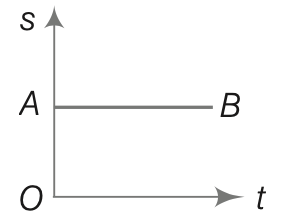
- Uniform Motion (Zero Acceleration):
- Straight line with positive slope, indicating constant velocity.
-
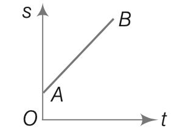
- Uniform Positive Acceleration:
- Upward curve, increasing slope, as distance covered increases over time.
-
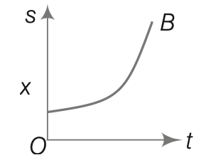
- Negative Acceleration:
- Downward curve, decreasing slope, as distance covered decreases over time.
-
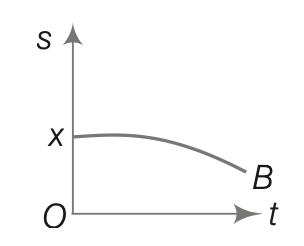
- Slope Interpretation:
- Slope of displacement-time graph gives average velocity.
- Velocity-Time Graphs:
- Constant Velocity (Zero Acceleration):
- Straight line parallel to time axis, slope = 0.
-
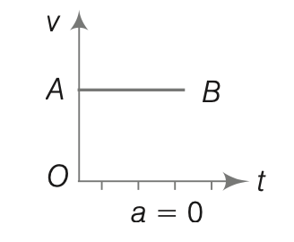
- Constant Positive Acceleration (Non-Zero Initial Velocity):
- Straight line with positive slope.
-
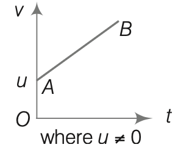
- Constant Positive Acceleration (Zero Initial Velocity):
- Straight line through origin, positive slope.
-
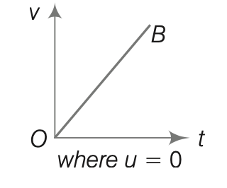
- Constant Negative Acceleration:
- Straight line with negative slope, velocity decreases uniformly.
-
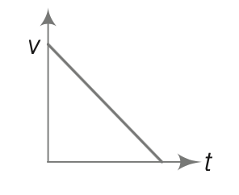
- Increasing Acceleration:
- Upward curve, non-uniform velocity increase.
-
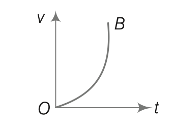
- Decreasing Acceleration:
- Downward curve, non-uniform velocity decrease.
-
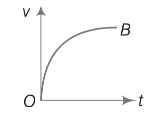
- Slope and Area:
- Slope gives average acceleration.
- Area under speed-time graph gives distance traveled.
- Equations of Motion:
- For uniform acceleration in a straight line:
- First Equation:
- \( v = u + at \).
- Second Equation:
- \( s = ut + \frac{1}{2} a t^2 \).
- Third Equation:
- \( v^2 = u^2 + 2as \).
- Distance in nth Second:
- Formula:
- \( s_n = u + \frac{1}{2} a (2n - 1) \).
- Example 1:
- Car starts from rest, accelerates at 4 m/s² for 6 s:
- Given:
- \( u = 0 \), \( a = 4 \, \text{m/s}^2 \), \( t = 6 \, \text{s} \).
- Velocity:
- \( v = u + at = 0 + 4 \times 6 = 24 \, \text{m/s} \).
- Distance:
- \( s = ut + \frac{1}{2} a t^2 = 0 + \frac{1}{2} \times 4 \times 6^2 = 72 \, \text{m} \).
- Example 2:
- Train at 90 km/h (25 m/s) decelerates at -0.5 m/s² until rest:
- Given:
- \( u = 25 \, \text{m/s} \), \( v = 0 \), \( a = -0.5 \, \text{m/s}^2 \).
- Distance:
- \( v^2 = u^2 + 2as \), so \( 0 = 25^2 + 2(-0.5)s \), \( s = 625 \, \text{m} \).
- Freely Falling Objects:
- Definition:
- Objects falling under gravity alone, with acceleration \( g = 9.8 \, \text{m/s}^2 \).
- Air resistance affects fall (e.g., feather vs. coin); in vacuum, all objects fall at the same rate.
- Equations of Free Fall:
- Replace \( a \) with \( g \):
- \( v = u + gt \).
- \( h = ut + \frac{1}{2} g t^2 \).
- \( v^2 = u^2 + 2gh \).
- Cases:
- Downward Fall:
- \( g \) is positive, velocity increases.
- Upward Motion:
- \( g \) is negative, velocity decreases.
- Dropped Object:
- Initial velocity \( u = 0 \).
- Upward Throw:
- Final velocity \( v = 0 \) at peak.
- Time Symmetry:
- Time to rise equals time to fall for the same height.
- Motion in a Plane:
- Definition:
- Motion described using two perpendicular axes (e.g., projectile motion, circular motion).
- Projectile Motion:
-
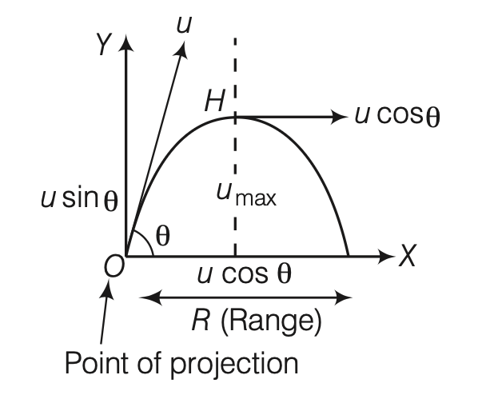
- Description:
- Object thrown obliquely follows a parabolic trajectory, combining horizontal (constant velocity) and vertical (under gravity) motions.
- Examples:
- Bullet fired from a tank, ball hit by a bat, bomb dropped from an airplane.
- Key Formulae:
- Horizontal Velocity Component:
- \( u_x = u \cos \theta \).
- Vertical Velocity Component:
- \( u_y = u \sin \theta \).
- Trajectory Equation:
- \( y = x \tan \theta - \frac{g x^2}{2 u^2 \cos^2 \theta} \).
- Time of Ascent:
- \( t_a = \frac{u \sin \theta}{g} \).
- Time of Descent:
- \( t_d = \frac{u \sin \theta}{g} \).
- Time of Flight:
- \( T = t_a + t_d = \frac{2 u \sin \theta}{g} \).
- Maximum Height:
- \( H = \frac{u^2 \sin^2 \theta}{2 g} \).
- Range:
- \( R = \frac{u^2 \sin 2\theta}{g} \).
- Maximum Range:
- At \( \theta = 45^\circ \), \( R_{\text{max}} = \frac{u^2}{g} \).
- Height at Maximum Range:
- \( H = \frac{R_{\text{max}}}{4} \).
- Properties:
- Maximum range at \( \theta = 45^\circ \).
- Equal ranges for \( \theta \) and \( 90^\circ - \theta \).
- Horizontal velocity constant, speed minimum at peak (\( u \cos \theta \)).
- Acceleration constant (\( g \)).
- Circular Motion:
- Description:
- Particle moves along a circular path; uniform circular motion has constant speed but changing velocity due to direction change.
- Key Terms:
- Time Period (T):
- Time for one revolution, unit: second.
- Frequency (n):
- Revolutions per unit time, unit: s⁻¹ (Hertz).
- Relation:
- \( T = \frac{1}{n} \).
- Angular Displacement (\( \theta \)):
-
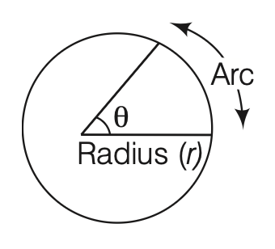
- Angle swept by radius, unit: radian.
- Formula:
- \( \theta = \frac{\text{Arc}}{\text{Radius}} \).
- Angular Velocity (\( \omega \)):
- Rate of change of angular displacement, unit: rad/s.
- Formula:
- \( \omega = \frac{\theta}{t} = \frac{2\pi}{T} = 2\pi n \).
- Relation to linear velocity:
- \( v = \omega r \).
- Angular Acceleration (\( \alpha \)):
- Rate of change of angular velocity, unit: rad/s².
- Relation to linear acceleration:
- \( a = \alpha r \).
- Centripetal Acceleration:
- Directed toward the center, required to maintain circular path.
- Formula:
- \( a_c = \frac{v^2}{r} = \omega^2 r \).
- Applications:
- Example:
- In sports like javelin throw, optimal angle (\( 45^\circ \)) maximizes range.
- Example:
- Uneven accelerations on curved roads cause discomfort (e.g., motion sickness in buses).
- Force and Laws of Motion
- Force
- Definition:
- Any action causing a push or pull on a body, altering its state of rest or motion.
- Vector quantity; SI unit:
- newton (N), where \( 1 \, \text{N} = 1 \, \text{kg m s}^{-2} \).
- CGS unit:
- dyne, where \( 1 \, \text{N} = 10^5 \, \text{dyne} \).
- Examples:
- Kicking a football, lifting a box, stretching a rubber band.
- Fundamental Forces in Nature
- Types:
-
| S.No. | Name | Relative Strength | Range | Operates Among |
|---|
| 1 | Gravitational Force | 1 | Infinite | All objects in universe |
| 2 | Weak Nuclear Force | 10^25 | Very short (~10^-16 m) | Elementary particles (e.g., electron, neutrino) |
| 3 | Electromagnetic Force | 10^36 | Not very large | Charged particles |
| 4 | Strong Nuclear Force | 10^38 | Very short (~10^-15 m) | Nucleons, heavier elementary particles |
- Gravitational Force:
- Attraction between all objects; weakest force, significant for celestial bodies.
- Weak Nuclear Force:
- Acts in β-decay (radioactivity); 10^25 times stronger than gravitational force.
- Electromagnetic Force:
- Acts between charged particles; attractive (unlike charges) or repulsive (like charges); governed by Coulomb’s law.
- Dominates atomic and molecular scales; 10^36 times stronger than gravitational force.
- Strong Nuclear Force:
- Binds protons and neutrons in nucleus; strongest force, acts at very short range (~10^-15 m); 10^38 times stronger than gravitational force.
- Types of Force
- Balanced Forces:
- Net effect is zero; only change body’s shape (e.g., equal pulls on a block prevent motion).
- Unbalanced Forces:
- Non-zero net effect; cause change in speed or direction (e.g., accelerating an object).
- Contact Forces:
- Act through physical contact (e.g., pushing a cart).
- Field Forces:
- Act without contact (e.g., gravitational force, electric force).
- Inertia
- Definition:
- Property of an object to resist changes in its state of rest or motion along a straight line.
- Types:
- Inertia of Rest:
- Resists change from rest (e.g., book on a table stays still).
- Inertia of Motion:
- Resists change in motion (e.g., moving car resists stopping).
- Inertia of Direction:
- Resists change in direction (e.g., object in motion resists turning).
- Newton’s Laws of Motion
- Overview:
- Proposed by Sir Isaac Newton in 1687 (Principia); govern the behavior of objects under force.
- First Law (Law of Inertia):
- A body remains at rest or in uniform motion along a straight line unless acted upon by an external force.
- Phenomena:
- Passenger falls backward when a bus starts suddenly due to inertia of rest.
- Passenger falls forward when a bus stops suddenly due to inertia of motion.
- Fruits/leaves fall when a tree is shaken due to inertia of rest.
- Seat belts prevent passengers from being thrown forward during sudden stops (inertia of motion).
- Dishes remain on a table when cloth is pulled quickly due to inertia of rest.
- Second Law:
- Rate of change of momentum is proportional to the applied unbalanced force and occurs in the direction of the force.
- Formula:
- \( F = \frac{dp}{dt} \), where \( p = mv \) (momentum), so \( F = ma \).
- Example:
- If \( m = 1 \, \text{kg} \), \( a = 1 \, \text{m/s}^2 \), then \( F = 1 \, \text{N} \).
- Phenomena:
- Table tennis ball causes less pain than a cricket ball due to lower momentum (lower speed, same mass).
- High jumpers land on cushioned beds to increase stopping time, reducing force (\( F = \frac{\Delta p}{\Delta t} \)).
- Cricket players move hands backward when catching to increase stopping time, reducing force.
- Third Law (Law of Action and Reaction):
- For every action, there is an equal and opposite reaction acting on different bodies.
- Phenomena:
- Walking:
- Foot pushes ground backward (action), ground pushes person forward (reaction).
- Swimming:
- Swimmer pushes water backward (action), water pushes swimmer forward (reaction).
- Walking on sand is difficult due to weak reaction force from displaced sand.
- Momentum
- Definition:
- Product of mass and velocity; vector quantity, SI unit: kg m/s.
- Formula:
- \( p = mv \).
- Phenomena:
- Truck requires more force than a car to achieve same speed due to higher mass and momentum.
- Bullet pierces target due to high momentum from high velocity, unlike a thrown stone.
- Law of Conservation of Momentum:
- Total momentum of a system remains constant if no external force acts.
- Formula:
- For two bodies, \( m_1 u_1 + m_2 u_2 = m_1 v_1 + m_2 v_2 \).
- Phenomena:
- Man jumping from a boat pushes it backward (equal and opposite momentum).
- Rocket propulsion:
- Ejected gas imparts equal and opposite momentum to the rocket.
- Impulse
- Definition:
- Product of force and time for a large force acting briefly; equals change in momentum.
- Formula:
- \( \text{Impulse} = F \cdot \Delta t = \Delta p \).
- SI unit:
- N s or kg m/s.
- Phenomena:
- Chinaware wrapped in paper/straw increases impact time, reducing force and breakage.
- Train bogies with buffers increase impact time, reducing force during shunting.
- Athletes stop gradually after a race to increase stopping time, reducing force.
- Reference Frame
- Definition:
- System where positions and distances are measured relative to a fixed point.
- Types:
- Inertial Frame:
- Accelerations due to real forces; Newton’s laws apply (e.g., stationary ground).
- Non-Inertial Frame:
- Accelerations due to pseudo forces; Newton’s laws do not apply (e.g., accelerating car).
- Apparent Weight in a Lift:
-
| Case | Lift Condition | Apparent Weight (R) | Relation to Actual Weight (mg) |
|---|
| I | At rest | R = mg | Equal |
| II | Uniform motion (up/down) | R = mg | Equal |
| III | Accelerating upwards | R = mg + ma | Greater |
| IV | Accelerating downwards | R = mg - ma | Less |
| V | Freely falling | R = 0 | Zero (weightlessness) |
- Friction
- Definition:
- Force opposing relative motion between two surfaces in contact; parallel to the surface.
- Types:
- Static Friction:
- Acts before motion starts; self-adjusting.
- Formula:
- \( f_s = \mu_s R \), where \( \mu_s \) is coefficient of static friction, \( R \) is normal reaction.
- Relation:
- \( \mu_s = \tan \theta \), where \( \theta \) is angle of friction.
- Limiting Friction:
- Maximum static friction before sliding begins.
- Formula:
- \( f_l = \mu_l R \), where \( \mu_l \) is coefficient of limiting friction.
- Depends on surface nature, not area.
- Kinetic Friction:
- Acts during relative motion.
- Formula:
- \( f_k = \mu_k R \), where \( \mu_k \) is coefficient of kinetic friction.
- Types:
- Rolling Friction:
- When one body rolls over another; minimal compared to other frictions.
- Sliding Friction:
- When one body slides over another; greater than rolling friction.
- Friction as a Necessary Evil:
- Necessity:
- Enables walking, gripping objects, vehicle braking, securing nuts/bolts, writing.
- Evil:
- Causes wear and tear, heat production, energy loss in machinery.
- Methods to Reduce Friction:
- Polishing surfaces to reduce roughness.
- Using lubricants (e.g., oil, grease) to fill surface irregularities.
- Ball bearings:
- Reduce friction by rolling, minimizing energy loss.
- Example:
- Ball bearings in machinery reduce wear and energy loss.
-
| Component | Function |
|---|
| Fixed Part | Stationary component of machine |
| Rotating Part | Moving component |
| Ball Bearings | Small steel balls reducing friction between parts |
- Phenomena:
- Earthquakes occur when forces exceed frictional resistance between rocks, releasing energy.
- Centripetal and Centrifugal Forces
- Centripetal Force:
- Real force directed toward the center of a circular path, enabling circular motion.
- Formula:
- \( F = \frac{m v^2}{r} = m \omega^2 r \), where \( v \) is linear velocity, \( r \) is radius, \( \omega \) is angular velocity.
- Phenomena:
- Earth orbits Sun due to gravitational centripetal force.
- Electrons orbit nucleus due to electrostatic centripetal force.
- Centrifugal Force:
- Pseudo force due to inertia, acting outward in a circular path; reaction to centripetal force.
- Applications:
- Banking of Roads:
- Outer edge raised to provide centripetal force via normal reaction, aiding vehicles on curves.
- Centrifuge:
- Separates particles by density using centrifugal effect.
- Cream Separator:
- Uses centrifugal force to separate lighter cream from milk.
- Washing Machine Drier:
- High-speed rotation expels water through perforated walls due to centrifugal force.
- Work, Power, and Energy
- Work
- Definition:
- Work is done when a force causes a displacement in a body.
- Formula:
- \( W = \vec{F} \cdot \vec{s} = F s \cos \theta \), where \( F \) is force, \( s \) is displacement, and \( \theta \) is the angle between force and displacement.
- Example:
- Pulling a trolley over a distance.
- Characteristics:
- Scalar quantity; SI unit:
- joule (J) or newton-metre (N·m); CGS unit: erg (\( 1 \, \text{J} = 10^7 \, \text{erg} \)).
- \( 1 \, \text{J} = 1 \, \text{N} \cdot 1 \, \text{m} \).
- Work Done by Force at an Angle:
-
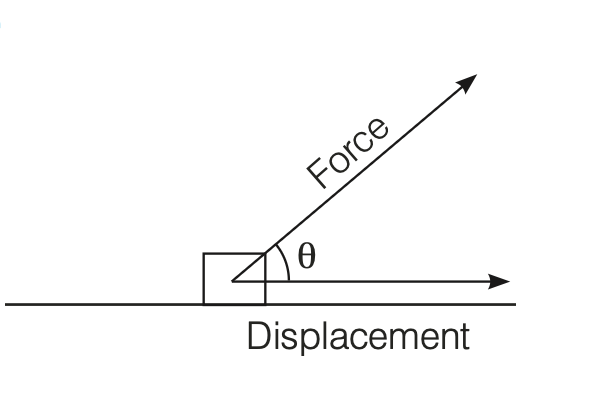
- Formula:
- \( W = F s \cos \theta \).
- Maximum work at \( \theta = 0^\circ \) (force and displacement in same direction).
- Zero work at \( \theta = 90^\circ \) (force perpendicular to displacement).
- Negative work at \( \theta = 180^\circ \) (force opposite to displacement).
- Types of Work:
- Positive Work:
- Force and displacement in the same direction (e.g., pulling an object toward oneself).
- Negative Work:
- Force and displacement in opposite directions (e.g., frictional force opposing sliding motion).
- Zero Work:
- Force perpendicular to displacement (e.g., coolie carrying load horizontally, circular motion with zero net displacement).
- Conservative and Non-Conservative Forces
- Conservative Forces:
- Work done depends only on initial and final positions, not the path.
- Examples:
- Gravitational force, electrostatic force, elastic force, magnetic force.
- Non-Conservative Forces:
- Work done depends on the path taken.
- Examples:
- Frictional force, viscous force, air drag.
- Power
- Definition:
- Rate of doing work: \( P = \frac{W}{t} \).
- Scalar quantity; SI unit: watt (W) or J/s.
- Other Units:
-
| Unit | Equivalence |
|---|
| Kilowatt (kW) | 10^3 W |
| Megawatt (MW) | 10^6 W |
| Horsepower (HP) | 746 W |
| Kilowatt-hour (kWh) | 3.6 \times 10^6 J |
- Average Power Consumption:
-
| Activity | Power (W) |
|---|
| Heartbeat | 1.2 |
| Sleeping | 75 |
| Slow Walking | 200 |
| Bicycling | 500 |
- Energy
- Definition:
- Capacity to do work; scalar quantity, SI unit: joule (J), CGS unit: erg.
- Larger unit:
- kilojoule (kJ) = 10^3 J.
- Practical Units:
-
| Unit | Symbol | Equivalence (J) |
|---|
| Erg | erg | 10^-7 |
| Calorie | cal | 4.2 |
| Kilowatt-hour | kWh | 3.6 \times 10^6 |
| Electron volt | eV | 1.6 \times 10^-19 |
- Forms of Energy:
- Heat Energy:
- Due to temperature.
- Internal Energy:
- Due to molecular configuration and random motion.
- Electrical Energy:
- Required to maintain current flow in appliances.
- Chemical Energy:
- Absorbed/released during chemical reactions.
- Nuclear Energy:
- Released during nuclear reactions (fission/fusion).
- Kinetic Energy:
- Energy due to motion:
- \( KE = \frac{1}{2} m v^2 = \frac{p^2}{2m} \), where \( m \) is mass, \( v \) is velocity, \( p \) is momentum.
- Examples:
- Moving cricket ball displacing a wicket, hammer driving a nail.
- Potential Energy:
- Energy due to position or shape.
- Gravitational Potential Energy:
- \( U = mgh \), where \( g \) is acceleration due to gravity, \( h \) is height.
- Examples:
- Water in a dam, stone on a roof, wound spring in a watch.
- Mechanical Energy:
- Sum of kinetic and potential energy.
- Work-Energy Theorem
- Work done by all forces equals the change in kinetic energy: \( W = \Delta KE \).
- Example:
- Striking stones produces heat (spark) as mechanical work converts to heat energy.
- Law of Conservation of Energy
- Energy cannot be created or destroyed, only transformed.
- Example:
- Falling object converts potential energy (\( mgh \)) to kinetic energy (\( \frac{1}{2} m v^2 \)); total energy remains constant: \( mgh + \frac{1}{2} m v^2 = \text{constant} \).
- Energy Transformation
- Conversion of energy from one form to another; dissipation is conversion to less useful forms.
- Examples:
- Photosynthesis: Solar energy to chemical energy in plants.
- Throwing a ball: Muscular energy to kinetic energy.
- Stretched bow: Potential energy to kinetic energy of an arrow.
- Common Transformations:
-
| Instrument | Transformation |
|---|
| Electric Motor | Electrical to mechanical |
| Electric Generator | Mechanical to electrical |
| Steam Engine | Heat to kinetic |
| Electric Bulb | Electrical to light |
| Dry Cell | Chemical to electrical |
| Solar Cell | Light to electrical |
| Microphone | Sound to electrical |
| Loudspeaker | Electrical to sound |
- Einstein’s Mass-Energy Equivalence
- Mass and energy are interconvertible: \( E = m c^2 \), where \( c = 3 \times 10^8 \, \text{m/s} \).
- Collision
- Definition:
- Occurs when bodies physically strike or influence each other’s paths.
- Types:
- Elastic Collision:
- Momentum and kinetic energy conserved; common in atomic/nuclear collisions.
- Inelastic Collision:
- Momentum conserved, kinetic energy not conserved; common in macroscopic collisions.
- Completely inelastic:
- Bodies stick together post-collision.
- Sources of Energy
- Definition:
- Systems providing useful energy steadily over time.
- Classification:
- Renewable Sources:
- Inexhaustible, continuously produced.
- Examples:
- Solar, wind, hydro, biofuels, tidal, wave, ocean thermal.
- Advantages:
- Long-lasting, freely available, non-polluting.
- Non-Renewable Sources:
- Finite, cannot be quickly replenished.
- Examples:
- Fossil fuels (coal, petroleum, natural gas), fissionable materials.
- Disadvantages:
- Depleting, difficult to find new deposits, cause pollution.
- Fuels:
- Sources for household/commercial use (e.g., coal, LPG, biogas, CNG).
- Ideal Fuel Features:
- High calorific value, proper ignition temperature, minimal harmful emissions, cheap, easy to handle, burns smoothly, minimal residue.
- Calorific Value:
- Heat produced per unit mass/volume.
- Ignition Temperature:
- Temperature at which fuel starts producing energy.
- Conventional Sources of Energy
- Fossil Fuels:
- Formed from prehistoric remains under heat and pressure.
- Disadvantages:
- Non-renewable, cause air pollution, release greenhouse gases (e.g., CO₂), contribute to acid rain.
- Thermal Power Plants:
- Burn fossil fuels to produce steam, driving turbines for electricity.
- Often located near coal/oil fields for efficient fuel transport.
- Hydro Power Plants:
-
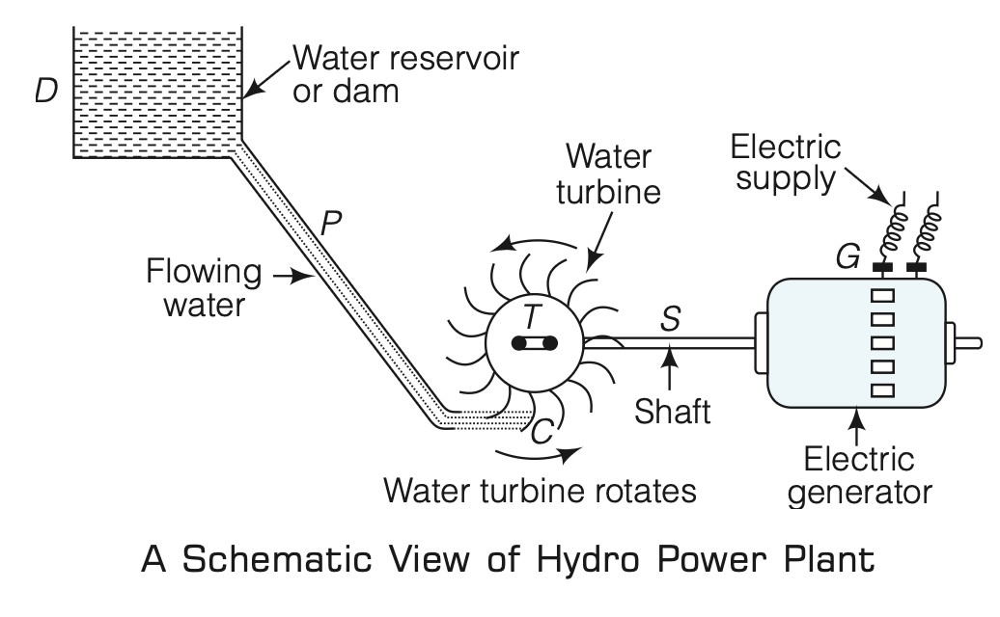
- Convert potential energy of stored water into electricity via turbines.
- Principle:
- Water stored in reservoirs (dams) gains potential energy, flows to turbines, rotates generators.
- Advantages:
- Non-polluting, renewable, flood control, irrigation support.
- Disadvantages:
- Ecological damage, habitat submersion, soil fertility reduction, limited suitable locations, methane production from submerged vegetation, rehabilitation issues.
- Examples:
- Tehri Dam (Ganga), Sardar Sarovar Dam (Narmada).
- Improvements in Conventional Energy Technologies
- Biomass:
- Waste from living/dead organisms (e.g., wood, cow dung, bagasse).
- Used for fuel, electricity generation (bioenergy).
- Biogas:
- Mixture of methane, CO₂, H₂S, H₂ from anaerobic decomposition of organic waste (e.g., cow dung).
- Biogas Plant:
-
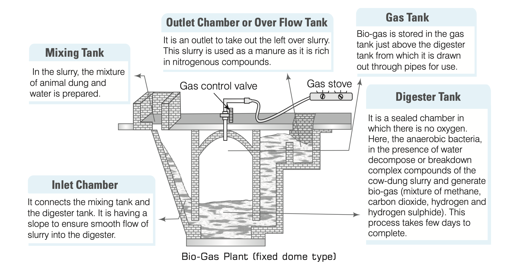
- Components:
- Mixing tank, inlet chamber, digester tank (anaerobic decomposition), gas tank, outlet chamber (slurry as manure).
- Types:
- Floating gas holder, fixed dome.
- Advantages:
- Smokeless, high calorific value, clean fuel, nutrient-rich slurry, efficient waste disposal.
- Uses:
- Cooking, running engines, generating electricity.
- Non-Conventional Sources of Energy
- Wind Energy:
- Kinetic energy from moving air.
- Uses:
- Electricity generation, propelling sailboats, water pumping, grinding grain.
- Windmill:
- Blades rotate under wind force, driving machines (e.g., water pumps, generators).
- Wind Generator:
- Wind turbine rotates to produce electricity.
- Wind Energy Farm:
- Multiple windmills over a large area (e.g., Muppandal, Tamil Nadu: 380 MW).
- Major farms:
- Jaisalmer (Rajasthan), Brahmanvel, Dhalgaon, Vankusawade (Maharashtra).
- Advantages:
- Environment-friendly, no recurring costs, non-polluting.
- Limitations:
- Requires consistent wind (min. 15 km/h), large land area, high setup costs, maintenance challenges, disrupts rainfall patterns.
- Solar Energy:
- Energy from the sun (heat and light).
- Traditional Uses:
- Drying clothes, salt production, drying food grains, preserving food.
- Advantages:
- Non-polluting, abundant, free, practical for appliances.
- Limitations:
- Diffuse energy, unavailable at night or on cloudy days, non-uniform availability.
- Solar Energy Devices:
- Solar Heater, Concentrators, Cooker, Cells.
- Components:
- Black Painted Surfaces:
- Absorb more heat.
- Glass Sheet Cover:
- Traps infrared via greenhouse effect.
- Reflectors:
- Increase solar energy collection (plane, concave, parabolic).
- Solar Concentrators:
- Focus sunlight into a small area for high temperatures.
- Solar Power Plant:
- Uses concentrated solar energy to produce steam, driving turbines.
- Solar Cooker:
-
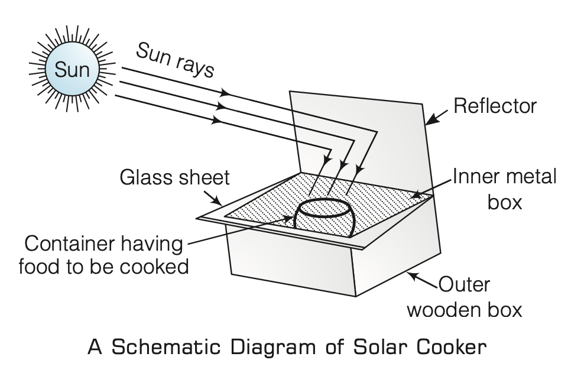
- Cooks food using solar heat (100–140°C).
- Components:
- Insulated box (black interior), glass cover, plane mirror reflector.
- Advantages:
- Fuel-saving, non-polluting, preserves nutrients, cooks multiple items.
- Limitations:
- Ineffective on cloudy days/night, unsuitable for frying/chapatis, needs repositioning.
- Greenhouse Effect:
- Gases (CO₂, water vapor, methane) trap earth’s reflected heat, warming the atmosphere.
- Sources:
- Volcanic eruptions, respiration, fossil fuel burning.
- Solar Cell (Photovoltaic Cell):
- Converts solar energy to electrical energy using semiconductors (e.g., silicon, selenium).
- Efficiency:
- Silicon (~10–15%), selenium (~25%).
- Construction:
- Semiconductor layers develop potential difference under light.
- Advantages:
- No moving parts, low maintenance, suitable for remote areas.
- Uses:
- Satellites, street lighting, traffic signals, water pumps, lighthouses, electronic devices.
- Solar Panel:
- Array of solar cells for higher power output; expensive due to silver interconnections.
- Example:
- Largest solar furnace in France.
- Energy from the Sea:
- Tidal Energy:
-
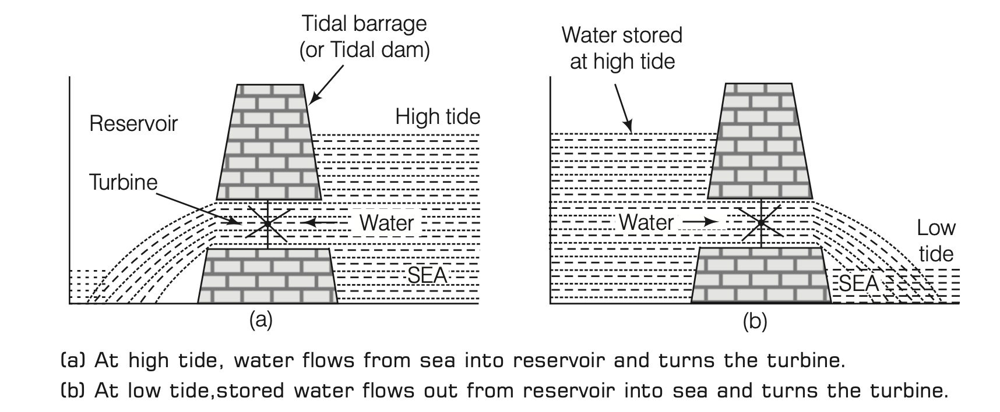
- Energy from rising/falling tidal waves due to moon’s gravitational pull.
- Harnessed via tidal barrages/dams.
- Limitations:
- Insufficient tide height, limited suitable locations.
- Wave Energy:
- Kinetic energy from wind-driven sea waves used to rotate turbines.
- Ocean Thermal Energy:
- Uses temperature difference between surface and deep ocean water.
- Geothermal Energy:
- Heat from earth’s interior; independent of solar energy.
- Nuclear Energy:
- Energy from atomic nuclei via nuclear reactions.
- Types:
- Nuclear Fission:
- Heavy nucleus splits, releasing energy (e.g., U-235).
- Nuclear Fusion:
- Light nuclei fuse, releasing energy.
- Nuclear Power Plant:
- Uses controlled fission to produce steam, driving turbine generators.
- Components:
- Nuclear reactor, heat exchanger, steam turbine, electric generator.
- Process:
- \( \text{Nuclear Energy (U-235)} \to \text{Heat Energy (Steam)} \to \text{Kinetic Energy (Turbine)} \to \text{Electrical Energy} \).
- Gravitation
- Definition:
- Non-contact force of attraction between any two bodies in the universe.
- Earth's gravitational force (gravity) pulls bodies toward its center.
- Characteristics of Gravitational Force:
- Acts at a distance, requiring no physical contact.
- Forms action-reaction pair (equal in magnitude, opposite in direction).
- Weakest force in nature; 10^36 times weaker than electrostatic force, 10^38 times weaker than nuclear force.
- Conservative and constant force.
- Small for small bodies, significant for large bodies (e.g., Sun and Earth).
- Inverse square force:
- \( F \propto \frac{1}{r^2} \).
- Universal Law of Gravitation (Newton’s Law):
- Force between two objects is proportional to the product of their masses and inversely proportional to the square of the distance between them.
- Formula:
- \( F = G \frac{m_1 m_2}{r^2} \), where:
- \( m_1, m_2 \): Masses of the two bodies.
- \( r \): Distance between their centers.
- \( G \): Universal gravitational constant (\( 6.67 \times 10^{-11} \, \text{N·m}^2/\text{kg}^2 \)).
- Dimensional formula of \( G \):
- \( [M^{-1} L^3 T^{-2}] \).
- Applicable to all bodies regardless of size, shape, or position.
- Importance of Universal Law of Gravitation:
- Explains:
- Binding of objects to Earth.
- Moon’s orbit around Earth.
- Presence of planetary atmospheres.
- Gravity:
- Gravitational force when one body is Earth; pulls objects toward Earth’s center.
- Causes freely thrown objects to fall to the surface.
- Acceleration Due to Gravity (\( g \)):
- Acceleration of a falling object due to Earth’s gravitational force.
- Vector quantity; SI unit:
- \( \text{m/s}^2 \); direction: toward Earth’s center.
- Standard value:
- \( g = 9.8 \, \text{m/s}^2 \).
- Expression:
- For a body of mass \( m \) on Earth’s surface (mass \( M_e \), radius \( R_e \)):
- Force:
- \( F = \frac{G M_e m}{R_e^2} \).
- Newton’s second law:
- \( F = m g \).
- Thus:
- \( g = \frac{G M_e}{R_e^2} \).
- Independent of the body’s mass; all objects fall at the same rate in a vacuum.
- Phenomena:
- Pendulum clocks slow on mountains due to decreased \( g \), increasing time period.
- Spring-controlled watches are unaffected by \( g \).
- Tennis balls bounce higher on hills (lower \( g \)) than on plains.
- Giddiness on merry-go-rounds due to apparent weight changes.
- Variations of \( g \):
- Outside Earth’s Surface:
- At height \( h \):
- \( g' = g \left( 1 + \frac{h}{R_e} \right)^{-2} \approx g \left( 1 - \frac{2h}{R_e} \right) \) for \( h \ll R_e \).
- \( g \) decreases as height increases.
- Inside Earth:
- At depth \( h \):
- \( g' = g \left( 1 - \frac{h}{R_e} \right) \).
- \( g \) decreases with depth, zero at Earth’s center.
- At Different Latitudes:
- \( g' = g - R_e \omega^2 \cos^2 \lambda \), where \( \omega \) is Earth’s angular velocity, \( \lambda \) is latitude.
- Maximum at poles (\( \lambda = 90^\circ \), \( g' = g \)).
- Minimum at equator (\( \lambda = 0^\circ \), \( g' = g - R_e \omega^2 \)).
- Due to Earth’s Shape:
- Earth is flattened at poles, so \( R_e \) is smaller at poles than at equator; \( g \) is greater at poles.
- Mass and Weight:
- Mass:
- Measures inertia; scalar quantity, SI unit: kg.
- Constant everywhere; cannot be zero.
- Weight:
- Force of gravity on a body: \( w = m g \).
- Vector quantity; SI unit: newton (N); direction: downward.
- Varies with \( g \); e.g., \( 1 \, \text{kg} \) mass has weight \( 9.8 \, \text{N} \) on Earth.
- Zero at Earth’s center (equal gravitational forces cancel).
- Weightlessness:
- Effective weight becomes zero in:
- Free fall under gravity.
- Inside spacecraft or satellites.
- At Earth’s center.
- In a freely falling lift.
- Weight on the Moon:
- Moon’s gravity:
- \( g_{\text{moon}} = \frac{g_{\text{earth}}}{6} \approx 1.63 \, \text{m/s}^2 \).
- Sun’s gravity:
- \( \approx 27 g_{\text{earth}} \).
- Planets and Satellites:
- Planet:
- Heavenly body revolving around the Sun (e.g., Earth, Mars).
- Satellite:
- Body revolving around a planet.
- Natural:
- e.g., Moon (Earth’s satellite).
- Artificial:
- e.g., Aryabhatta, INSAT-B.
- Types of Satellites:
- Geostationary (Parking) Satellites:
- Appear fixed from Earth; orbit at 36,000 km height, radius 42,400 km.
- Time period:
- 24 hours.
- Examples:
- INSAT-2B, INSAT-2C.
- Uses:
- TV signal reflection, global telecasting.
- Polar Satellites:
- Orbit at ~880 km height; time period: ~84 minutes.
- Examples:
- PSLV series.
- Uses:
- Weather forecasting, atmospheric studies.
- Energy of a Satellite:
- Binding (total) energy:
- \( E = -\frac{G m M}{2 r} \), where \( m \) is satellite mass, \( M \) is Earth’s mass, \( r \) is orbital radius.
- Includes:
- Potential energy for height.
- Kinetic energy for orbit.
- Kepler’s Laws of Planetary Motion:
-
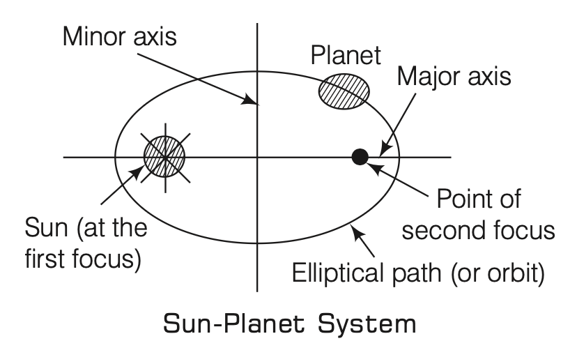
- First Law (Law of Orbits):
- Planets move in elliptical orbits with the Sun at one focus.
- Second Law (Law of Areas):
- Radius vector sweeps equal areas in equal times.
- Third Law (Law of Periods):
- Square of orbital period proportional to cube of semi-major axis: \( T^2 \propto a^3 \), or \( T^2 = K a^3 \), where \( K \) is Kepler’s constant.
- Orbital Velocity:
- Velocity to maintain a satellite in orbit:
- \( v_o = \sqrt{\frac{G M_e}{R_e + h}} = \sqrt{\frac{g R_e^2}{R_e + h}} \).
- Near Earth’s surface (\( h \approx 0 \)):
- \( v_o = \sqrt{g R_e} \approx 7.92 \, \text{km/s} \).
- Outcomes:
- \( v < v_o \):
- Satellite falls back (parabolic path).
- \( v = v_o \):
- Stable circular orbit.
- Escape Velocity:
- Minimum speed to escape Earth’s gravitational field: \( v_e = \sqrt{2 g R_e} = \sqrt{2} v_o \approx 11.2 \, \text{km/s} \).
- Moon’s escape velocity: 2.4 km/s (no atmosphere due to low escape velocity).
- If orbital speed equals escape velocity, satellite escapes its orbit.
- Centre of Mass and Rotational Motion
- Centre of Mass
- Definition:
- Point where the entire mass of a body/system is assumed concentrated.
- External forces applied at this point do not affect the body's state of rest/motion.
- Formula:
- For a system of \( n \) particles with masses \( m_1, m_2, \ldots, m_n \) at position vectors \( \vec{r}_1, \vec{r}_2, \ldots, \vec{r}_n \):
- \( \vec{r}_{\text{CM}} = \frac{m_1 \vec{r}_1 + m_2 \vec{r}_2 + \cdots + m_n \vec{r}_n}{m_1 + m_2 + \cdots + m_n} \).
- Position of Centre of Mass (Homogeneous Bodies):
-
| Body | Position of Centre of Mass |
|---|
| Uniform Hollow Sphere | Centre of the sphere |
| Uniform Solid Sphere | Centre of the sphere |
| Uniform Circular Ring | Centre of the ring |
| Uniform Circular Disc | Centre of the disc |
| Uniform Rod | Centre of the rod |
| Plane Lamina (Square/Rectangle/Parallelogram) | Intersection of diagonals |
| Triangular Plane Lamina | Intersection of medians |
| Rectangular/Cubical Block | Intersection of diagonals |
| Hollow Cylinder | Middle point of the axis |
| Solid Cylinder | Middle point of the axis |
| Cone/Pyramid | On axis, at \( \frac{3h}{4} \) from vertex (\( h \): height) |
- Key Points:
- Depends on shape, size, and mass distribution; may lie inside or outside the body.
- Moves in translatory motion, remains fixed in rotatory motion.
- Centre of Gravity
- Definition:
- Point where the body's weight acts and total gravitational torque is zero; coincides with centre of mass.
- Position for Rigid Bodies:
-
| Body | Position of Centre of Gravity |
|---|
| Uniform Bar/Rod | Mid-point of the axis |
| Triangular Solid Body | Intersection of medians |
| Rectangular/Square Solid | Intersection of diagonals |
| Circular Lamina | Centre of the circle |
| Conical Solid | At \( \frac{1}{4} \) height from base on axis |
| Hollow Cone | At \( \frac{1}{3} \) height from base on axis |
| Solid Spherical Body | Centre of the sphere |
- Torque
- Definition:
- Turning effect of a force (moment of force): \( \tau = F \cdot d \), where \( F \) is force, \( d \) is perpendicular distance from the axis of rotation.
- Vector quantity; SI unit: N·m; positive (anticlockwise), negative (clockwise).
- Phenomena:
- Maximum torque at door edges (e.g., handles placed at free edge).
- Long-arm wrench increases torque for unscrewing tight nuts.
- Couple
-
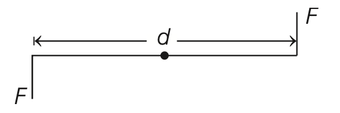
- Definition:
- Two equal, parallel forces with different lines of action; produces unidirectional rotation.
- Formula:
- \( \text{Couple} = F \cdot d \), where \( d \) is the distance between lines of action (couple arm).
- Vector quantity; SI unit: N·m.
- Equilibrium of Bodies
- Definition:
- Body neither moves linearly nor rotates; in equilibrium.
- Conditions:
- Vector sum of forces = 0.
- Algebraic sum of torques = 0.
- Forces represented by sides of a triangle (in order) produce equilibrium.
- Types:
- Stable Equilibrium:
- Body returns to original position; minimum potential energy.
- Unstable Equilibrium:
- Body moves further from position; increasing potential energy.
- Neutral Equilibrium:
- Body remains in equilibrium after displacement; constant potential energy.
- Note:
- Absolute equilibrium impossible due to lack of a fixed reference point in space.
- Rotational Motion
- Definition:
- Each particle moves in a circle around a fixed axis of rotation.
- Comparison:
- Pure translational motion:
- All particles have the same velocity.
- Rotational motion:
- Requires a pivot/fixed point; otherwise, motion is a combination of translation and rotation.
- Moment of Inertia (Rotational Inertia)
- Definition:
- Measures resistance to rotational motion; analogous to mass in linear motion.
- Formula:
- \( I = \sum m_i r_i^2 \), where \( m_i \) is mass of a particle, \( r_i \) is its distance from the axis.
- SI unit:
- kg·m²; dimensional formula: \( [M L^2] \).
- Moments of Inertia for Regular Shapes:
-
| Body | Axis | Moment of Inertia (\( I \)) |
|---|
| Thin Circular Ring (radius \( R \)) | Perpendicular to plane at centre | \( M R^2 \) |
| Thin Circular Ring (radius \( R \)) | Diameter | \( \frac{M R^2}{2} \) |
| Thin Rod (length \( L \)) | Perpendicular to rod at midpoint | \( \frac{M L^2}{12} \) |
| Circular Disc (radius \( R \)) | Perpendicular to disc at centre | \( \frac{M R^2}{2} \) |
| Circular Disc (radius \( R \)) | Diameter | \( \frac{M R^2}{4} \) |
| Hollow Cylinder (radius \( R \)) | Axis of cylinder | \( M R^2 \) |
| Solid Cylinder (radius \( R \)) | Axis of cylinder | \( \frac{M R^2}{2} \) |
| Solid Sphere (radius \( R \)) | Diameter | \( \frac{2 M R^2}{5} \) |
- Radius of Gyration
- Definition:
- Radial distance where the entire mass, if concentrated, yields the same moment of inertia.
- Formula:
- \( I = M k^2 \), so \( k = \sqrt{\frac{I}{M}} \).
- SI unit:
- metre (m); dimensional formula: \( [L] \).
- Kinetic Energy of Rotation
- Definition:
- Energy due to rotation: \( K = \frac{1}{2} I \omega^2 \), where \( \omega \) is angular velocity.
- Angular Momentum
- Definition:
- Momentum associated with rotational motion: \( L = I \omega \).
- SI unit:
- J·s (joule-second).
- Conservation of Angular Momentum:
- If external torque is zero, angular momentum is conserved: \( I_1 \omega_1 = I_2 \omega_2 \).
- Phenomena:
- Circus acrobats/ice skaters increase \( \omega \) by reducing \( I \) (pulling limbs inward).
- Divers perform somersaults by curling (reducing \( I \), increasing \( \omega \)) and stretching before landing.
- Helicopters use two propellers to avoid body rotation (counteracting torque).
- Simple Machine
- Definition:
- Device to overcome large forces with small forces or gain speed (e.g., lever, pulley, screw).
- Efficiency:
- \( \text{Efficiency} = \frac{\text{Work done by machine}}{\text{Input energy}} \times 100 \).
- Lever
- Definition:
- Rigid rod rotating about a fulcrum to apply force.
- Components:
- Load (\( w \)): Weight carried.
- Effort (\( p \)): Applied force.
- Fulcrum (\( f \)): Fixed pivot point.
- Principle:
- Based on torque equilibrium: \( p \cdot a = w \cdot b \), where \( a \) is effort arm, \( b \) is load arm.
- Mechanical Advantage:
- Ratio of load to effort: \( A = \frac{w}{p} = \frac{a}{b} \).
- Types of Lever:
- First Class Lever:
-
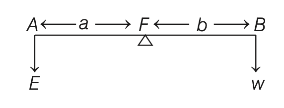
- Fulcrum between effort and load; e.g., scissors, seesaw, nail cutter.
- Mechanical advantage:
- \( a > b \), \( a = b \), or \( a < b \).
- Second Class Lever:
-
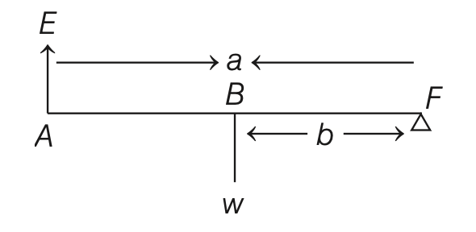
- Load between fulcrum and effort; \( a > b \), advantage > 1.
- Examples:
- Nutcracker, lemon juicer.
- Third Class Lever:
-
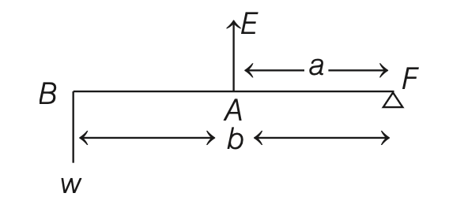
- Effort between fulcrum and load; \( a < b \), advantage < 1.
- Examples:
- Plough, tongs, ladder.
- Mechanical Properties of Solids
- Matter
- Definition:
- Consists of atoms and molecules; exists in three states: solid, liquid, gas.
- States:
- Solid:
- Molecules vibrate about fixed positions (e.g., stone).
- Liquid:
- Molecules vibrate and move freely within the material (e.g., water, milk, oil).
- Gas:
- Molecules are far apart, move at high velocities (e.g., H₂, SO₂, O₂, N₂).
- Classification:
- Physical:
- Solid, Liquid, Gas.
- Chemical:
- Pure Substance:
- Element (Metallic, Non-metallic), Compound (Organic, Inorganic).
- Mixture:
- Homogeneous, Heterogeneous.
- Elasticity
- Definition:
- Property of a body to regain its original shape and size after removal of deforming forces.
- Key Terms:
- Deforming Force:
- Force that changes a body’s configuration.
- Perfect Elastic Body:
- Regains original shape immediately and completely (e.g., quartz, phosphor bronze).
- Plastic Body:
- Does not regain original shape after deformation (e.g., putty, mud, paraffin wax).
- Perfectly Plastic Body:
- Remains deformed after force removal.
- Elastic Limit:
- Maximum deforming force where body fully recovers; beyond this, permanent deformation occurs.
- Elastic After Effect:
- Temporary delay in regaining original shape after force removal.
- Elastic Fatigue:
- Reduced elasticity due to repeated alternating forces.
- Stress:
- Internal restoring force per unit area:
- \( \text{Stress} = \frac{\text{Restoring Force}}{\text{Area}} \).
- SI unit:
- N/m²; dimensional formula: \( [M L^{-1} T^{-2}] \).
- Types:
- Normal Stress:
- Acts perpendicular to the surface.
- Tangential/Shearing Stress:
- Acts tangentially, changing shape without volume change.
- Strain:
- Ratio of change in configuration to original configuration: \( \text{Strain} = \frac{\text{Change in Configuration}}{\text{Original Configuration}} \).
- Dimensionless, no units.
- Types:
- Longitudinal Strain:
- \( \text{Longitudinal Strain} = \frac{\Delta L}{L} \), where \( \Delta L \) is change in length, \( L \) is original length.
- Volumetric Strain:
- \( \text{Volumetric Strain} = \frac{\Delta V}{V} \), where \( \Delta V \) is change in volume, \( V \) is original volume.
- Shearing Strain:
- \( \text{Shearing Strain} = \frac{\Delta x}{h} \), where \( \Delta x \) is displacement of uppermost layer, \( h \) is thickness.
- Phenomena:
- Glass is more elastic than rubber (less strain for same stress).
- Water is more elastic than air (less compressible, higher bulk modulus).
- Hooke’s Law (Modulus of Elasticity)
- Definition:
- Within elastic limits, stress is proportional to strain:
- \( \text{Stress} = E \cdot \text{Strain} \), where \( E \) is modulus of elasticity.
- Valid in the linear region of the stress-strain curve.
- Types of Modulus:
- Young’s Modulus (\( Y \)):
- Ratio of longitudinal stress to longitudinal strain:
- \( Y = \frac{\text{Longitudinal Stress}}{\text{Longitudinal Strain}} = \frac{F L}{A \Delta L} \).
- SI unit:
- N/m² (pascal); CGS unit: dyne/cm².
- Bulk Modulus (\( B \)):
- Ratio of normal stress to volumetric strain:
- \( B = -\frac{F V}{A \Delta V} \).
- Negative sign indicates volume decrease with increased pressure.
- SI unit:
- N/m² (pascal); CGS unit: dyne/cm².
- Order: Solids > Liquids > Gases.
- Shear Modulus (Modulus of Rigidity, \( \eta \)):
- Ratio of shearing stress to shearing strain:
- \( \eta = \frac{\text{Shearing Stress}}{\text{Shearing Strain}} \).
- SI unit:
- N/m² (pascal); CGS unit: dyne/cm².
- Note:
- For a perfectly rigid body, Young’s and bulk moduli are infinite.
- Poisson’s Ratio (\( \sigma \))
- Definition:
- Ratio of lateral strain to longitudinal strain:
- \( \sigma = \frac{\text{Lateral Strain}}{\text{Longitudinal Strain}} \).
- Lateral strain:
- Fractional change in perpendicular direction.
- Theoretical range:
- -1 to 0.5; typical range for solids: 0.25 to 0.35.
- Classification of Materials Based on Elasticity
- Ductile Materials:
- Large plastic range beyond elastic limit (e.g., copper, silver, iron, aluminium).
- Uses:
- Making springs, sheets.
- Brittle Materials:
- Small plastic range beyond elastic limit (e.g., glass, cast iron).
- Elastomers:
- Large strain for small stress, no plastic range (e.g., rubber, large blood vessels).
- Breaking Stress
- Definition:
- Stress at which a wire breaks.
- Applications:
- Crane ropes:
- Thickness based on elastic limit and safety factor.
- Bridges:
- Designed to withstand traffic, wind, and self-weight using elasticity principles.
- Mechanical Properties of Fluids
- Thrust and Pressure
- Thrust:
- Force acting perpendicular to an object's surface; effect depends on area.
- Vector quantity; SI unit: newton (N).
- Pressure:
- Force per unit area:
- \( p = \frac{F}{A} \), where \( F \) is thrust, \( A \) is area.
- Scalar quantity; SI unit: N/m² (pascal, Pa); 1 Pa = 1 N/m².
- Smaller area increases pressure for the same force; larger area reduces pressure.
- Phenomena:
- Broad bag handles reduce hand pressure.
- Railway tracks on sleepers spread train weight, reducing ground pressure.
- Walking exerts more pressure than standing (smaller contact area).
- Tractor wide tyres reduce ground pressure, preventing sinking.
- Train brakes use pressure difference when chain is pulled, activating pistons.
- Density
- Definition:
- Mass per unit volume:
- \( \rho = \frac{m}{V} \).
- Scalar quantity; SI unit: kg/m³.
- Water at 4°C:
- \( 1.0 \times 10^3 \, \text{kg/m}^3 \); ice: \( 0.9 \, \text{g/cm}^3 \).
- Properties:
- Constant under specified conditions.
- Objects float if density < liquid density; sink if density > liquid density.
- Decreases with temperature increase.
- Solid body:
- Density = substance density.
- Hollow body:
- Density < substance density.
- Relative Density:
- Ratio of substance density to water density at 4°C:
- \( \text{Relative Density} = \frac{\text{Density of substance}}{\text{Density of water at 4°C}} \).
- Unitless.
- Phenomena:
- Fish adjust density via air sac to float/sink in water.
- Pressure of Liquid (Hydrostatic Pressure)
- Definition:
- Normal force per unit area exerted by a liquid:
- \( p = \rho h g \), where \( \rho \) is liquid density, \( h \) is depth, \( g \) is acceleration due to gravity.
- At depth \( h \):
- \( p = p_0 + \rho h g \), where \( p_0 \) is atmospheric pressure.
- Gauge pressure:
- Excess pressure above atmospheric (\( \rho h g \)).
- Properties:
- Liquid flows from higher to lower level; free surface at rest is horizontal.
- Pressure proportional to depth.
- Pressure acts on container walls, increasing with depth.
- Equal pressure in all directions at a point in a liquid at rest.
- Mean pressure on vessel walls up to height \( h \): \( \frac{\rho h g}{2} \).
- Pascal’s Law
- Statement:
- Pressure at any point in a liquid at rest is the same, neglecting gravity effects.
- Pressure increase at one point is transmitted equally to all points and container walls.
- Applications:
- Hydraulic Lift:
- Small force on small-area piston transmits pressure to large-area piston, lifting heavy loads.
- Hydraulic Brakes:
- Brake pedal pressure on master cylinder transmits to wheel cylinder pistons, pressing brake shoes to stop wheels.
- Atmospheric Pressure
- Definition:
- Pressure exerted by Earth’s gaseous atmosphere.
- Maximum at sea level (~1 atm = \( 1.013 \times 10^5 \, \text{N/m}^2 \)); decreases with altitude.
- Units:
- SI:
- N/m² (pascal); CGS: dyne/cm².
- Other:
- mm/cm of mercury, torr (1 torr = 1 mm Hg), bar (1 bar = 10^5 Pa), millibar (1 mbar = 100 Pa).
- Phenomena:
- Fountain pen ink leaks at high altitudes due to lower atmospheric pressure.
- Nosebleeds at high altitudes due to pressure difference with blood vessels.
- Cooking is slower at high altitudes due to lower boiling point from reduced pressure.
- Buoyancy
- Definition:
- Tendency of a fluid to exert an upward force on an immersed object.
- Applies to liquids and gases.
- Buoyant Force (Upthrust):
- Upward force on immersed objects, reducing apparent weight.
- Depends on:
- Fluid density:
- Higher density increases buoyant force.
- Volume of immersed object:
- Proportional to displaced fluid volume.
- Centre of Buoyancy:
- Centre of gravity of displaced liquid.
- Archimedes’ Principle
- Statement:
- Buoyant force equals the weight of displaced fluid:
- \( F = \rho_{\text{fluid}} V_{\text{displaced}} g \).
- Applies to liquids and gases.
- Applications:
- Designing ships/submarines, lactometers (milk purity), hydrometers (liquid density), relative density measurement.
- Phenomena:
- Boats float due to buoyant force equaling their weight.
- Balloons rise due to buoyant force from displaced air.
- Laws of Floatation
- Conditions:
- Sinking:
- Buoyant force (\( F \)) < weight (\( w \)).
- Floating:
- \( F = w \), body fully or partially submerged.
- Rising:
- \( F > w \), part of body above liquid surface.
- Floating Body:
- \( \frac{\text{Volume of submerged part}}{\text{Total volume}} = \frac{\text{Density of solid}}{\text{Density of liquid}} \).
- \( \text{Volume of submerged part} = \frac{\text{Mass of solid}}{\text{Density of liquid}} \).
- Phenomena:
- Hydrogen-filled balloons rise (density < air).
- Ice floats with \( \frac{9}{10} \) submerged, \( \frac{1}{10} \) above water.
- Melting ice in a container does not change water level.
- Hydrometer
- Definition:
- Instrument to measure liquid density/relative density, based on floatation.
- Uses: Measure acid density in vehicle batteries, test milk purity (lactometer).
- Meta Centre and Stability
- Meta Centre:
- Point where the vertical line through the new centre of buoyancy (after tilting) meets the initial vertical line.
- Stable Equilibrium:
- Meta centre above centre of gravity; weight equals displaced liquid weight; vertical alignment of centre of gravity and floatation.
- Unstable Equilibrium:
- Meta centre below centre of gravity.
- Surface Tension
- Definition:
- Property causing liquid surface to minimize area, acting like a stretched membrane.
- Measured as force per unit length:
- \( \text{Surface Tension} = \frac{\text{Force}}{\text{Length}} = \frac{\text{Work Done}}{\text{Change in Area}} \).
- SI unit:
- N/m or J/m²; scalar quantity.
- Properties:
- Decreases with temperature, zero at critical temperature.
- Depends on medium on the other side of the surface.
- Causes spherical shape of small liquid drops.
- Phenomena:
- Soaps/detergents reduce water’s surface tension.
- Hot soup spreads more (lower surface tension), enhancing taste.
- Insects walk on water due to surface tension; kerosene lowers it, causing sinking.
- Soap bubbles are larger due to lower surface tension.
- Wet shaving brush hairs stick together due to contracting water film.
- Oil spreads on water (higher water surface tension).
- Adhesive and Cohesive Forces
- Adhesive Force:
- Attraction between molecules of different substances (e.g., ink-paper, water-glass).
- Enables writing with a pen.
- Cohesive Force:
- Attraction between molecules of the same substance (e.g., water-water).
- Stronger in solids/liquids, negligible in gases.
- Surface Energy
- Definition:
- Potential energy stored in increased liquid surface area due to work against surface tension.
- Angle of Contact
- Definition:
- Angle between tangents to liquid surface and solid surface at contact point, inside the liquid.
- Properties:
- Acute (< 90°):
- Liquid wets solid (e.g., water-glass, ~0°–8°).
- Obtuse (> 90°):
- Liquid does not wet solid (e.g., mercury-glass, ~135°–140°).
- Increases with temperature, decreases with soluble impurities.
- Waterproofing materials increase angle and surface tension.
- Meniscus shape:
- Concave (wetting, \( F_{\text{adhesive}} > F_{\text{cohesive}} \)).
- Convex (non-wetting, \( F_{\text{cohesive}} > F_{\text{adhesive}} \)).
- Plane (angle = 90°, e.g., water-silver).
- Independent of gravity.
- Table:
-
| Property | Angle < 90° | Angle = 90° | Angle > 90° |
|---|
| Substances | Water-glass | Water-silver | Mercury-glass |
| Angle | ~0° (acute) | 90° | ~135° (obtuse) |
| Meniscus | Concave | Plane | Convex |
| Capillary Action | Liquid rises | No effect | Liquid falls |
| Sticking to Solid | Wets | Does not wet | Does not wet |
| Cohesive vs. Adhesive | \( F_a > F_c \) | \( F_a = F_c \) | \( F_a < F_c \) |
| Surface Shape | Almost round | Spreads | Flat |
- Capillarity
- Definition:
- Rise or fall of liquid in a capillary tube due to surface tension.
- Factors Affecting Height:
- Higher surface tension:
- Greater height.
- Larger angle of contact:
- Smaller height.
- Larger tube radius:
- Smaller height.
- Higher liquid density:
- Smaller height.
- Properties:
- Acute angle:
- Liquid rises (e.g., water).
- Obtuse angle:
- Liquid falls (e.g., mercury).
- Moon:
- Liquid rises six times higher than on Earth.
- No energy conservation violation.
- Insufficient tube length:
- Liquid rises to tube’s end without overflowing.
- Phenomena:
- Water rises, mercury falls in capillary tubes (due to adhesive/cohesive forces).
- Blotting paper absorbs ink via capillarity; towels (not silk/nylon) wipe wet surfaces.
- Kerosene/wax rises in lantern/candle wicks.
- Coffee dissolves easily due to capillarity in granules.
- Plants transport water to leaves via stem capillaries.
- Split pen nib forms capillary for ink rise.
- Flow of Liquids
- Types:
- Streamline/Steady Flow:
- Particles follow the same path with constant velocity.
- Laminar Flow:
- Layers of different velocities flow without mixing.
- Turbulent Flow:
- Chaotic, continuously changing paths and velocities.
- Critical Velocity:
- Velocity below which flow is streamline, above which it is turbulent.
- Reynolds Number:
- Determines flow type:
- < 2000:
- Streamline/laminar.
- 2000–3000:
- Unstable, transitions between streamline and turbulent.
- > 3000:
- Turbulent.
- Equation of Continuity
- Statement:
- Product of area and velocity remains constant: \( A v = \text{constant} \).
- Volume flux (\( A v \)) is constant; narrower sections increase velocity, wider sections decrease it.
- Based on mass conservation.
- Energy of Flowing Liquid
- Types:
- Pressure Energy:
- Due to liquid pressure.
- Potential Energy:
- Due to height above a reference level.
- Kinetic Energy:
- Due to motion/velocity.
- Bernoulli’s Theorem
- Statement:
- For streamline flow of an ideal liquid, total energy per unit volume (pressure + potential + kinetic) is constant: \( p + \rho g h + \frac{1}{2} \rho v^2 = \text{constant} \).
- Static pressure (at rest) + dynamic pressure (due to velocity) = constant at same potential level.
- Applications:
- Venturimeter:
- Measures flow rate in tubes.
- Aeroplane Wing:
- Curved upper surface increases air speed, reducing pressure above, creating lift.
- Storm Roof Blow-Off:
- High wind speed reduces pressure above roof, lifting it.
- Magnus Effect:
- Spinning ball curves due to pressure difference from varying air speeds.
- Phenomena:
- Heart Attack:
- Plaque narrows arteries, increasing blood speed, lowering pressure, risking collapse.
- Lying vs. Standing:
- Lying equalizes blood pressure across body, reducing heart effort.
- Torricelli’s Theorem
-
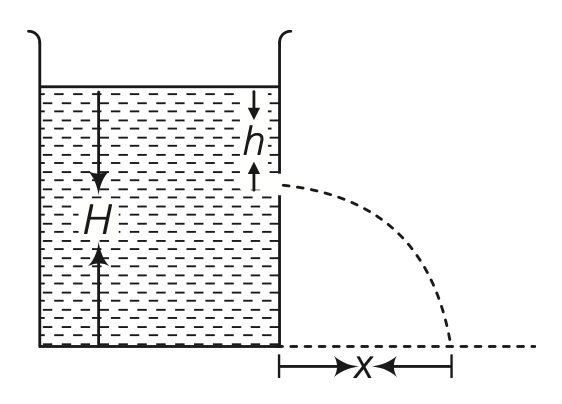
- Statement:
- Velocity of efflux from a hole at depth \( h \): \( v = \sqrt{2 g h} \).
- Viscosity
- Definition:
- Property opposing relative motion between liquid layers; viscous force is internal friction.
- Formula:
- \( F = -\eta A \frac{dv}{dx} \), where \( \eta \) is coefficient of viscosity, \( A \) is area, \( \frac{dv}{dx} \) is velocity gradient.
- SI unit:
- N·s/m² (Pa·s); other unit: poise (1 poise = 0.1 N·s/m²); 1 decapoise = 1 N·s/m².
- Effect of Temperature:
- Liquids:
- Viscosity decreases with temperature.
- Gases:
- Viscosity increases with temperature.
- Exception:
- Water’s viscosity behavior varies.
- Phenomena:
- Walking is easier in air (low viscosity) than water (high viscosity).
- Cloud particles fall slowly due to air’s viscosity.
- Thicker liquids (e.g., honey, glycerine) have higher viscosity.
- Swimming is easier in sea (lower viscosity) than rivers.
- Stokes’ Law
- Statement:
- Viscous force on a spherical body: \( F = 6 \pi \eta r v \), where \( r \) is radius, \( v \) is velocity.
- Applications:
- Millikan’s oil drop experiment (electron charge determination).
- Parachute descent (controls fall speed).
- Terminal Velocity
- Definition:
- Constant velocity when viscous force + buoyant force balance body’s weight.
- Formula:
- \( v = \frac{2 r^2 (\rho - \sigma) g}{9 \eta} \), where \( \rho \) is body density, \( \sigma \) is fluid density.
- Upward motion if \( \rho < \sigma \); downward if \( \rho > \sigma \).
- Simple Harmonic Motion (SHM)
- Periodic Motion
- Definition:
- Motion that repeats at regular time intervals.
- Examples:
- Earth’s revolution around the Sun (1 year).
- Earth’s rotation about its axis (24 hours).
- Clock hands (minute hand: 1 hour, hour hand: 12 hours).
- Oscillatory Motion
- Definition:
- Periodic to-and-fro motion about a fixed (equilibrium) point; one complete cycle is an oscillation.
- Examples:
- Pendulum of a wall clock.
- Loaded spring.
- Bar magnet in Earth’s magnetic field.
- Simple pendulum, spring pendulum.
- Types of Oscillatory Motion
- Harmonic Oscillation:
- Repeats about a fixed point at regular intervals (e.g., sine/cosine functions).
- Non-Harmonic Oscillation:
- Combination of two or more harmonic oscillations.
- Simple Harmonic Motion (SHM)
-
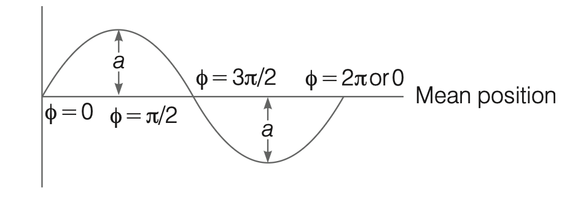
- Definition:
- Periodic motion along a straight path about a mean position under a restoring force proportional to displacement, directed toward the mean position.
- Formula:
- \( F = -k x \), where \( F \) is restoring force, \( k \) is force constant, \( x \) is displacement.
- Characteristics:
- Motion is linear, to-and-fro about equilibrium.
- Restoring force (or acceleration) proportional to displacement.
- Force/acceleration directed toward equilibrium.
- Examples:
- Spring-block system.
- Vehicle leaf springs.
- Angular SHM:
- e.g., hanging umbrella’s angular oscillations.
- Terms Related to SHM
- Time Period (\( T \)):
- Time for one complete oscillation; SI unit: second (s).
- Frequency (\( \nu \)):
- Number of oscillations per second: \( \nu = \frac{1}{T} \); SI unit: hertz (Hz) or s⁻¹.
- Amplitude (\( a \)):
- Maximum displacement from mean position; SI unit: metre (m).
- Phase (\( \phi \)):
- Describes position and direction of motion; e.g., same phase (\( \phi = 0^\circ \)) if particles cross mean position in same direction, out of phase (\( \phi = 180^\circ \)) if opposite.
- Simple Pendulum
- Definition:
- Heavy point mass suspended by a weightless, inextensible, flexible string from a rigid support.
- Time Period:
- \( T = 2\pi \sqrt{\frac{l}{g}} \), where \( l \) is effective length, \( g \) is acceleration due to gravity.
- Types:
- Second’s Pendulum:
- Time period = 2 s; length ~99.992 cm (~1 m on Earth).
- Conical Pendulum:
- Bob rotates in a horizontal circle.
- Compound Pendulum:
- Rigid body swinging in a vertical plane about an axis.
- Physical Pendulum:
- Rigid body of any shape oscillating about an axis.
- Spring Pendulum:
- Mass on a massless spring; time period: \( T = 2\pi \sqrt{\frac{m}{k}} \), where \( k \) is spring constant.
- Independent of \( g \).
- Phenomena:
- On hills/mines:
- \( g \) decreases, \( T \) increases, clock slows.
- In accelerating lift (up):
- \( g_{\text{eff}} \) increases, \( T \) decreases.
- In falling lift (free fall):
- \( g_{\text{eff}} = 0 \), \( T \to \infty \).
- Temperature rise:
- Length increases, \( T \) increases, clock slows.
- Winter:
- Length contracts, \( T \) decreases, clock speeds up.
- Moon:
- \( g_{\text{moon}} = \frac{g_{\text{earth}}}{6} \), \( T \) increases, clock slows.
- Free Oscillations
- Definition:
- Oscillations at natural frequency without external periodic force.
- Examples:
- Simple pendulum bob displaced and released.
- Tuning fork prongs after striking (frequency depends on length, thickness, elasticity).
- Sonometer wire plucked (frequency depends on length, density, tension).
- Bridges, buildings, ships, machine parts oscillate at natural frequencies.
- Forced Oscillations
- Definition:
- Oscillations driven by an external periodic force at a frequency different from the natural frequency.
- Examples:
- Pendulum bob oscillated by hand.
- Stringed instruments (e.g., sitar, violin) with sound board amplifying vibrations.
- Tuning fork on a table (table undergoes forced oscillations, amplifying sound).
- Damped Harmonic Motion
-
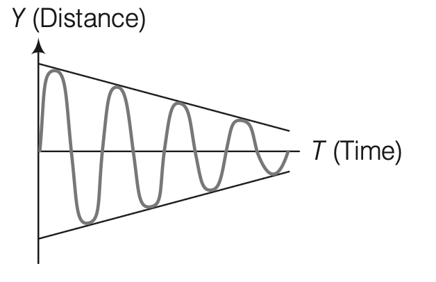
- Definition:
- Oscillations where amplitude decreases over time due to damping forces (e.g., friction), eventually stopping.
- All practical oscillations are damped.
- Resonance
- Definition:
- Increased amplitude when external force frequency matches an integral multiple of the body’s natural frequency.
- Resonant frequency: Frequency at which resonance occurs.
- Applications:
- Found in mechanics, sound, electromagnetic waves, AC circuits.
- Phenomena:
- Soldiers break step on suspension bridges to avoid resonance-induced collapse.
- Machine frequency matching house’s natural frequency may cause structural failure.
- Humming in an empty glass due to atmospheric vibrations matching air column frequency.
- Radio tuning uses resonance to match antenna frequency to station frequency.
- Heat, Temperature, and Thermodynamics
- Heat
- Definition:
- Form of energy producing warmth sensation; causes thermal condition changes.
- Flows from higher to lower temperature body when in contact.
- Units:
- SI:
- joule (J); practical: calorie (cal); 1 cal = 4.18 J.
- 1 cal:
- Heat to raise 1 g of water by 1°C.
- Temperature
- Definition:
- Measure of hotness/coldness; determines heat flow direction between bodies.
- Example:
- Hot spoon in cool water: Heat flows from spoon to water.
- Measurement of Temperature
- Thermometer:
- Device measuring temperature via expansion/contraction (e.g., mercury-in-glass).
- Uses two fixed points:
- Lower Fixed Point (LFP, ice freezing point), Upper Fixed Point (UFP, water boiling point at 76 cm Hg).
- Phenomena:
- Normal human body temperature:
- 98.6°F (37°C).
- Lab max temperature:
- ~10⁸ K.
- Cryogenics:
- Near 0 K; Pyrometry: Very high temperatures.
- Temperature Scales
- Types:
- Celsius (°C):
- Ice point 0°C, steam point 100°C, 100 equal divisions.
- Fahrenheit (°F):
- Ice point 32°F, steam point 212°F, 180 equal divisions.
- Kelvin (K):
- Ice point 273 K, steam point 373 K, 100 equal divisions.
- Reaumur (°R):
- Ice point 0°R, steam point 80°R, 80 equal divisions.
- Rankine (°Ra):
- Ice point 460°Ra, steam point 672°Ra, 212 equal divisions.
- Relations:
- \( \frac{C}{5} = \frac{F - 32}{9} = \frac{K - 273}{5} = \frac{R}{4} = \frac{Ra - 460}{9} \).
- Key Points:
- -40°C = -40°F; 574.25°F = 574.25 K; -25.6°F = -25.6°R; 0°C = 0°R.
- Alcohol thermometers expand more than mercury.
- Table of Temperatures:
-
| Temperature | Celsius (°C) | Fahrenheit (°F) | Kelvin (K) |
|---|
| Freezing of water | 0 | 32 | 273 |
| Room temperature | 27 | 80.6 | 300 |
| Human body | 37 | 98.6 | 310 |
| Boiling point of water | 100 | 212 | 373 |
- Thermometers:
- Clinical Thermometer:
- Mercury-in-glass, measures 96°F–110°F (35°C–42°C).
- Constriction prevents mercury backflow after removal from mouth.
- Not sterilized in hot water (risks glass breakage).
- Electronic Thermometer:
- Uses thermistor (resistance changes with temperature); displays digitally.
- Humidity
- Definition:
- Water vapor in atmosphere, concentrated in lowest 10 km.
- Absolute Humidity:
- Water vapor mass per unit volume (g/m³).
- Relative Humidity:
- Ratio of actual water vapor to amount needed for saturation at same temperature.
- Key Points:
- Saturated air:
- Moisture content equals humidity capacity.
- Humidity capacity increases with temperature.
- Phenomena:
- Water droplets on cold glass:
- Air vaporizes upon contact.
- Clothes dry faster in winter (lower relative humidity) than rainy season (higher humidity).
- July (hot) vs. January (cold):
- Sun’s rays angle and daylight duration affect temperature.
- Thermal Expansion
- Definition:
- Increase in dimensions (length, area, volume) due to temperature rise.
- Solids:
- Linear Expansion:
- Increase in length; coefficient: \( \alpha = \frac{\Delta L}{L \cdot \Delta T} \).
- Unit:
- °C⁻¹ or K⁻¹.
- Superficial Expansion:
- Increase in area; coefficient: \( \beta = \frac{\Delta A}{A \cdot \Delta T} \).
- Unit:
- °C⁻¹ or K⁻¹.
- Volume Expansion:
- Increase in volume; coefficient: \( \gamma = \frac{\Delta V}{V \cdot \Delta T} \).
- Unit:
- °C⁻¹ or K⁻¹.
- Phenomena:
- Pendulum clocks slow in summer (longer pendulum) and speed up in winter.
- Liquids:
- Apparent Expansion:
- Volume increase ignoring vessel expansion; coefficient: \( \gamma_a = \frac{\Delta V_{\text{apparent}}}{V \cdot \Delta T} \).
- Real Expansion:
- Actual volume increase; coefficient: \( \gamma_r = \frac{\Delta V_{\text{real}}}{V \cdot \Delta T} \).
- Relation:
- \( \gamma_r = \gamma_a + \gamma_g \), where \( \gamma_g \) is vessel’s volume expansion coefficient.
- Gases:
- Volume expansion depends on temperature, unlike solids/liquids.
- Anomalous Expansion of Water:
- Volume decreases from 0°C to 4°C, increases above 4°C; max density at 4°C.
- Enables aquatic life survival under frozen lakes (4°C water at bottom).
- Specific Heat
- Definition:
- Heat to raise 1 kg of substance by 1°C:
- \( s = \frac{Q}{m \cdot \Delta t} \).
- SI unit:
- J/kg·°C; CGS: cal/g·°C.
- Water at 15°C:
- 4200 J/kg·°C (high compared to most substances).
- Heat Capacity (Thermal Capacity):
- Heat to raise substance’s temperature by 1°C:
- \( \text{Heat Capacity} = m \cdot s \).
- Unit:
- J/K or cal/°C.
- Molar Specific Heat:
- Heat to raise 1 mole of gas by 1°C.
- At constant volume (\( C_V \)):
- Heat when volume is constant.
- At constant pressure (\( C_p \)):
- Heat when pressure is constant.
- Relation:
- \( C_p - C_V = R \), where \( R \approx 1.99 \, \text{cal/mol·K} \) (Mayer’s formula).
- Ratio:
- \( \gamma = \frac{C_p}{C_V} \).
- Phenomena:
- Water in car radiators: High specific heat absorbs engine heat effectively.
- Water Equivalent
- Definition:
- Mass of water absorbing/releasing same heat as body:
- \( w = m \cdot s \).
- Unit:
- g.
- Latent Heat
- Definition:
- Heat to change state of mass \( m \) at constant temperature:
- \( Q = m L \).
- Unit:
- cal/g or J/kg.
- Types:
- Latent Heat of Fusion:
- Heat to convert 1 g solid to liquid; ice:
- 80 cal/g.
- Latent Heat of Vaporization:
- Heat to convert 1 g liquid to vapor; water:
- 536 cal/g.
- Principle of Calorimetry
- Statement:
- Heat lost by hotter substance = heat gained by colder substance (conservation of energy).
- Uses calorimeter (copper vessel with stirrer and lid).
- Transmission of Heat
- Modes:
- Conduction:
- Heat transfer in solids without particle movement.
- Example:
- Heating one end of a metal rod warms the other.
- Phenomena:
- Iron feels colder in winter, hotter in summer (good conductor) vs. wood (poor conductor).
- Woollen clothes trap air (poor conductor), keeping body warm.
- Underground water temperature stable due to Earth’s poor conductivity.
- Convection:
- Heat transfer in fluids via particle movement.
- Applications:
- Sea Breeze:
- Land heats faster than water, causing air currents.
- Trade Winds:
- Equatorial air rises, polar air moves toward equator, modified by Earth’s rotation.
- Ventilation:
- Warm air exits chimney, cold air enters room, sustaining fire.
- Radiation:
- Heat transfer without medium, via electromagnetic waves.
- Phenomena:
- Deserts:
- Sand’s low specific heat causes hot days, cold nights.
- Thermal Conductivity:
- Measures solid’s ability to conduct heat:
- \( K = \frac{Q \cdot \Delta t}{A \cdot (\Delta T / \Delta x)} \).
- Good conductors:
- Copper, silver; poor: wood, glass.
- Phenomena:
- Metallic handles feel colder (conduct heat from hand).
- New quilts warmer (trap air, poor conductor).
- Birds swell feathers in winter to trap insulating air.
- Sawdust poorer conductor than wood due to trapped air.
- Newton’s Law of Cooling
- Statement:
- Rate of cooling proportional to temperature difference between body and surroundings.
- Phenomena:
- Hot water cools faster from 100°C to 95°C than 20°C to 15°C.
- In refrigerator, hot water cools faster than tap water.
- Thermal Radiations
- Definition:
- Radiations causing warmth, in infrared spectrum.
- Emission depends on temperature and surface nature.
- Properties:
- Reflectance:
- Ratio of reflected to incident radiations.
- Absorptance:
- Ratio of absorbed to incident radiations.
- Transmittance: Ratio of transmitted to incident radiations.
- Black Body:
- Absorbs all incident radiations, emits full spectrum when heated.
- Example:
- Cavity with small hole (absorbs ~98% radiation).
- Kirchhoff’s Law
- Statement:
- At given temperature and wavelength, ratio of emissive power to absorptive power equals black body’s emissive power: \( \frac{e_\lambda}{a_\lambda} = E_\lambda \).
- Phenomena:
- Thermos flask’s silver surface:
- Poor absorber/emitter, keeps contents stable.
- Green glass glows red when heated (absorbs red, emits red per Kirchhoff’s law).
- Stefan’s Law
- Statement:
- Heat radiated per unit area per second:
- \( E \propto T^4 \), or \( E = \sigma T^4 \).
- Stefan’s constant:
- \( \sigma = 5.67 \times 10^{-8} \, \text{W/m}^2\text{·K}^4 \).
- Wien’s Displacement Law
- Statement:
- Product of maximum wavelength and temperature is constant:
- \( \lambda_m T = b \).
- Wien’s constant:
- \( b = 2.9 \times 10^{-3} \, \text{m·K} \).
- Used to compute Sun/stars’ temperatures.
- Thermodynamics
- Definition:
- Study of heat energy transformation to/from other energy forms.
- Laws:
- Zeroth Law:
- If \( T_A = T_C \) and \( T_B = T_C \), then \( T_A = T_B \) (thermal equilibrium).
- First Law:
- Heat supplied = internal energy change + work done: \( \Delta Q = \Delta U + \Delta W \).
- Based on energy conservation.
- Second Law:
- Kelvin-Planck:
- No engine can convert all heat to work in a cycle.
- Clausius:
- Heat cannot flow from colder to hotter body without external work.
- Applications:
- Air conditioning (Kelvin-Planck), refrigerators (Clausius).
- Processes:
- Cyclic:
- Initial and final states identical.
- Quasi-static:
- Infinitely slow, approximated by slow processes.
- Reversible:
- Changes reversible without residual effects; Irreversible: Not reversible.
- Isothermal:
- Constant temperature (e.g., boiling).
- Adiabatic:
- No heat exchange (e.g., tire burst, sound wave propagation).
- Isobaric:
- Constant pressure (e.g., steam formation).
- Isochoric:
- Constant volume (e.g., ideal gas heating).
- Heat Engine
- Definition:
- Converts heat to mechanical work; components: heat source, working substance (e.g., steam, fuel vapor), heat sink.
- Thermal Efficiency (\( \eta \)):
- \( \eta = \frac{\text{Net work done}}{\text{Heat absorbed}} \times 100 \).
- Formula:
- \( \eta = \left(1 - \frac{T_2}{T_1}\right) \times 100\% \), where \( T_1 \) is source temperature, \( T_2 \) is sink temperature.
- Always < 100%.
- Types:
- External Combustion:
- Fuel burns outside engine (e.g., steam engine).
- Internal Combustion:
- Fuel burns inside engine (e.g., petrol, diesel engines; four-stroke).
- Wave Motion and Sound
- Wave
- Definition:
- Disturbance traveling through a medium or vacuum due to periodic particle motion, transferring energy, pressure, etc.
- Types of Waves
- Mechanical Waves:
- Require a material medium for propagation.
- Electromagnetic Waves:
- Require no medium; e.g., light, X-rays, radio waves.
- Matter Waves:
- Associated with moving particles (e.g., electrons, protons).
- Types of Mechanical Waves
- Longitudinal Waves:
-
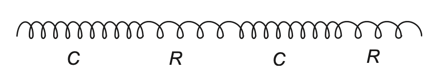
-
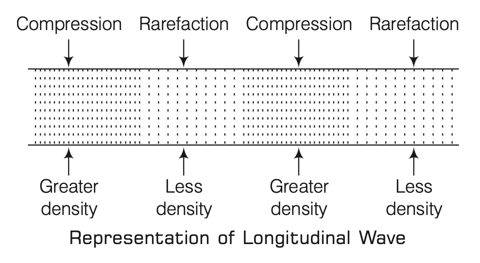
- Particles vibrate parallel to wave propagation.
- Can propagate in solids, liquids, gases; air waves are always longitudinal.
- Compressions (high density) and rarefactions (low density) form.
- Example:
- Waves along a compressed/extended spring (slinky).
- Transverse Waves:
-
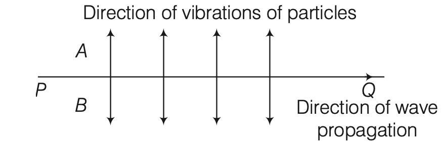
-
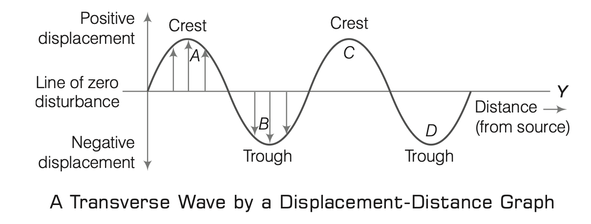
- Particles vibrate perpendicular to wave propagation.
- Propagate in solids and liquids only.
- Crests (above zero disturbance) and troughs (below zero disturbance) form.
- Examples:
- Water ripples, rope waves (fixed at one end, moved up/down).
- Terms Related to Waves
- Wavelength (\( \lambda \)):
- Distance between consecutive compressions or rarefactions; SI unit: metre (m).
- Frequency (\( \nu \)):
- Number of waves/oscillations per second; SI unit: hertz (Hz).
- \( \nu = \frac{1}{T} \); fixed across different substances.
- Time Period (\( T \)):
- Time for one complete wave; SI unit: second (s).
- \( T = \frac{1}{\nu} \).
- Amplitude (\( A \)):
- Maximum particle displacement from mean position; SI unit: metre (m).
- Speed (\( v \)):
- Distance traveled by wave per second; SI unit: m/s.
- Relation: \( v = \nu \lambda \).
- Sound Waves
- Definition:
- Longitudinal mechanical waves in a medium (usually air), forming compressions and rarefactions.
- Characteristics of Sound
- Loudness:
- Subjective; depends on sound energy reaching ear per second.
- Measured in decibels (dB); SI unit: watt/m².
- Larger amplitude = louder sound; smaller amplitude = softer sound.
- Pitch:
- Depends on frequency; higher frequency = higher pitch, lower frequency = lower pitch.
- Quality (Timbre):
- Differentiates sounds of same intensity/frequency.
- Tone:
- Single frequency; Note: Mixture of frequencies (pleasant); Noise: Unpleasant.
- Intensity:
- Sound energy per unit area per second; SI unit: watt/m².
- Proportional to amplitude², medium density, frequency², and wave speed.
- Phenomena:
- Women’s voices: Higher pitch than men’s (higher frequency).
- Mosquito hum:
- High pitch, low intensity; lion roar: Low pitch, high intensity.
- Musical instruments/singers distinguished by timbre.
- Speed of Sound
- Varies by medium; depends on temperature.
- Examples at 25°C:
- Solids:
- Aluminium (6420 m/s), Steel (5960 m/s), Glass (3980 m/s).
- Liquids:
- Sea water (1531 m/s), Distilled water (1498 m/s).
- Gases:
- Air (346 m/s), Helium (965 m/s), Hydrogen (1284 m/s).
- Effects of Physical Parameters:
- Temperature:
- \( v \propto \sqrt{T} \); increases ~0.61 m/s per °C.
- Pressure:
- No effect if temperature constant.
- Humidity:
- Higher in humid air vs. dry air.
- Wind:
- Increases/decreases speed if blowing with/against wave propagation.
- Phenomena:
- Sound requires medium; cannot propagate in vacuum (e.g., moon, outer space).
- Lightning seen before thunder due to slower sound speed vs. light.
- Sonic Boom
- Occurs when object exceeds sound speed (supersonic).
- Produces shock waves with high energy, causing loud noise.
- Examples: Supersonic aircraft, bullets; can shatter glass, damage buildings.
- Speed of Longitudinal Waves in Gases
- Newton’s Formula:
- \( v = \sqrt{\frac{B}{d}} \), where \( B \) is bulk modulus, \( d \) is density.
- Assumes isothermal conditions; \( B = p \) (pressure).
- \( v = \sqrt{\frac{p}{d}} \).
- Laplace’s Correction:
- Changes are adiabatic, not isothermal; \( B = \gamma p \), where \( \gamma = \frac{C_p}{C_V} \).
- Corrected formula: \( v = \sqrt{\frac{\gamma p}{d}} \).
- Reflection of Sound
- Sound bounces off hard surfaces; no smooth/shiny surface needed.
- Rigid wall:
- No change in wave nature (compression stays compression).
- Open pipe end:
- Compression becomes rarefaction, and vice versa.
- Echo:
- Reflected sound heard after original; requires 0.1 s delay.
- Minimum distance:
- ~17.2 m (varies with temperature).
- Multiple reflections cause rolling thunder, used in sea depth measurement, aircraft altitude.
- Reverberation:
- Persistence of sound due to repeated reflections.
- Short reverberation boosts music; excessive causes distortion.
- Heavy curtains reduce reverberation by absorbing sound.
- Phenomena:
- Curved ceilings in halls ensure sound reaches all corners.
- Uses of Multiple Reflection
- Megaphone/Horn:
- Amplifies voice via successive reflections in cone-shaped tube.
- Stethoscope:
- Heart/lung sounds reach ears via multiple reflections in tube.
- Sound Board:
- Concave board behind stage spreads sound evenly in halls.
- Refraction of Sound
- Occurs when sound moves between media, deviating due to different speeds.
- Phenomena:
- Warm day:
- Sound bends away from ground (faster near ground).
- Cold day/night:
- Sound bends toward ground (faster aloft), heard over longer distances.
- Range of Hearing
- Audible Range:
- 20 Hz to 20,000 Hz for humans.
- Children/dogs:
- Up to 25,000 Hz; older people lose high-frequency sensitivity.
- Infrasound (< 20 Hz):
- Produced by earthquakes, whales, elephants (~5 Hz).
- Animals detect infrasound before earthquakes, causing disturbance.
- Ultrasound (>20,000 Hz):
- Heard by dogs (~50,000 Hz), bats (~120 kHz), dolphins, etc.
- Produced by Galton Whistle, piezoelectric crystals (quartz, Rochelle salt).
- Hearing Aid
- Battery-operated device for hearing loss; converts sound to electrical signals, amplifies, and reconverts to sound.
- Applications of Ultrasound
- Cleaning:
- High-frequency waves dislodge dust/grease in hard-to-reach parts.
- Medical:
- Ultrasonography:
- Images internal organs (liver, kidneys, fetus) by reflecting waves.
- Echocardiography:
- Scans heart; breaks kidney stones into grains.
- Navigation:
- SONAR (Sound Navigation and Ranging): Measures sea depth, locates submarines, fish, shipwrecks using ultrasound.
- Other:
- Detects icebergs, used in industry.
- Phenomena:
- Bats use echolocation (ultrasonic squeaks) to locate prey/obstacles in dark.
- Superposition of Waves
- Occurs when multiple waves meet at a point.
- Principle:
- Resultant displacement is vector sum of individual displacements; waves do not affect each other’s motion.
- Phenomena:
- Standing waves, beats, interference.
- Standing (Stationary) Waves
- Formed by superposition of two identical waves traveling in opposite directions.
- Nodes:
- Points of zero amplitude; Antinodes: Points of maximum amplitude.
- Characteristics:
- Distance between consecutive nodes/antinodes:
- \( \lambda/2 \).
- Distance between node and antinode:
- \( \lambda/4 \).
- Particles in one segment vibrate in same phase, opposite to adjacent segment.
- No energy transfer across nodes; partially standing if amplitudes unequal.
- In Strings:
- Formed by reflections in fixed-end string of length \( L \).
- Fundamental frequency (first harmonic):
-
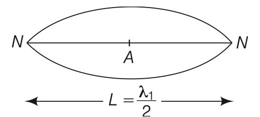
- \( \nu_1 = \frac{v}{2L} = \frac{1}{2L} \sqrt{\frac{T}{m}} \).
- Second harmonic (first overtone):
-
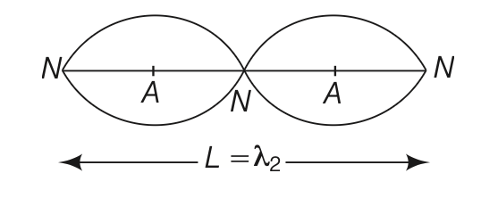
- \( \nu_2 = 2\nu_1 \).
- Third harmonic (second overtone):
-
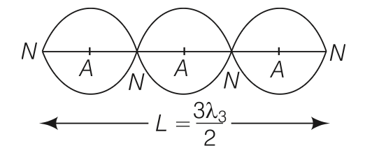
- \( \nu_3 = 3\nu_1 \).
- In Organ Pipes:
- Closed Organ Pipe (one end closed):
- Node at closed end, antinode at open end.
- Fundamental:
- \( \nu_1 = \frac{v}{4L} \); first overtone: \( \nu_2 = 3\nu_1 \); second overtone: \( \nu_3 = 5\nu_1 \).
- Only odd harmonics:
- \( \nu_1 : \nu_2 : \nu_3 = 1 : 3 : 5 \).
- Open Organ Pipe (both ends open):
- Antinodes at both ends.
- Fundamental:
- \( \nu_1 = \frac{v}{2L} \); first overtone: \( \nu_2 = 2\nu_1 \); second overtone: \( \nu_3 = 3\nu_1 \).
- Even and odd harmonics:
- \( \nu_1 : \nu_2 : \nu_3 = 1 : 2 : 3 \).
- Noise and Musical Sound
- Noise:
- Unpleasant sound.
- Musical Sound:
- Pleasant, e.g., harmonium.
- Musical Scale:
- Diatonic Scale:
- ‘Sargam’ in Indian system; seven notes, lowest (key note) to highest (octave).
- Tempered Scale:
- 13 notes, frequency ratio of successive notes: \( \sqrt[12]{2} \).
- Beats
- Intensity variation when two waves of equal amplitude and near-equal frequencies superpose.
- Beat frequency:
- Difference in frequencies of two sources.
- Doppler’s Effect in Sound
- Change in observed frequency due to relative motion between source and observer.
- Cases:
- Source moving, observer stationary.
- Observer moving, source stationary.
- Both moving.
- Phenomena:
- Train whistle pitch increases as it approaches, decreases as it recedes.
- Car horn pitch higher when approaching, lower when moving away.
- Used in astrophysics (planet/star velocities), aircraft guidance, heart/blood flow studies.
- Interference in Sound
- Resultant intensity from two same-frequency waves differs from sum of individual intensities.
- Diffraction of Sound
- Waves bend around obstacles or spread through small openings.
- Phenomena:
- Sound heard in another room due to diffraction through doors/windows (~1 m wavelength).
- Electromagnetic Waves
- Propagate without medium; include visible light, X-rays, gamma rays, radio waves, microwaves, ultraviolet, infrared.
- Production:
- By accelerated charges, changing AC currents, or fast electrons stopped by heavy metal targets (X-rays).
- Characteristics:
- Speed in free space: \( 3 \times 10^8 \, \text{m/s} \).
- Uncharged; not deflected by electric/magnetic fields.
- Carry energy, momentum; exert radiation pressure.
- Electromagnetic Spectrum:
- Ordered by wavelength/frequency.
-
| Waves | Frequency (Hz) | Discoverer | Source | Uses |
|---|
| Gamma rays | 10²¹–10¹⁹ | Becquerel, Curie | Nuclear changes | Kill microbes, treat tumors, nuclear reactions |
| X-rays | 10¹⁹–10¹⁶ | Roentgen | Energetic electrons on metal | Detect fractures, faults, explosives |
| Ultraviolet | 10¹⁶–7.5×10¹⁴ | Ritter | Sunlight, arc lamps | Kill bacteria, sterilize instruments |
| Visible light | 7.5×10¹⁴–3.7×10¹⁴ | Newton | Sunlight, hot bodies | Bulbs, sodium lamps |
| Infrared | 3.7×10¹⁴–10¹¹ | Herschel | Thoriated filament | Satellites, solar cells, therapy |
| Microwaves | 10¹¹–10⁷ | Hertz | Electric circuits | Radar, cooking, speed measurement |
| Radio waves | <10⁷ | Marconi | Electric circuits | TV, transmitters |
- Fluorescence
- Emission of lower-frequency light (e.g., visible) when illuminated by high-frequency light (e.g., UV).
- Occurs only during illumination.
- Applications:
- Detects UV rays, used in fluorescent paints (e.g., road signs), X-ray fluorescence on barium platocyanide.
- Phosphorescence
- Emission continues after light source removal.
- Applications:
- Watch hands, switch boards, sign boards absorb sunlight, glow at night.
- Earthquake Waves
- Vibrations from Earth’s surface adjustments or fault movements.
- Measured by seismograph; magnitude on Richter scale.
- Focus: Source below surface; Epicentre: Surface point above focus.
- Phenomena:
- Increased radon gas before earthquakes; animals detect infrasound, causing disturbance.
- Optics
- Definition:
- Branch of science studying light, its properties, and nature.
- Light:
- Form of energy enabling vision; reflected light from objects reaches eyes.
- Nature:
- Electromagnetic waves; speed in vacuum/air: \( 3 \times 10^8 \, \text{m/s} \).
- Types of Optics
- Ray Optics:
- Deals with linear propagation (reflection, refraction, dispersion).
- Wave Optics:
- Deals with wave nature (polarization, diffraction, interference).
- Properties of Light
- Travels in straight lines.
- Ray:
- Line in direction of propagation.
- Beam:
- Bundle of adjacent rays.
- Speed varies by medium; wavelength changes, frequency remains constant.
- Speed in Different Media:
-
| Medium | Speed (m/s) |
|---|
| Vacuum | 3 × 10⁸ |
| Water | 2.25 × 10⁸ |
| Turpentine Oil | 2.04 × 10⁸ |
| Glass | 2 × 10⁸ |
| Rock Salt | 1.96 × 10⁸ |
| Nylon | 1.96 × 10⁸ |
- Sources:
- Natural:
- Sun, stars.
- Artificial:
- Bulbs, candles.
- Shadow
- Dark region behind opaque object blocking light.
- Types:
- Umbra:
- Shadow from point source.
- Penumbra:
- Shadow from extended source.
- Eclipse
-
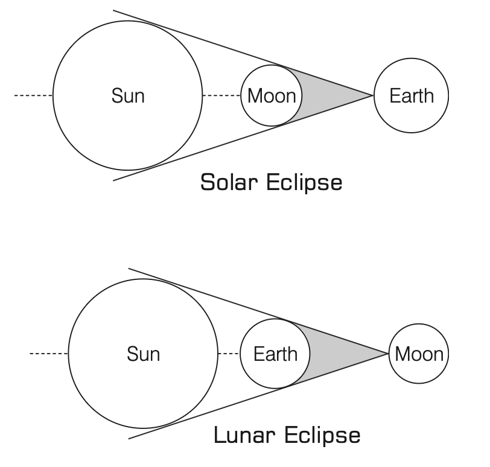
- Solar Eclipse:
- Moon between Sun and Earth; shadow on Earth; full/partial; occurs on new moon.
- Lunar Eclipse:
- Earth between Sun and Moon; shadow on Moon; full/partial; occurs on full moon.
- Phenomena:
- Eclipses not monthly due to 5°–7° angle between Earth’s equatorial orbit and Moon’s axial axis.
- Reflection of Light
-
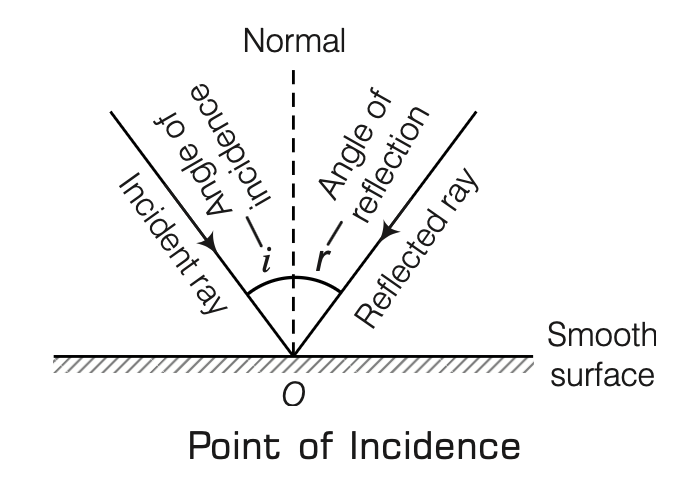
- Definition:
- Light rays bounce back in same medium on striking a smooth surface.
- Laws of Reflection:
- Incident ray, reflected ray, normal lie in same plane.
- Angle of incidence (\( i \)) equals angle of reflection (\( r \)).
- Phenomena:
- Silver:
- Best reflector.
- Laws apply to all reflecting surfaces.
- Mirrors
- Definition:
- Polished surface (e.g., glass) reflecting most incident light.
- Types:
- Plane Mirror:
- Flat reflecting surface.
- Image:
- Virtual, erect, same size, equidistant behind mirror.
- Properties:
- Linear magnification:
- 1.
- Minimum mirror size:
- Half observer’s height.
- Rotating mirror by angle \( \theta \):
- Reflected ray rotates by \( 2\theta \).
- Focal length:
- Infinity (power = 0).
- Object displacement by \( a \):
- Image displaces by \( a \).
- Multiple mirrors at angle \( \theta \):
- Images:
- \( n = \frac{360^\circ}{\theta} - 1 \) (even/symmetric).
- Images:
- \( n = \frac{360^\circ}{\theta} \) (odd/asymmetric).
- Spherical Mirror:
-
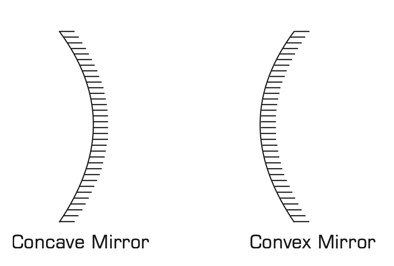
- Curved, part of hollow glass sphere.
- Types:
- Concave (Converging):
- Inward reflecting surface.
- Convex (Diverging):
- Outward reflecting surface.
- Terms:
-
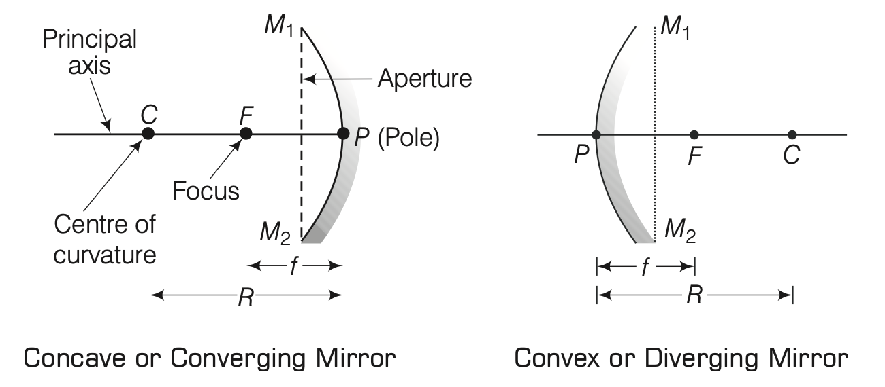
- Centre of Curvature (\( C \)):
- Centre of sphere.
- Radius of Curvature (\( R \)):
- Radius of sphere.
- Principal Axis:
- Line joining pole and centre of curvature.
- Pole (\( P \)):
- Central point of reflecting surface.
- Aperture:
- Diameter of reflecting surface.
- Focal Plane:
- Perpendicular to principal axis through focus.
- Focal Length (\( f \)):
- Distance from pole to focus; \( f = \frac{R}{2} \) (small aperture).
- Principal Focus (\( F \)):
- Point where parallel rays converge (concave) or appear to diverge (convex).
- Image Types:
- Real:
- Rays meet; inverted, on screen.
- Virtual:
- Rays appear to meet; erect.
- Phenomena:
- Half-covered mirror:
- Complete image, reduced intensity.
- Multiple images:
- From multiple reflections in glass.
- Objects visible when reflected light reaches eyes.
- Image Formation by Mirrors
- Concave Mirror:
-
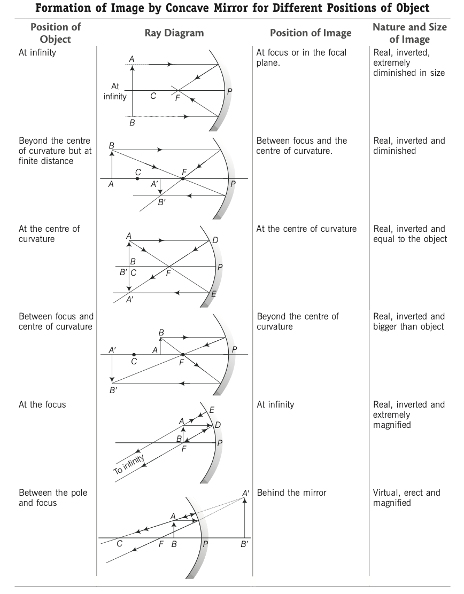
-
| Object Position | Image Position | Nature and Size |
|---|
| At infinity | At focus | Real, inverted, extremely diminished |
| Beyond \( C \) | Between \( F \) and \( C \) | Real, inverted, diminished |
| At \( C \) | At \( C \) | Real, inverted, same size |
| Between \( F \) and \( C \) | Beyond \( C \) | Real, inverted, magnified |
| At \( F \) | At infinity | Real, inverted, highly magnified |
| Between pole and \( F \) | Behind mirror | Virtual, erect, magnified |
- Convex Mirror:
-
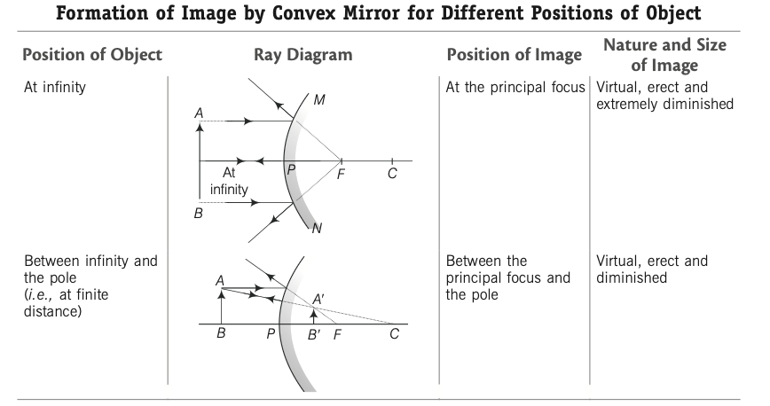
-
| Object Position | Image Position | Nature and Size |
|---|
| At infinity | At focus | Virtual, erect, extremely diminished |
| Finite distance | Between focus and pole | Virtual, erect, diminished |
- Uses of Mirrors
- Plane Mirrors:
- Looking glass (erect, virtual images).
- Periscopes (submarines, 45° mirrors).
- Blind turns on roads.
- Kaleidoscopes (colorful patterns).
- Concave Mirrors:
- Torches, searchlights, headlights (parallel beams).
- Shaving mirrors, dental mirrors (magnified images).
- Solar furnaces (concentrate sunlight).
- Convex Mirrors:
- Rear-view mirrors (erect, wide field).
- Shop security mirrors.
- Mirror Formula
- \( \frac{1}{v} + \frac{1}{u} = \frac{1}{f} \), where \( u \): object distance, \( v \): image distance, \( f \): focal length.
- Applies to all spherical mirrors.
- Linear Magnification
- \( m = \frac{I}{O} = \frac{v}{u} \), where \( I \): image height, \( O \): object height.
- \( m > 1 \): Enlarged; \( m < 1 \): Diminished.
- \( m \) positive: Erect (virtual); \( m \) negative: Inverted (real).
- Concave: \( m \) positive/negative; Convex: \( m \) positive only.
- Refraction of Light
-
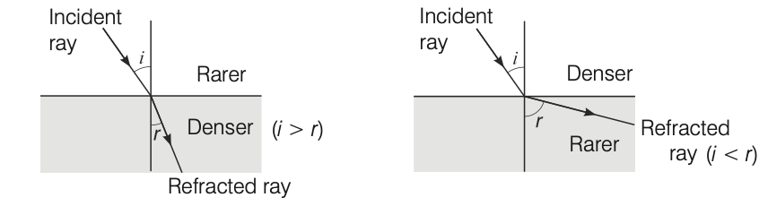
- Definition:
- Change in light’s path when passing between media.
- Behavior:
- Rarer to denser:
- Bends toward normal (\( i > r \)).
- Denser to rarer:
- Bends away from normal (\( i < r \)).
- Cause:
- Speed difference; slower in denser media, faster in rarer.
- Phenomena:
- Pond bottom appears raised.
- Letters raised through glass slab.
- Pencil in water appears broken.
- Lemon in water appears larger.
- Refractive Index
- Absolute:
- \( \mu = \frac{c}{v} \), where \( c \): speed in vacuum, \( v \): speed in medium.
- Relative:
- Ratio of refractive indices of two media.
- Laws of Refraction (Snell’s Law)
- Incident ray, refracted ray, normal lie in same plane.
- \( \frac{\sin i}{\sin r} = \mu_{12} \) (constant for two media).
- Critical Angle
-
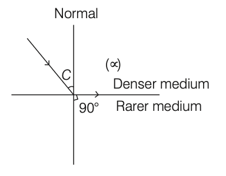
- Angle of incidence in denser medium where refracted angle in rarer medium is 90° (\( C \)).
- \( \mu = \frac{1}{\sin C} \).
- Depends on media and light color.
- Atmospheric Refraction
-
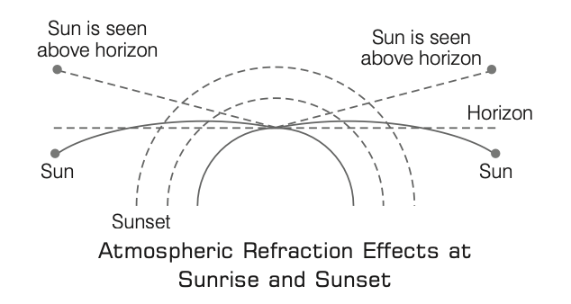
- Due to varying density layers in atmosphere.
- Phenomena:
- Twinkling of Stars:
- Varying refraction due to atmospheric density changes.
- Stars Appear Higher:
- Light bends toward normal in denser lower layers.
- Advance Sunrise/Delayed Sunset:
- Sun visible ~2 min before/after actual time due to refraction.
- Scattering of Light
-
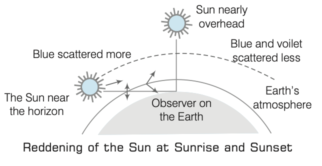
- Reflection from small particles in all directions.
- Color depends on particle size:
- Fine particles scatter blue; larger scatter red/white.
- Phenomena:
- Blue Sky:
- Small particles scatter shorter (blue) wavelengths more.
- Red Sunrise/Sunset:
- Longer path through atmosphere scatters blue, leaving red.
- White Noon Sun:
- Shorter path, less scattering.
- Total Internal Reflection (TIR)
- Light reflects back in denser medium when angle of incidence exceeds critical angle.
- Conditions:
- Denser to rarer medium.
- Angle of incidence > critical angle.
- Applications:
- Optical Fibre:
- Core (high \( \mu \)) surrounded by cladding (low \( \mu \)); light propagates via TIR.
- Uses:
- Telecom, medical lasers, decorative lamps, networking.
- Mirage:
- Illusion of water in deserts due to TIR in hot, less dense air near ground.
- Diamond:
- Brilliance from multiple TIR; small critical angle.
- Color of Objects
- Objects reflect specific colors, absorb others.
- Example:
- Red rose reflects red, absorbs others; appears black in green light.
- Colors
-
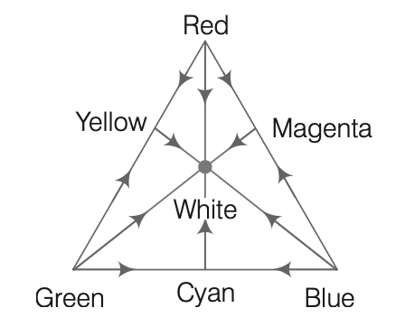
- Primary:
- Red, green, blue.
- Secondary:
- Yellow (red + green), magenta (red + blue), cyan (green + blue).
- Complementary:
- Produce white (e.g., red + cyan, green + magenta, blue + yellow).
- Mixed Pigments:
- Impure colors; e.g., blue + yellow paint yields green.
- Refraction by Spherical Lenses
- Lens:
- Transparent medium with one/both spherical surfaces.
- Types:
- Convex (Converging):
-
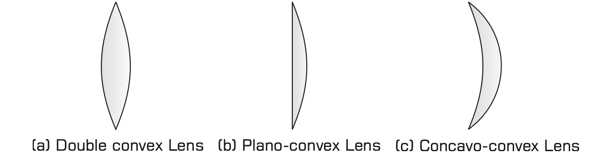
- Thicker at center.
- Double convex, plano-convex, concavo-convex.
- Concave (Diverging):
-
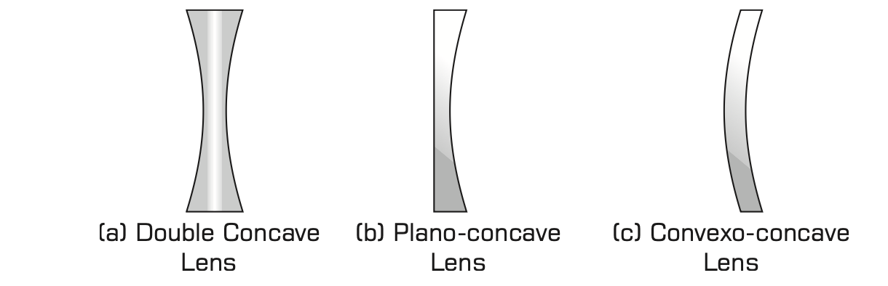
- Thinner at center.
- Double concave, plano-concave, convexo-concave.
- Terms:
-
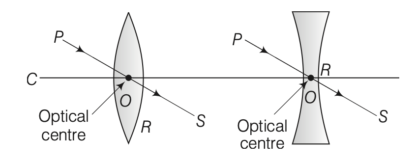
- Optical Centre:
- Point where rays pass without deviation.
- Centres of Curvature:
- Centres of imaginary spheres.
- Radii of Curvature:
- Radii of spheres.
- Principal Axis:
- Line joining centres of curvature through optical centre.
- Principal Foci:
- First:
- Rays from/to this point become parallel post-refraction.
- Second:
- Parallel rays converge (convex) or diverge from (concave).
- Focal Length:
- Distance from optical centre to focus.
- Aperture:
- Effective diameter of lens.
- Behavior in Liquid:
- If liquid \( \mu > \) lens \( \mu \):
- Focal length negative; convex acts as concave, concave as convex.
- If liquid \( \mu = \) lens \( \mu \):
- Focal length infinite; acts as plane glass, invisible.
- Image Formation by Lenses
- Convex Lens:
-
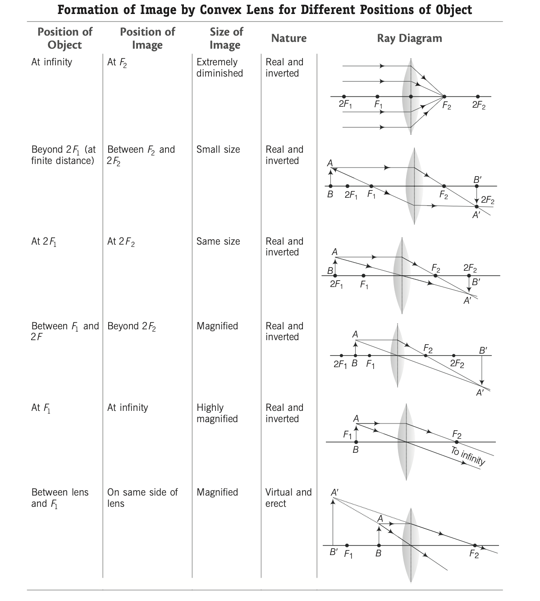
-
| Object Position | Image Position | Size | Nature |
|---|
| At infinity | At \( F_2 \) | Extremely diminished | Real, inverted |
| Beyond \( 2F_1 \) | Between \( F_2 \) and \( 2F_2 \) | Small | Real, inverted |
| At \( 2F_1 \) | At \( 2F_2 \) | Same size | Real, inverted |
| Between \( F_1 \) and \( 2F_1 \) | Beyond \( 2F_2 \) | Magnified | Real, inverted |
| At \( F_1 \) | At infinity | Highly magnified | Real, inverted |
| Between lens and \( F_1 \) | Same side | Magnified | Virtual, erect |
- Concave Lens:
-
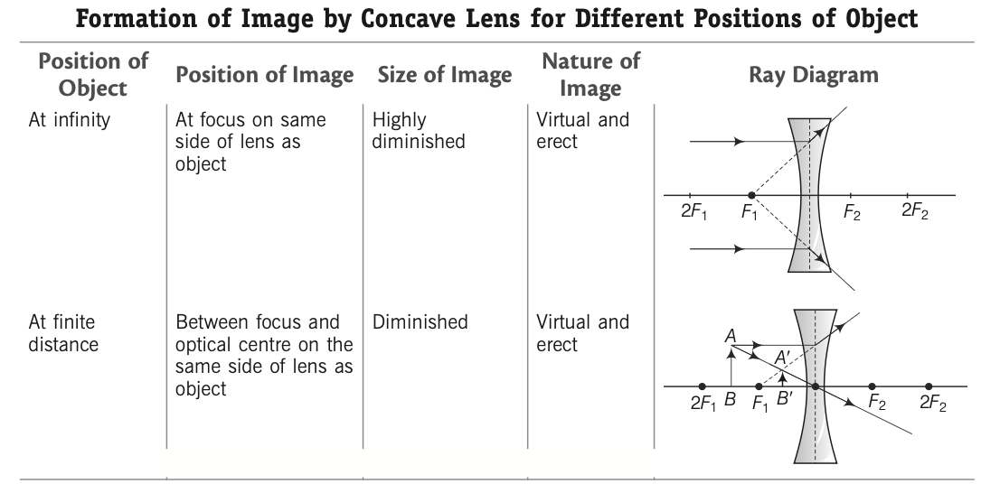
-
| Object Position | Image Position | Size | Nature |
|---|
| At infinity | At focus (same side) | Highly diminished | Virtual, erect |
| Finite distance | Between focus and optical centre (same side) | Diminished | Virtual, erect |
- Lens Formula
- \( \frac{1}{v} - \frac{1}{u} = \frac{1}{f} \).
- Applies to all spherical lenses.
- Linear Magnification for Lenses
- \( m = \frac{h_2}{h_1} = \frac{v}{u} \).
- Positive: Virtual image; Negative: Real image.
- Prism
- Transparent medium with two plane faces at an angle.
- Refracts light toward base.
- Dispersion of White Light
-
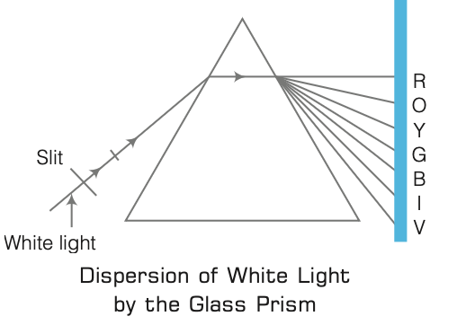
- Splitting into component colors (VIBGYOR) by prism.
- Cause:
- Different colors travel at different speeds; red (max wavelength, least deviation), violet (min wavelength, max deviation).
- Discovered by Newton.
- Rainbow
-
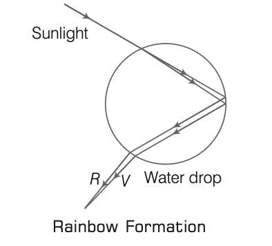
- Natural spectrum post-rain; sunlight dispersed by water droplets via refraction, TIR, and refraction.
- Red on top, violet at bottom; opposite Sun’s direction.
- Human Eye
-
- Parts:
- Cornea:
- Transparent front membrane.
- Crystalline Lens:
- Convex, flexible, protein-based.
- Iris:
- Controls pupil size.
- Pupil:
- Light entry hole.
- Ciliary Muscles:
- Adjust lens curvature.
- Retina:
- Light-sensitive; contains rods, cones.
- Optic Nerve:
- Transmits visual data to brain.
- Sclera:
- Protective outer layer.
- Blind Spot:
- No rods/cones where optic nerve exits.
- Aqueous Humour:
- Liquid between cornea and lens.
- Vitreous Humour:
- Liquid between lens and retina.
- Functions:
- Accommodation:
- Lens adjusts focal length for sharp images.
- Range of Vision:
- 25 cm to infinity (normal eye).
- Near Point:
- Closest distance for sharp focus (25 cm).
- Defects of Vision
- Myopia (Short-sightedness):
- Sees near, not far; corrected with concave lens.
- Hypermetropia (Long-sightedness):
- Sees far, not near; corrected with convex lens.
- Presbyopia:
- Age-related near vision loss; corrected with bifocal lenses.
- Astigmatism:
- Cannot focus horizontal/vertical lines; corrected with cylindrical lenses.
- Color Blindness:
- Cannot distinguish colors; no correction.
- Cataract:
- Opaque cornea membrane; corrected surgically.
- Optical Instruments
- Camera:
- Light-proof box with converging lens; real, inverted image on film.
- f-Number:
- \( \frac{\text{focal length}}{\text{diameter}} \).
- Brightness:
- \( \propto \frac{d^2}{f^2} \); Exposure time affects light on film.
- Microscope:
- Simple (Magnifying Glass):
-
- Single convex lens.
- Magnification:
- \( m = 1 + \frac{D}{f} \) (image at \( D \)); \( m = \frac{D}{f} \) (image at infinity).
- Compound:
-
- Objective and eyepiece lenses.
- Magnification:
- \( m = \frac{v_o}{u_o} \left(1 + \frac{D}{f_e}\right) \) (image at \( D \)); \( m = \frac{v_o}{u_o} \cdot \frac{D}{f_e} \) (image at infinity).
- Telescope (Astronomical):
-
- Objective and eyepiece lenses.
- Magnification:
- \( m = -\frac{f_o}{f_e} \left(1 + \frac{f_e}{D}\right) \) (image at \( D \)); \( m = -\frac{f_o}{f_e} \) (image at infinity).
- Length:
- \( L = f_o + f_e \).
- High magnification:
- Large \( f_o \), small \( f_e \).
- Resolving Power:
- Microscope:
- Reciprocal of minimum resolvable distance; depends on wavelength, refractive index, light cone angle.
- Telescope:
- Reciprocal of smallest angular separation; \( \text{RP} = \frac{D}{1.22 \lambda} \).
- Interference of Light
- Superposition of same-frequency waves with constant phase difference.
- Constructive:
- Maximum intensity; Destructive: Minimum intensity.
- Examples:
- Colors in oil on water, soap bubbles.
- Diffraction of Light
- Bending around obstacles or spreading through openings when aperture/obstacle size ~ wavelength.
- Applications:
- Blurred microscope images.
- Diffraction grating separates colors.
- Difference from Interference:
- Interference:
- Superposition of two coherent sources.
- Diffraction:
- Superposition from single source.
- Doppler’s Effect in Light
-
- Apparent frequency change due to relative motion between source and observer.
- Blue Shift:
- Source/observer approach; frequency increases, wavelength decreases.
- Red Shift:
- Source/observer recede; frequency decreases, wavelength increases.
- Uses:
- Measure star/galaxy speeds.
- Sun’s rotation speed (~2 km/s).
- Velocity of aircraft, rockets, submarines.
- Polarization
-
- Restricting light’s electric vectors to one direction; occurs in transverse waves.
- Plane-polarized light:
- Electric vectors in one direction via crystals (tourmaline, calcite).
- Planes:
- Vibration:
- Contains polarized light vibrations.
- Polarization:
- Perpendicular to vibration plane.
- Polaroids:
- Materials (e.g., quinine idosulphate crystals) polarizing light.
- Uses of Polaroids:
- Reduce glare (e.g., polarized sunglasses, car headlights).
- Microscope objectives for minute particle observation.
- Clear cloud photos by cutting scattered light.
- Holography, optical stress analysis, LCDs, CD players.
- Solar compass navigation in polar regions.
- Measure refractive index via Brewster’s law.
- Study crystal/molecule asymmetries via optical activity.
- Electrostatics
- Definition:
- Branch of physics studying charges at rest, forces, fields, and potentials.
- Electric Charge
- Property enabling objects to exert/respond to electrical forces.
- Scalar quantity; SI unit: coulomb (C).
- Types:
- Positive:
- Gained by losing electrons (e.g., proton: \( +e \)).
- Negative:
- Gained by acquiring electrons (e.g., electron: \( -e \)).
- \( e = 1.6 \times 10^{-19} \, \text{C} \).
- Charging Methods:
- Friction:
- Electron transfer (e.g., ebonite rod rubbed with flannel: rod negative, flannel positive).
- Induction:
- Charge rearrangement without contact.
- Properties:
- Like charges repel; unlike charges attract.
- Charges reside on conductor surfaces.
- Safe inside car during lightning: Charges on outer surface flow to ground.
- Charge invariant with velocity.
- Attracts lighter neutral bodies.
- Additive: Total charge is algebraic sum (e.g., \( +2q + 4q - 3q = +2q \)).
- Conservation: Net charge of isolated system constant.
- Quantization: Charge in multiples of \( e \).
- Phenomena:
- Neutron: Chargeless.
- Charging by Induction
- Imparts opposite charge without contact; charging body retains charge.
- Coulomb’s Law
- Force between two point charges:
- \( F \propto \frac{q_1 q_2}{r^2} \).
- \( F = \frac{1}{4 \pi \epsilon_0} \frac{q_1 q_2}{r^2} = k \frac{q_1 q_2}{r^2} \).
- \( k \): Dielectric constant; \( \epsilon_0 = 8.85 \times 10^{-12} \, \text{C}^2/\text{N·m}^2 \) (permittivity of free space).
- In medium: \( \epsilon_0 \to \epsilon_0 \epsilon_r \), where \( \epsilon_r \): relative permittivity.
- Electric Field
- Region where a charge experiences force.
- Intensity:
- \( E = \frac{F}{q_0} \); SI units: N/C or V/m.
- Hollow Conductor:
- Field inside:
- Zero; charges on outer surface.
- Acts as electrostatic shield (e.g., safe inside car during lightning).
- Phenomena:
- Shark POD:
- Electrodes create field to repel sharks.
- Properties of Electric Field
- Varies with position in 3D space.
- Positive charge:
- Field radially outward.
- Negative charge:
- Field radially inward.
- Electric Field Lines
- Curves where tangent indicates field direction.
- Properties:
- Start at positive, end at negative charges (or infinity for single charge).
- Tangent shows field direction.
- Never intersect (single field direction per point).
- Perpendicular to charged conductor surface.
- Contract lengthwise for attraction between unlike charges.
- Phenomena:
- Xerox Machine: Toner sticks via electrostatic forces.
- Electric Dipole
-
- Two equal, opposite charges (\( +q, -q \)) separated by small distance.
- Examples:
- HCl, H₂O molecules.
- Dipole Moment:
- \( p = q \cdot 2a \), where \( 2a \): distance between charges.
- Potential Energy:
- Depends on dipole orientation in electric field.
- Electric Flux
-
- Number of field lines crossing an area.
- \( \Delta \phi_E = E \Delta S \cos \theta \), where \( \Delta S \): area vector.
- SI unit:
- \( \text{N·m}^2/\text{C} \).
- Cases:
- \( 0^\circ < \theta < 90^\circ \):
- Positive flux.
- \( \theta = 90^\circ \):
- Zero flux.
- \( 90^\circ < \theta < 180^\circ \):
- Negative flux.
- Gauss’s Theorem
- Flux over closed surface:
- \( \phi_E = \frac{\Sigma q}{\epsilon_0} \).
- If \( \Sigma q = 0 \), flux is zero.
- Cube with charge \( q \) at center:
- Total flux:
- \( \frac{q}{\epsilon_0} \).
- Flux per face:
- \( \frac{q}{6 \epsilon_0} \).
- Gaussian Surface:
- Uniform field intensity on surface.
- Electric Potential
- Work done per unit charge moving from infinity to a point:
- \( V = \frac{W}{q_0} \).
- SI unit:
- Volt (J/C); scalar.
- Determines charge flow direction (high to low potential).
- Potential Difference
- Work per unit charge between two points:
- \( V_A - V_B = \frac{W}{q_0} \).
- SI unit:
- Volt.
- Properties of Electric Potential
- 1 volt:
- 1 J work to move 1 C from infinity without acceleration.
- State-dependent (conservative forces).
- No work over closed path.
- Can be positive, negative, or zero.
- Potential Inside Hollow Conductor
- Constant inside; equals surface potential (zero field inside).
- Equipotential Surface
- Surface with equal potential; zero potential difference between points.
- Properties:
- Normal to electric field.
- No work to move charge on surface.
- Uniform field:
- Planes perpendicular to field (e.g., yz-plane for x-directed field).
- Point charge:
- Spherical surfaces.
- Line charge:
- Cylindrical surfaces.
- Electrostatic Potential Energy
- Work to assemble charges from infinity.
- Two charges:
- \( U = \frac{1}{4 \pi \epsilon_0} \frac{q_1 q_2}{r} \).
- Positive \( U \):
- Like charges (repel); increases when closer.
- Negative \( U \):
- Unlike charges (attract); decreases when closer.
- Conductors
- Allow easy charge flow (e.g., metals; silver best).
- Properties:
- Zero internal field.
- No excess internal charge.
- Field normal to surface.
- Constant potential throughout and on surface.
- Surface charge density varies.
- Electrostatic Shielding
- Protects from external fields using hollow conductors (zero internal field).
- Insulators (Dielectrics)
- Low/no conductivity; ideal dielectric: zero conductivity.
- Types:
- Polar:
- Non-coincident positive/negative charge centers (e.g., H₂O, CO₂, NH₃).
- Non-polar:
- Coincident charge centers (e.g., N₂, O₂, benzene, methane).
- Dielectric Constant
- \( K = \frac{E_0}{E} \), where \( E_0 \): applied field, \( E \): reduced field.
- \( K > 1 \); vacuum: \( K = 1 \).
- Dielectric Strength
- Maximum field before breakdown; air: \( 3 \times 10^6 \, \text{V/m} \).
- Polarization
- Alignment of atomic dipoles in electric field, creating net dipole moment and opposite charges on faces.
- Lightning Conductor
- Metal rod on tall buildings; conducts cloud charge to ground, preventing damage.
- Capacitance
- \( C = \frac{q}{V} \); SI unit: farad (F).
- Practical units:
- \( 1 \, \mu\text{F} = 10^{-6} \, \text{F} \), \( 1 \, \text{pF} = 10^{-12} \, \text{F} \).
- Capacitor
- Stores large charge without size change; used in motors, circuits.
- Properties:
- Depends on surface area, dielectric constant, nearby capacitors.
- Independent of charge, potential, shape, material.
- Leakage:
- High capacitance:
- Low voltage for given charge, reducing leakage.
- High voltage:
- Ionizes air, neutralizes charge, causing leakage.
- Current Electricity and Its Effects
- Electric Current
- Definition:
- Flow of electric charge through a conductor.
- Rate of charge flow: \( I = \frac{Q}{t} = \frac{ne}{t} \), where \( n \): number of electrons, \( e = 1.6 \times 10^{-19} \, \text{C} \).
- SI Unit:
- Ampere (A); scalar quantity.
- \( 1 \, \text{A} = \frac{1 \, \text{C}}{1 \, \text{s}} \).
- Smaller units:
- \( 1 \, \text{mA} = 10^{-3} \, \text{A} \), \( 1 \, \mu\text{A} = 10^{-6} \, \text{A} \).
- Direction:
- Positive charge flow (opposite to electron flow).
- Example:
- Torch bulb glows due to charge flow from cells.
- Difference from Electrostatics:
- Current electricity:
- Moving charges.
- Electrostatics:
- Stationary charges.
- Types of Electric Current
- Direct Current (DC):
- Constant magnitude and direction.
- Sources:
- Cells, batteries, DC dynamo.
- Alternating Current (AC):
- Magnitude varies continuously; direction changes periodically.
- Source:
- AC dynamo.
- Current Density
- Current per unit cross-sectional area (normal to current):
- \( J = \frac{I}{A} \).
- SI Unit:
- \( \text{A/m}^2 \); vector quantity.
- Electric Potential and Potential Difference
- Electric Potential:
- Work done per unit charge moving from infinity to a point: \( V = \frac{W}{Q} \).
- Potential Difference:
- Work done per unit charge between two points:
- \( \Delta V = V_B - V_A = \frac{W}{Q} \).
- SI Unit:
- Volt (V); scalar quantity.
- \( 1 \, \text{V} = \frac{1 \, \text{J}}{1 \, \text{C}} \).
- Smaller units:
- \( 1 \, \text{mV} = 10^{-3} \, \text{V} \), \( 1 \, \mu\text{V} = 10^{-6} \, \text{V} \).
- Larger units:
- \( 1 \, \text{kV} = 10^3 \, \text{V} \), \( 1 \, \text{MV} = 10^6 \, \text{V} \).
- Measurement:
- Voltmeter:
- High-resistance device, connected in parallel.
- Galvanometer to Voltmeter:
- Add high resistance in series.
- Phenomena:
- Electrons flow from high density (negative terminal) to low density (positive terminal); current flows opposite.
- Ohm’s Law
- Current (\( I \)) proportional to potential difference (\( V \)) at constant conditions (e.g., temperature): \( V = IR \).
- \( R \):
- Resistance (constant of proportionality).
- Ohmic Conductors:
- Obey Ohm’s law.
- Non-Ohmic Conductors:
- Do not obey Ohm’s law.
- Phenomena:
- Car lights dim when starter operates: Starter draws high current, reducing voltage across bulb.
- Resistance
- Property opposing charge flow due to electron collisions.
- \( R = \frac{V}{I} \); SI Unit: Ohm (\( \Omega \)); scalar quantity.
- \( 1 \, \Omega = \frac{1 \, \text{V}}{1 \, \text{A}} \).
- Effect:
- Halving resistance doubles current; doubling resistance halves current.
- Resistor
- Component offering resistance to reduce current.
- Examples:
- Nichrome, manganin, constantan alloys.
- Resistivity
- Resistance of unit length and unit cross-sectional area:
- \( R = \rho \frac{l}{A} \).
- SI Unit:
- \( \Omega \cdot \text{m} \).
- Depends on material and temperature, not length or thickness.
- Examples:
- Insulators:
- High resistivity (glass, rubber, ebonite).
- Conductors:
- Low resistivity.
- Alloys:
- Higher resistivity than constituent metals; used in heating elements (e.g., electric iron) due to high resistivity and non-oxidation.
- Factors Affecting Resistance
- Length (\( l \)):
- \( R \propto l \); double length, double resistance.
- Cross-Sectional Area (\( A \)):
- \( R \propto \frac{1}{A} \); double area, halve resistance.
- Material:
- Varies with material properties.
- Temperature:
- Conductors:
- Resistance increases linearly.
- Semiconductors:
- Resistance decreases.
- Electrolytes:
- Resistance decreases.
- Alloys:
- Weak increase.
- Phenomena:
- Car starts easier on warm days:
- Battery resistance decreases with temperature, allowing higher current.
- Important Terms
- Variable Resistance:
- Adjusts current without changing potential difference.
- Rheostat:
- Variable resistance device to adjust current.
- Good Conductor:
- Low resistance (e.g., silver, copper, aluminium; silver best).
- Poor Conductor:
- Higher resistance (e.g., iron).
- Insulator:
- Very high resistance (e.g., rubber, dry wood, plastic).
- Combination of Resistances
- Series:
-
- Resistors end-to-end; same current, different voltages.
- Equivalent resistance:
- \( R = R_1 + R_2 + R_3 + \dots \).
- Total resistance > greatest individual resistance.
- Voltage across resistor \( \propto \) resistance.
- Applied voltage = sum of individual voltages.
- Parallel:
-
- Resistors connected across same points; same voltage, different currents.
- Equivalent resistance:
- \( \frac{1}{R} = \frac{1}{R_1} + \frac{1}{R_2} + \frac{1}{R_3} + \dots \).
- Total resistance < least individual resistance.
- Current through resistor \( \propto \frac{1}{\text{resistance}} \).
- Total current = sum of individual currents.
- Conductance
- Reciprocal of resistance:
- \( G = \frac{1}{R} \).
- SI Unit:
- Siemens (S) or mho (\( \Omega^{-1} \)); scalar.
- Conductivity
- Reciprocal of resistivity:
- \( \sigma = \frac{1}{\rho} \).
- SI Unit:
- \( \text{S/m} \) or \( \Omega^{-1} \cdot \text{m}^{-1} \).
- Effects:
- Conductors/Semiconductors:
- Increases with temperature.
- Insulators:
- No significant temperature effect.
- Metals/Alloys:
- Increases when cooled.
- \( \sigma \cdot \rho = 1 \); \( G \cdot R = 1 \).
- Classification by Conductivity
- Conductors:
- High conductivity (e.g., silver, aluminium, graphite).
- Insulators:
- Very low/nil conductivity (e.g., glass, rubber).
- Semiconductors:
- Intermediate conductivity (e.g., germanium, silicon).
- Superconductors:
- Zero resistance below critical temperature (e.g., mercury at 4.2 K, lead at 7.25 K, niobium at 9.2 K).
- Thermistors
- Heat-sensitive devices; resistivity changes rapidly with temperature.
- Uses:
- Detect small temperature changes, measure low temperatures.
- Protect TV picture tube filaments, generator/transformer/motor windings.
- Temperature control in industry.
- Electric Cell
- Source of electromotive force (emf) for constant current.
- EMF:
- Maximum potential difference when no current flows.
- Internal Resistance:
- Resistance of electrolyte and electrodes.
- Heating Effects of Electric Current
- High-resistance wire (e.g., nichrome) heats up when current flows.
- Examples:
- Electric fan warms with prolonged use.
- Applications:
- Heating appliances:
- Electric iron, kettle, toaster, room heater.
- Electric bulbs:
- Produce light (and heat).
- Electric Bulb
- Filament:
- Tungsten (high resistivity, melting point 3380°C).
- Operation:
- Most energy as heat, some as light; filled with nitrogen/argon to prolong filament life.
- Phenomena:
- Bulb fuses:
- Filament weakens with temperature cycles, burns out when switched on.
- Brightness decreases:
- Filament evaporates, deposits on glass, increases resistance.
- Electric Fuse
- Safety device in series with main supply; lead-tin alloy with specific melting point.
- Operation:
- Melts when current exceeds safe limit, breaking circuit.
- Ratings:
- 1 A, 2 A, 5 A, 10 A, 15 A, etc.
- Electric Power
- Energy consumed per unit time:
- \( P = VI \).
- SI Unit:
- Watt (W); \( 1 \, \text{W} = 1 \, \text{V} \cdot 1 \, \text{A} \).
- Larger units:
- \( 1 \, \text{kW} = 10^3 \, \text{W} \), \( 1 \, \text{MW} = 10^6 \, \text{W} \), \( 1 \, \text{GW} = 10^9 \, \text{W} \).
- Practical unit:
- Horsepower (\( 1 \, \text{HP} = 746 \, \text{W} \)).
- Commercial unit:
- \( 1 \, \text{kWh} = 3.6 \times 10^6 \, \text{J} \).
- Units consumed:
- \( \text{Number of units} = \frac{\text{Watt} \cdot \text{Hours} \cdot \text{Days}}{1000} \).
- Circuit Diagram Symbols
-
- Fluorescent Tube
- Contains low-pressure mercury vapor; emits UV rays, converted to visible light by fluorescent coating.
- Efficient:
- Minimal heat, most energy to light.
- Compact Fluorescent Lamp (CFL)
- Miniature fluorescent tube; 4–6 times more efficient than incandescent (15 W CFL ≈ 60 W incandescent).
- Longer lifespan (15x incandescent); contains hazardous mercury.
- Alternating Current (AC)
- Magnitude varies, direction alternates periodically (zero to max, reverses each half-cycle).
- Domestic supply:
- AC, 50 Hz, 220 V (rms), peak 311 V, average voltage zero.
- AC Power Generation and Transmission
- Generated at 11 kV, stepped up to 132 kV for transmission (low loss).
- Stepped down to 33 kV, then 220 V for consumers.
- Uses transformers for voltage changes with minimal loss.
- Advantages of AC over DC
- Economical generation.
- Easily converted to DC via rectifier.
- Low energy loss for long-distance transmission.
- Disadvantages of AC over DC
- AC shock:
- Attractive, more harmful.
- Unsuitable for electroplating (requires constant DC).
- Magnetic Effect of Current and Magnetism
- Magnet
- Definition:
- Object attracting iron, nickel, cobalt, and their alloys.
- Poles:
- North and south; maximum strength at poles.
- Example:
- Compass needle (small bar magnet).
- Magnetic Substances
- Attracted by magnets (e.g., iron, nickel, cobalt).
- Non-Magnetic Substances
- Not attracted by magnets (e.g., wood, paper, aluminium).
- Magnetic Field
-
- Region around magnet where its force is detected; vector quantity.
- SI Unit:
- Tesla (T); \( 1 \, \text{T} = \frac{1 \, \text{N}}{\text{A} \cdot \text{m}} = \frac{\text{kg}}{\text{A} \cdot \text{s}^2} \).
- Smaller unit:
- Gauss; \( 1 \, \text{T} = 10^4 \, \text{gauss} \).
- Magnetic Field Lines
- Imaginary lines showing direction a north pole would move.
- Plotted using magnetic compass or iron filings.
- Properties:
- Originate at north pole, end at south pole.
- Closed, continuous curves.
- Crowded near poles (strong field); sparse far from poles (weak field).
- Never intersect.
- Tangent at a point gives field direction.
- Align with compass needle.
- Magnetic Compass
- Freely suspended magnetized needle in glass case, aligning north-south.
- Direction of Magnetic Field
- Maxwell’s Cork Screw Rule:
- Rotate screw in current direction; thumb shows magnetic field direction.
- Fleming’s Right Hand Rule:
- Thumb (current), forefinger (needle deflection), middle finger (field).
- Right Hand Thumb Rule:
- Thumb (current), curled fingers (field direction).
- Ampere’s Swimming Rule:
- Current from south to north; north pole deflects west (SNOW rule).
- Magnetic Effects of Electric Current
- Current in conductor produces magnetic field; pattern depends on conductor shape.
- Biot-Savart Law
-
- Magnetic field due to current element:
- \( dB = \frac{\mu_0}{4 \pi} \frac{i \, dl \, \sin \theta}{r^2} \).
- \( \mu_0 = 4 \pi \times 10^{-7} \, \text{T} \cdot \text{m/A} \) (permeability of free space).
- \( dl \): Length element; \( r \): Distance to point; \( \theta \): Angle between \( dl \) and \( r \).
- Magnetic Field in Solenoid
-
- Coil with multiple turns of insulated copper wire forming a cylinder.
- Field pattern like bar magnet; north and south poles.
- Inside field:
- \( B = \mu_0 n I \), where \( n \): turns per unit length, \( I \): current.
- Outside field:
- Zero.
- Polarity:
- Anticlockwise current (north pole); clockwise (south pole).
- Force on Moving Charge
- Force:
- \( F = B q v \sin \theta \), where \( q \): charge, \( v \): velocity, \( \theta \): angle between \( v \) and \( B \).
- Force on Current-Carrying Conductor
- Force:
- Due to interaction of conductor’s and external magnetic fields.
- Maximum when current perpendicular to field; zero when parallel.
- Direction:
- Depends on current and field; reversible by reversing either.
- Fleming’s Left Hand Rule:
-
- Forefinger (field), middle finger (current), thumb (force).
- Magnetism in Medicine
- Weak ionic currents in body (e.g., nerve cells) produce magnetic fields.
- Used in MRI for imaging body parts; fields ~1 billionth of Earth’s field.
- Force Between Parallel Current-Carrying Conductors
- Mutual magnetic fields cause forces.
- Same direction currents:
- Attract; opposite directions: Repel.
- Magnetism
- Attraction of iron, steel, cobalt, nickel by iron ore (magnetite).
- Laws:
- Poles exist in pairs (north and south).
- Like poles repel; unlike poles attract.
- Attracts magnetic substances.
- Types of Magnets
- Natural:
- Magnetite (Fe₃O₄).
- Artificial:
- Bar magnet, electromagnet, magnetic needle, horseshoe magnet.
- Properties of Magnets
- Attractive:
- Maximum at poles.
- Directive:
- Freely suspended magnet aligns north-south.
- Poles in Pairs:
- Cutting magnet creates new pole pairs.
- Attraction/Repulsion:
- Unlike poles attract; like poles repel.
- Bar Magnet
- Two poles (north and south), analogous to electric charges.
- Earth’s Magnetism
- Earth acts as a large magnet; field like a bar magnet at center (length ~1/5 Earth’s diameter).
- Magnetic south pole near geographic north; magnetic north pole near geographic south.
- Field magnitude:
- ~\( 4 \times 10^{-5} \, \text{T} \).
- Components:
- Angle of Declination:
- Angle between magnetic and geographic meridians.
- Angle of Dip (\( \delta \)):
- Angle of needle axis with horizontal.
- Horizontal Component:
- \( B_H \); total field: \( B = \sqrt{B_H^2 + B_V^2} \), \( \tan \theta = \frac{B_V}{B_H} \).
- Geographic Meridian:
- Plane through geographic north-south.
- Magnetic Meridian:
- Plane through magnet’s north-south.
- Neutral Point:
- Zero net magnetic field.
- Magnetic Storm:
- Local field disturbances from solar charged particles.
- Phenomena:
- Satellite torque coils:
- Current-carrying coils align satellite using Earth’s field.
- Magnetic Intensity (\( H \))
- Measures field’s magnetizing capability:
- \( H = \frac{B_0}{\mu_0} \).
- Unit:
- \( \text{A/m} \).
- Magnetic Substances
- Diamagnetic:
- Feebly magnetized opposite to field (e.g., gold, silver, zinc, copper, mercury).
- Properties:
- Attracted to weak field in non-uniform field.
- Magnetism independent of temperature.
- Field lines sparser than in air.
- Permeability < 1.
- Move to weaker field.
- Small, negative susceptibility; temperature-independent.
- Ferromagnetic:
- Strongly magnetized in field direction (e.g., iron, nickel, cobalt).
- Properties:
- Magnetism decreases with temperature; paramagnetic above Curie temperature.
- Field lines denser than in air.
- Permeability >> 1.
- Move to stronger field rapidly.
- Large, positive susceptibility; follows Curie’s law above Curie temperature.
- Paramagnetic:
- Feebly magnetized in field direction (e.g., aluminium, platinum, chromium).
- Properties:
- Attracted to strong field in non-uniform field.
- Magnetism decreases with temperature.
- Field lines denser than in air.
- Permeability slightly > 1.
- Move to stronger field slowly.
- Small, positive susceptibility; inversely proportional to temperature (Curie’s law).
- Electromagnets
-
- Solenoid coil magnetized by current; uses soft iron core.
- Magnetic effect lasts only during current flow.
- Strength increases with:
- More turns, higher current, smaller air gap.
- Uses:
- Electric bells, motors, telephone diaphragms, loudspeakers, scrap metal sorting, hospital extraction, maglev trains.
- Permanent Magnets
- Retain ferromagnetism long-term at room temperature.
- Made by magnetizing ferromagnetic rod in solenoid.
- Materials:
- Alnico, cobalt, steel, ticonal (high retentivity, coercivity).
- Ticonal:
- A trade name for certain Alnico alloys, Ticonal possesses high retentivity and coercivity, which allows it to be used in permanent magnets found in instruments and electroacoustic devices.
- Magnetic Flux
- Number of field lines through a surface:
- \( \phi = B A \cos \theta \).
- SI Unit:
- Weber (Wb); \( 1 \, \text{Wb} = 1 \, \text{T} \cdot \text{m}^2 \).
- CGS Unit:
- Maxwell; \( 1 \, \text{Wb} = 10^8 \, \text{Mx} \).
- Zero flux if plane parallel to field.
- Electromagnetic Induction
- Changing magnetic flux induces emf in a circuit.
- Laws:
- Faraday’s Law:
- Emf induced when flux changes.
- Lenz’s Law:
- Induced emf magnitude: \( E = -\frac{d\phi}{dt} \).
- Types:
- Self Inductance:
- Coil opposes current change via back emf.
- Mutual Inductance:
- Emf in one coil due to flux change in nearby coil.
- Phenomena:
- Metal Detector:
- Metal alters coil’s magnetic field, inducing current change, triggering alarm.
- Eddy Currents
- Induced currents in metal in varying/rotating magnetic field; perpendicular to field.
- Discovered by Foucault (1895); also called Foucault currents.
- Uses:
- Electromagnetic damping, induction furnace, electric power motor, magnetic braking.
- Electric Motor
-
- Converts electric energy to mechanical energy.
- Principle:
- Current-carrying coil in magnetic field rotates due to equal, opposite forces.
- Construction:
- Coil, commutator (split rings), brushes; reverses current every half rotation.
- Commercial Motor:
- Uses electromagnet, many coil turns, soft iron core (armature).
- Uses:
- Fans, water pumps, appliances (washing machines, mixers, refrigerators).
- DC Motor:
- Converts DC to mechanical energy.
- Alternating Current (AC)
- Magnitude and direction vary periodically:
- \( I = I_0 \sin \omega t \).
- Voltage:
- \( V = V_0 \sin \omega t \).
- Wattless Current
- Zero resistance AC circuit:
- Current flows, but average power is zero (no energy dissipation).
- Choke Coil
- High inductance, low resistance; controls AC current with minimal power loss.
- Used in fluorescent tubes.
- AC Generator
-
- Produces alternating current via torque on coil in magnetic field.
- Construction:
- Armature coil, slip rings, brushes, load resistor.
- DC Generator
- Produces direct current using split-ring commutator.
- Construction:
- Similar to AC generator, but with split rings.
- Domestic Electric Circuits
-
- Components:
- Live wire (220 V, 50 Hz, red), neutral wire (0 V, black), earth wire (green).
- Setup:
- Power from station to meter via main fuse, then to distribution box with main switch.
- Circuits:
- Lighting (5 A fuse), power (15 A fuse); parallel connection.
- Phenomena:
- Earthing:
- Connects appliance metal body to ground via earth wire; prevents shocks.
- Short-Circuiting:
- Live and neutral contact; near-zero resistance, high current, fire risk.
- Overloading:
- High current from many appliances; heats wires, fire risk.
- Fuse
- Safety device; tin (25%) and lead (75%) alloy; low melting point (~200°C).
- Melts to break circuit if current exceeds rating, protecting components.
- Miniature Circuit Breaker (MCB)
- Safety switch; cuts power quickly during high current; reusable.
- Transformer
-
- Changes voltage via mutual induction; laminated soft iron core, primary/secondary coils.
- Types:
- Step-Up:
- More secondary turns; low voltage/high current to high voltage/low current.
- Step-Down:
- More primary turns; high voltage/low current to low voltage/high current.
- Notes:
- Operates only on AC, not DC.
- Converts magnetic to electrical energy; does not amplify power.
- Uses:
- Voltage regulation (TV, refrigerator), induction furnaces, welding.
- Modern Physics (Atomic & Nuclear Physics)
- Photoelectric Effect
- Definition:
- Emission of electrons (photoelectrons) from a metal surface due to incident light, producing photoelectric current.
- Basis:
- Law of conservation of energy; one photon absorbed per electron emitted.
- Efficiency:
- Ratio of emitted electrons to incident photons < 1 (photons lost in other processes).
- Threshold Frequency (\( \nu_0 \)):
- Minimum frequency to eject electrons; no emission below this, regardless of intensity.
- Work Function (\( W \)):
- Minimum energy to eject electrons; \( W = h \nu_0 \), where \( h = 6.626 \times 10^{-34} \, \text{Js} \) (Planck’s constant).
- Threshold Wavelength (\( \lambda_0 \)):
- Maximum wavelength to eject electrons.
- Stopping Potential:
- Negative potential that stops photoelectric current.
- Laws:
- Instantaneous emission (time lag < \( 10^{-9} \, \text{s} \)).
- Number of electrons \( \propto \) light intensity.
- Kinetic energy independent of intensity, \( \propto \) frequency.
- No emission if frequency < \( \nu_0 \).
- Electron count independent of frequency.
- Planck’s Photon Hypothesis
- Radiation emitted in discrete packets (quanta/photons) with energy \( E = h \nu \).
- Quantized energies:
- \( h \nu, 2h \nu, 3h \nu, \ldots \).
- Photon Properties:
- Energy:
- \( E = h \nu \).
- Kinetic mass:
- \( m = \frac{h \nu}{c^2} \).
- Momentum:
- \( p = \frac{h \nu}{c} \).
- Speed:
- \( c \) (light speed).
- Rest mass:
- Zero.
- Electrically neutral; unaffected by electric/magnetic fields.
- Conserves energy/momentum in collisions; photon number may vary.
- Can be absorbed or created by matter.
- Einstein’s Photoelectric Equation
- Photon energy (\( h \nu \)) splits into work function (\( W \)) and kinetic energy (\( E_K \)): \( h \nu = W + E_K \).
- Maximum \( E_K = h \nu - W \); surface-emitted electrons have maximum \( E_K \), others lose energy via collisions.
- Matter Waves (de-Broglie Waves)
- Dual nature of matter (wave and particle); proposed by Louis de-Broglie (1924).
- Wavelength:
- \( \lambda = \frac{h}{p} \), where \( p = mv \) (momentum).
- Properties:
- \( \lambda \propto \frac{1}{v} \); faster particles have shorter wavelengths.
- At rest (\( v = 0 \)):
- \( \lambda = \infty \) (non-visualizable).
- Not electromagnetic (no charged particle motion).
- Wavelength defines uncertainty region for particle position.
- X-Rays
- Produced when cathode rays strike high-melting-point, high-mass metal.
- Discovered by Roentgen; produced in Coolidge tube.
- Properties:
- Electromagnetic, travel at light speed, straight lines.
- Show reflection, refraction, interference, diffraction, polarization.
- Wavelength ~1 Å.
- Not deflected by electric/magnetic fields.
- Cause fluorescence, ionize gases, penetrate materials variably.
- Exhibit photoelectric effect.
- Applications:
- Surgery, radiotherapy, trading, laboratory, searching.
- Atomic Model
- Atom:
- Composed of protons, electrons, neutrons.
- Thomson’s Model:
- Atom as a solid sphere with uniform positive charge/mass, embedded electrons.
- Explains thermionic/photoelectric emission, ionization.
- Fails to explain \( \alpha \)-particle scattering, spectral lines.
- Rutherford’s Model:
- Nucleus (positive charge, mass) at center (~\( 10^{-15} \, \text{m} \)), electrons in orbits (~\( 10^{-10} \, \text{m} \)).
- Electrons revolve to avoid falling into nucleus; centripetal force via electrostatic attraction.
- Atom electrically neutral.
- Drawbacks:
- Stability:
- Electrons should radiate energy, spiral into nucleus.
- Line spectrum:
- Predicts continuous spectrum, not observed sharp lines.
- Bohr’s Model (Hydrogen-Like Atoms):
- Postulates:
- Electrons in stable orbits without radiating energy.
- Angular momentum quantized:
- \( L = mvr = \frac{n h}{2 \pi} \), \( n = 1, 2, 3, \ldots \).
- Photon emitted during transition to lower energy orbit:
- \( h \nu = E_i - E_f \).
- Resolves Rutherford’s drawbacks by quantizing orbits.
- Nuclear Force
- Acts between nucleons (proton-proton, proton-neutron).
- Properties:
- Strongest force, short-range, attractive.
- Non-central, non-conservative.
- Not gravitational or electrostatic.
- Charge-independent, spin-dependent.
- ~100x stronger than electrostatic, \( 10^{38} \)x stronger than gravitational.
- Nucleus Stability
- Driven by neutron-proton/proton-proton attractions.
- Neutron/Proton Ratio (\( n/p \)):
- Light elements (\( Z \leq 20 \)):
- \( n/p \approx 1 \).
- Heavier elements:
- Higher \( n/p \) for stability due to proton repulsion.
- Mass Defect
- Difference between sum of nucleon masses and nucleus mass: \( \Delta m = (Z m_p + N m_n) - M \).
- Binding Energy (\( \Delta E \))
- Energy equivalent of mass defect:
- \( \Delta E = \Delta m c^2 \), expressed in MeV (\( \Delta E = \Delta m \times 931.5 \, \text{MeV} \)).
- Higher binding energy = greater stability.
- Binding Energy Per Nucleon
- \( \frac{\Delta E}{A} \), where \( A \): number of nucleons.
- Packing Fraction
- \( f = \frac{\Delta m}{A} \times 10^4 \).
- Significance:
- Indicates stability; negative \( f \): more stable (mass converted to energy); positive \( f \): less stable.
- Example:
- \( ^{12}_6\text{C} \), \( f = 0 \).
- Size of Nucleus
- Volume \( \propto A \); radius: \( R = R_0 A^{1/3} \), \( R_0 = 1.2 \times 10^{-15} \, \text{m} \) (fermi).
- Electron scattering:
- Charge distribution; neutron scattering: Mass distribution.
- Radioactivity
- Spontaneous nuclear disintegration emitting particles/radiation.
- Discovered by Becquerel (1896, uranium); Curie, Schmidt (radium, others).
- Unaffected by temperature, pressure; purely nuclear.
- Measured by Geiger-Muller Counter (90% argon, 10% ethyl alcohol vapor).
- Rays:
- \( \alpha \):
- Helium nuclei (\( ^4_2\text{He}^{2+} \)), positive, deflected.
- \( \beta \):
- Electrons (\( ^0_{-1}\text{e} \)), negative, deflected.
- \( \gamma \):
- Electromagnetic, neutral, no deflection.
- Properties Table:
-
| Property | \( \alpha \)-rays | \( \beta \)-rays | \( \gamma \)-rays |
|---|
| Symbol | \( ^4_2\text{He}^{2+} \) | \( ^0_{-1}\text{e} \) | EM radiation |
| Mass/Charge | 4 u, +2e | \( \frac{1}{1836} \) u, -e | No mass, no charge |
| Charge | \( +3.2 \times 10^{-19} \, \text{C} \) | \( -1.6 \times 10^{-19} \, \text{C} \) | 0 |
| Rest Mass | \( 6.67 \times 10^{-27} \, \text{kg} \) | \( 9.11 \times 10^{-31} \, \text{kg} \) | 0 |
| Velocity | \( \frac{c}{10} \) | 33-92% \( c \) | \( c \) |
| Ionizing Power | Maximum | Less than \( \alpha \) | Minimum |
| Penetrating Power | Minimum (blocked by paper) | Moderate (10 mm sheet) | Maximum (8 cm lead, 25 cm iron) |
| Field Effect | Deflected | Deflected | No deflection |
| Photographic Effect | Less blackening | Intermediate | Maximum blackening |
- Scintillations:
- Flashes on ZnS screen; counted by spinthariscope.
- Pitchblende:
- 4x more active than uranium.
- Radioactive Decay
- Spontaneous emission of radiation; theory by Rutherford and Soddy (1903).
- Features:
- Unstable nuclei disintegrate spontaneously.
- Unaffected by external factors.
- Produces daughter elements with different properties.
- Emits \( \alpha \) or \( \beta \) particles.
- Decay rate:
- \( -\frac{dN}{dt} = \lambda N \), where \( \lambda \): decay constant.
- Number of atoms:
- \( N = N_0 e^{-\lambda t} \).
- Units:
- Curie:
- \( 3.7 \times 10^{10} \, \text{disintegrations/s} \) (1 g radium).
- Becquerel:
- 1 disintegration/s.
- Rutherford:
- \( 10^6 \, \text{disintegrations/s} \); 1 microrutherford = 1 Bq.
- Half-Life (\( t_{1/2} \)): Time for half the substance to decay; \( t_{1/2} = \frac{\ln 2}{\lambda} \approx \frac{0.693}{\lambda} \).
- Examples:
- \( ^{236}\text{U} \): \( 4.51 \times 10^9 \, \text{years} \); \( ^{226}\text{Ra} \): 1622 years; \( ^{222}\text{Th} \): \( 1.39 \times 10^{19} \, \text{years} \).
- Mean Life (\( T \)):
- \( T = \frac{1}{\lambda} \).
- Effects on Nucleus:
- \( \alpha \)-Decay:
- \( ^A_Z\text{X} \to ^{A-4}_{Z-2}\text{Y} + ^4_2\text{He} \); mass number -4, atomic number -2.
- \( \beta^- \)-Decay:
- \( ^A_Z\text{X} \to ^A_{Z+1}\text{Y} + ^0_{-1}\text{e} + \bar{\nu} \); neutron to proton, atomic number +1.
- \( \beta^+ \)-Decay:
- Proton to neutron, emits positron, neutrino.
- \( \gamma \)-Decay:
- \( ^A_Z\text{X}^* \to ^A_Z\text{X} + \gamma \); no change in \( A \), \( Z \); excited nucleus to ground state.
- Isodiapheres:
- Same neutron-proton difference.
- Isotopes:
- Same \( Z \), different \( A \) (e.g., after \( \alpha \)+2\( \beta \)).
- Soddy-Fajan’s Law:
- \( \alpha \)-emission:
- Atomic number -2, shifts 2 groups left in periodic table.
- \( \beta \)-emission:
- Atomic number +1, shifts 1 group right.
- Example:
- \( ^{214}_{84}\text{Po} \to ^{210}_{82}\text{Pb} \) (\( \alpha \)); \( ^{14}_6\text{C} \to ^{14}_7\text{N} + ^0_{-1}\text{e} \) (\( \beta \)).
- Radioactive Series:
- Thorium (4n):
- \( ^{232}_{90}\text{Th} \to ^{208}_{82}\text{Pb} \).
- Uranium (\( 4n+2 \)):
- \( ^{238}_{92}\text{U} \to ^{206}_{82}\text{Pb} \).
- Actinium (\( 4n+3 \)):
- \( ^{235}_{92}\text{U} \to ^{207}_{82}\text{Pb} \).
- Neptunium (\( 4n+1 \)):
- \( ^{241}_{94}\text{Pu} \to ^{209}_{83}\text{Bi} \).
- Artificial Radioactivity
- Induced by bombarding stable nuclei with \( \alpha \), protons, neutrons, etc. (Curie, Juliot).
- Example:
- \( ^{14}_7\text{N} + ^4_2\text{He} \to ^{17}_8\text{O} + ^1_1\text{H} \) (Rutherford, 1919).
- Applications of Radioactivity
- Radiocarbon Dating:
- Uses \( ^{14}\text{C} \) (half-life: 5730 ± 40 years); formed via \( ^{14}_7\text{N} + ^1_0\text{n} \to ^{14}_6\text{C} + ^1_1\text{H} \).
- Age:
- \( t = \frac{2.303}{0.693} t_{1/2} \log_{10} \frac{N_0}{N} \); limited to ~50,000 years.
- Uranium Dating:
- Dates Earth/rocky material using uranium-to-lead decay.
- Potassium-Argon:
- Dates ancient rocks; affected by argon leakage above 125°C.
- Rubidium-Strontium:
- Dates igneous, metamorphic rocks, lunar samples.
- \( \gamma \)-Rays:
- Disinfect food, preserve onions, potatoes, fruits, fish.
- Develop high-yield, disease-resistant crops.
- Treat cancer (e.g., \( ^{60}\text{Co} \)).
- Sterilize medical instruments.
- Radiation Dosage:
- RAD:
- \( 10^{-2} \, \text{J/kg tissue} \).
- REM:
- \( \text{REM} = \text{RAD} \times \text{RBE} \); RBE: \( \alpha \): 10, \( \beta/\gamma \): 1, neutron: 5.
- Radioisotopes (Tracers):
- Medicine:
- \( ^{74}\text{As} \) (tumors), \( ^{24}\text{Na} \) (blood clots), \( ^{131}\text{I} \) (thyroid), \( ^{90}\text{Y} \) (arthritis), \( ^{59}\text{Fe} \) (anemia), \( ^{32}\text{P} \) (bone diseases).
- Analytical:
- Ion-exchange, reaction mechanisms (e.g., ester hydrolysis).
- Agriculture:
- \( ^{32}\text{P} \) (fertilizer absorption), \( ^{14}\text{C} \) (photosynthesis).
- Industry:
- Detect pipeline leaks, measure material thickness, test engine wear.
- Nuclear Energy
- Arises from mass loss in nuclear transformations.
- Nuclear Fission:
- Heavy nucleus splits into lighter nuclei, releasing energy.
- Discovered by Hahn, Strassman (1939): \( ^{235}_{92}\text{U} + ^1_0\text{n} \to ^{236}_{92}\text{U}^* \to ^{144}_{56}\text{Ba} + ^{90}_{36}\text{Kr} + 2^1_0\text{n} \).
- Energy:
- ~200 MeV/fission (mass loss ~0.215 u).
- Chain reaction:
- Neutrons trigger further fissions.
- Reproduction factor (\( k \)): \( k < 1 \): stops; \( k = 1 \): sustained; \( k > 1 \): grows.
- Natural uranium:
- \( ^{238}\text{U} \) (99.29%), \( ^{235}\text{U} \) (0.7%), \( ^{234}\text{U} \) (0.0006%); only \( ^{235}\text{U} \) fissile.
- 1 g \( ^{235}\text{U} \): ~\( 2 \times 10^7 \, \text{kcal} \).
- Uncontrolled Chain Reaction:
-
- Atom Bomb:
- Uses \( ^{235}\text{U} \), \( ^{239}\text{Pu} \); subcritical pieces combined rapidly (TNT) to supercritical state, causing explosion.
- Example:
- Hiroshima, Nagasaki (1945).
- Nuclear Fuels:
- Fissile:
- \( ^{235}\text{U} \), \( ^{239}\text{Pu} \), \( ^{233}\text{U} \).
- Fertile:
- \( ^{238}\text{U} \to ^{239}\text{Pu} \), \( ^{232}\text{Th} \to ^{233}\text{U} \).
- Controlled Chain Reaction:
- Nuclear Reactor:
- Components:
- Fuel:
- \( ^{235}\text{U} \), \( ^{239}\text{Pu} \), \( ^{238}\text{U} \), \( ^{232}\text{Th} \).
- Moderator:
- Heavy water, graphite, beryllium oxide (slow neutrons).
- Coolant:
- Water, air, CO₂, molten metal (removes heat).
- Control Rods:
- Cadmium, boron (absorb neutrons).
- Shielding:
- Concrete walls (2–2.5 m) to block radiation.
- Uses:
- Neutron beams, radioisotope production, electricity, propulsion.
- Examples:
- India’s Trombay (1956, swimming pool reactor), Pokhran tests (1998).
- Breeder Reactor:
- Produces more fissile material (e.g., \( ^{232}\text{Th} \to ^{233}\text{U} \), \( ^{238}\text{U} \to ^{239}\text{Pu} \)); uses molten metal coolant.
- Nuclear Fusion:
- Lighter nuclei fuse to form heavier nucleus: e.g., \( 4 ^1_1\text{H} \to ^4_2\text{He} + 2 ^0_1\beta^+ + \nu + 25 \, \text{MeV} \).
- Thermonuclear (~10^6–10^7 K); used in hydrogen bomb, solar/stellar energy.
- Challenges:
- Overcome repulsive forces; requires high temperature.
- Hydrogen Bomb:
- Uses deuterium oxide, tritium oxide; initiated by atom bomb explosion.
- Plasma Confinement:
- Uses alternating magnetic fields in torus-shaped reactors.
- Sun:
- Radiates \( 10^{26} \, \text{J/s} \), losing \( 4 \times 10^6 \, \text{tons/s} \); sustainable for billions of years.
- Semiconductors and Electronics
- Electronics Overview
- Field of engineering and applied physics dealing with electronic circuits and devices.
- Operation depends on flow of electrons and holes (electron deficiencies) as current.
- Material Classification by Electrical Nature
- Conductor:
- Contains free electrons (conduction electrons) for electricity conduction.
- Examples:
- Metals.
- Insulator:
- No free electrons; does not conduct electricity.
- Examples:
- Wood, plastic, rubber.
- Semiconductor:
- No free electrons at normal temperature (behaves as insulator).
- Conducts at higher temperatures due to free electron generation.
- Examples:
- Silicon (Si), Germanium (Ge), Arsenic (As).
- Types of Semiconductors
- Intrinsic Semiconductor:
- Pure semiconductor (i-type); no impurities.
- Extrinsic Semiconductor:
- Doped with impurities to enhance conductivity.
- Doping:
- Deliberate addition of impurity atoms (dopants) to modify properties.
- Types of Extrinsic Semiconductors:
- n-type:
- Doped with pentavalent impurities (e.g., As, Sb, Bi).
- Electrons as majority charge carriers.
- Pentavalent atoms donate electrons (donor atoms).
- p-type:
- Doped with trivalent impurities (e.g., Al, B).
- Holes as majority charge carriers.
- Trivalent atoms accept electrons (acceptor atoms).
- p-n Junction (Diode)
-
- Formed by joining n-type and p-type semiconductors; two terminals (p-side, n-side).
- Charge movement leaves fixed, exposed dopant charges in crystal lattice.
- Key Terms:
- Depletion Layer:
- Region at junction with no charge carriers; width ~\( 10^{-6} \, \text{m} \).
- Potential Barrier:
- Potential difference across depletion layer; Ge: 0.3 V, Si: 0.7 V.
- Forward Biasing:
- p-side to positive, n-side to negative terminal.
- Majority charge carriers cause forward current; depletion layer narrows.
- Reverse Biasing:
- p-side to negative, n-side to positive terminal.
- Minority charge carriers cause reverse current; depletion layer widens.
- Diode as a Rectifier
- Converts AC to DC; low resistance in forward bias, high in reverse bias.
- Allows current in one direction only.
- Types of p-n Junction Diodes
- Light Emitting Diode (LED):
- Heavily doped; converts electrical energy to light in forward bias.
- Emits spontaneous radiation; transparent cover for light emission.
- Uses:
- Indicator lights, rectification (AC to DC).
- Zener Diode:
- Highly doped; operates in reverse bias at breakdown voltage.
- Used as voltage regulator; withstands high reverse current.
- Tunnel Diode:
- Heavily doped; uses quantum tunneling through potential barrier.
- Photo Diode:
- Has transparent window; operates in reverse bias.
- Light generates electron-hole pairs, increasing emf and photocurrent.
- Solar Cell:
- Thin p or n layer allows light to reach junction; converts light to electrical energy.
- Application:
- Charges batteries during daytime for nighttime use.
- Transistor (Bipolar Transistor)
-
- Three-terminal device with two p-n junctions; thin middle layer between two thicker layers.
- Types:
- n-p-n Transistor:
- Thin p-type (base) between two n-type (emitter, collector).
- p-n-p Transistor:
- Thin n-type (base) between two p-type (emitter, collector).
- Terminals:
- Emitter (E), Base (B), Collector (C).
- Uses:
- Amplifier, oscillator, switch.
- Example:
- Amplifies sound in hearing aids.
- Integrated Circuits (ICs)
- Multifunction semiconductor devices on a single silicon chip (~1.5 mm²).
- Digital Circuit
- Responds to discrete voltage levels; uses logic gates.
- Logic Gate
- Electronic circuit with binary states (ON: 1, OFF: 0).
- Example:
- Diode in conducting (1) or non-conducting (0) state.
- LASER (Light Amplification by Stimulated Emission of Radiation)
- Produces intense, coherent, monochromatic light beam.
- Properties:
- Single wavelength (monochromatic), coherent.
- Tight, strong beam; travels long distances (e.g., to moon) with minimal intensity loss.
- LASER Induced Plasma Spectroscopy (LIPS):
- Analyzes chemical composition (e.g., rock samples) via plasma formed by laser heat.
- Types:
- Gas LASER:
- Examples: Helium-neon (633 nm), argon-ion (351–529 nm), CO₂ (cutting/welding).
- Chemical LASER:
- Uses hydrogen/deuterium with ethylene combustion products in nitrogen trifluoride.
- Solid State LASER:
- Doped crystalline solid host with ions for energy states.
- Fibre-Hosted LASER:
- Light guided by total internal reflection in optical fiber.
- Semiconductor LASER:
- Two semiconductor layers with a middle layer; generates laser via opposite polarity carriers.
- Applications:
- Medical:
- Retina surgery, myopia correction, cosmetic surgery, kidney stone treatment.
- Industry:
- Manufacturing ICs, supercomputers, cutting metals/plastics/gems.
- Military:
- Guiding weapons, locating/destroying warheads.
- Holography:
- Records light wave patterns on special films.
- Chemistry:
- Identifies substances via spectral analysis.
- LASER Technology in India:
- Initiated by Dr. Homi J. Bhabha (1964, BARC).
- First semiconductor laser (1965, BARC).
- Optical communication link (1966, BARC-TIFR).
- Centre for Advanced Technology (1987) boosted laser research.
- MASER (Microwave Amplification by Stimulated Emission of Radiation)
- Produces coherent microwave radiation via population inversion and stimulated emission.
- Invented by Garalon, Geiger, H. Townes (1952).
- Uses:
- Tracks satellites, fighter planes, missiles.
- Oceanic communication.
- RADAR (Radio Detection And Ranging)
- Uses radio wave pulses to locate/guide objects (e.g., planes, ships, missiles, icebergs).
- Operation:
- Sends pulses, receives reflections to determine position.
- Uses:
- Measures cloud position/distance.
- Explores metal/oil reserves.
- Detects outer atmosphere layers.
- Communication
- Overview
- Act of transmitting and receiving information, requiring a common language between sender and receiver.
- History of Communication
- 1850:
- Long-distance communication began with telegraphy; first USA-Europe telegraph cable established.
- 1901:
- Marconi established radio transmission; J.C. Bose (Indian physicist) made significant contributions.
- 1915:
- Coast-to-coast telephone service started in USA.
- 1941:
- Co-axial cables with multiple channels laid.
- 1962:
- Satellite communication began with Telstar satellite launch.
- 1965:
- First geostationary satellite, Early Bird, launched.
- 1970:
- Optical fiber communication started in USA.
- 1988:
- Trans-Atlantic optical fiber cables laid, revolutionizing communication.
- Communication System
- Setup for transmitting and receiving information; modern systems are electrical or optical.
- Essential Elements:
- Transmitter:
- Processes/encodes information for transmission; handles analog or digital signals.
- Communication Channel:
- Medium for signal propagation from transmitter to receiver.
- Receiver:
- Receives/decodes the signal.
- Important Terms
- Signal:
- Information in electrical form for transmission.
- Analog Signal:
- Continuous variation in current/voltage (e.g., speech, music).
- Digital Signal:
- Binary values (e.g., printed letters, data listings).
- Note:
- Analog and digital signals can be converted to each other, often as pulses.
- Transducer:
- Converts physical signals to electrical signals (e.g., microphone for speech).
- Noise:
- Disturbance/distortion in signal transmission/processing.
- Attenuation:
- Loss of signal strength during propagation.
- Amplification:
- Increases transmitted signal strength via electronic circuits.
- Range:
- Maximum distance for receiving signal with adequate strength.
- Bandwidth:
- Frequency range over which the system operates.
- Repeater:
- Combines receiver, amplifier, and transmitter to extend communication range.
- Transmission Media
- Guided Transmission Medium:
- Used for point-to-point communication (e.g., parallel wire lines, twisted pair, co-axial cable, optical fibers).
- Application:
- Line communication.
- Unguided Transmission Medium:
- No direct contact between transmitter and receiver (e.g., free space).
- Applications:
- Space and satellite communication; uses radiowaves (10^5 Hz to 10^9 Hz).
- Wireless Communication Frequency Bands
-
| Name of Service |
Frequency Band |
Remarks |
| Standard Amplitude Modulated Broadcast |
540–1600 kHz |
- |
| FM Broadcast |
88–108 MHz |
- |
| Television (VHF) |
54–72 MHz, 76–88 MHz, 174–216 MHz |
Very High Frequency TV |
| Television (UHF) |
420–890 MHz |
Ultra High Frequency TV |
| Cellular Mobile Radio |
896–901 MHz (Mobile to Base), 840–935 MHz (Base to Mobile) |
- |
| Satellite Communication |
5.925–6.425 GHz (Uplink), 3.7–4.2 GHz (Downlink) |
- |
- Antennas
- Structures radiating/receiving electromagnetic waves; convert high-frequency current to waves and vice versa.
- Types:
- Hertz Antenna:
- Half-wavelength conductor, ungrounded.
- Marconi Antenna:
- Quarter-wavelength conductor, grounded vertically.
- Modulation
- Superimposes low-frequency message signal (modulating signal) on high-frequency carrier wave to enable long-distance transmission.
- Types:
- Amplitude Modulation (AM):
- Varies carrier wave amplitude based on modulating signal amplitude.
- Frequency Modulation (FM):
- Varies carrier wave frequency based on modulating signal frequency.
- Pulse Modulation (PM):
- Samples continuous waveforms at intervals, transmitting information only at sampling times.
- Demodulation
- Reverse process of modulation; recovers original signal at receiver.
- Functions:
- Selects desired signal, rejects unwanted signals.
- Amplifies and demodulates desired signal.
- Displays original signal as required.
- Modem
- Combines modulator and demodulator; connects computers via telephone lines.
- Fax
- Electronic transmission/reproduction of documents using light source scanning.
- Propagation of Electromagnetic Waves
- Radiowaves from transmitter antenna travel through space to receiver, influenced by Earth’s atmosphere.
- Types:
- Ground Wave Propagation:
- AM radiowaves travel along Earth’s surface, following its curvature.
- Used for low/medium frequency bands (up to 2 MHz); local broadcasting.
- Sky Wave Propagation:
- AM radiowaves (2–30 MHz) reflect off ionosphere for long-distance communication (65–400 km).
- Terms:
- Plasma Frequency:
- Key parameter for ionospheric communication.
- Critical Frequency:
- Highest frequency reflected by ionosphere; \( f_c = 9 \sqrt{N_{\text{max}}} \), where \( N_{\text{max}} \) = electron density (electrons/m³); range: 5–10 MHz.
- Skip Distance:
- Minimum distance for sky wave reflection at or below critical frequency.
- Space Wave Propagation:
- Radiowaves (54 MHz–4.2 GHz) travel in straight lines (line-of-sight); used for TV and radar communication.
- Microwave Propagation:
- Electromagnetic waves (1–300 GHz, ~mm wavelength); directional, no diffraction around obstacles.
- Used in radar for locating objects; range limited to ~50 km.
- Atmospheric Behavior:
- Visible light (4000–8000 Å):
- Transparent.
- Infrared (8×10^-7 to 3×10^-5 m):
- Reflected by atmosphere.
- Ultraviolet (60–4000 Å):
- Blocked by ozone layer.
- Radiowaves
- Electromagnetic waves (500 kHz–1000 MHz); used in radio communication.
- Frequency Bands:
- Very Low Frequency (VLF):
- 3–30 kHz, 10–100 km wavelength; long-distance point-to-point communication.
- Low Frequency (LF):
- 30–300 kHz, 1–10 km; marine/navigation.
- Medium Frequency (MF):
- 300 kHz–3 MHz, 100–1000 m; marine/broadcasting.
- High Frequency (HF):
- 3–30 MHz, 10–100 m; general communication.
- Very High Frequency (VHF):
- 30–300 MHz, 1–10 m; TV, radar, air navigation.
- Ultra High Frequency (UHF):
- 300–3000 MHz, 10 cm–1 m; radar, microwave communication.
- Super High Frequency (SHF):
- 3–30 GHz, 1–10 cm; radar, radio relays, navigation.
- Extremely High Frequency (EHF):
- 30–300 GHz, 1 mm–1 cm; optical fiber communication.
- Satellite Communication
- Uses geostationary satellites (24-hour orbit) with microwave receivers/transmitters.
- Indian Remote Sensing Satellites:
- IRS-IA, IRS-IB, IRS-IC.
- Requires fixed satellite position relative to Earth for line-of-sight microwave communication.
- Merits:
- Wide coverage range compared to terrestrial systems.
- Effective for mobile communication and remote areas (e.g., Ladakh, Himachal Pradesh).
- Cost-independent of distance; economical.
- High data transmission rates; accurate for search, rescue, navigation.
- Demerits:
- Difficult to repair satellite systems due to environmental stresses.
- Time delay due to long communication paths (>72,000 km), causing conversational gaps.
- Remote Sensing
- Observes/measures objects at a distance using polar satellites.
- Range Formula:
- \( d = \sqrt{2hR} \), where \( h \) = antenna height, \( R \) = Earth’s radius.
- Uses inbuilt infrared ray sources.
- Indian Space Programmes (2005–2014)
- Overview:
- ISRO launched 74 satellites by April 4, 2014, starting from 1975.
- Launch vehicles: PSLV, GSLV, foreign rockets (American, Russian, European, US Space Shuttle).
- Nanotechnology
- Overview
- Applied science studying objects at 1–100 nm (\(10^{-9} \, \text{m}\)).
- Involves building devices (e.g., electronic circuits) from single atoms/molecules.
- Impacts fields like medicine, energy, and electronics.
- Concept of Nanotechnology
- Nanoscience studies molecular behavior at nanoscale for rational design/control of nanostructures.
- Material properties change unpredictably at nanoscale.
- Computational tools (quantum mechanics, molecular simulations, statistical mechanics) are critical.
- Historical Note:
- Concept proposed by Richard Feynman; nanorobotic theory suggested by Albert Hibbs.
- Scale Example:
- Carbon nanotube diameter (~2 nm) is ~50,000 times thinner than a human hair (~100,000 nm).
- Applications
- Solar Cells:
- Nanotech-based solar cells capture ~30% solar energy (vs. 6% for traditional silicon cells).
- Flexible cells can be integrated into clothing to charge devices or car batteries.
- Piezoelectric nanofibers power mobile devices.
- Fuel Cells:
- More efficient, lightweight, affordable fuel cells for electronics/vehicles.
- Nanotech enhances membrane efficiency for hydrogen passage.
- Accessible Medical Testing:
- DxBox (Micronics Corp.): Credit-card-sized kit using dried reagents and nano-plumbing.
- Tests malaria, tuberculosis, and other diseases without refrigeration.
- Removal of Toxic Elements:
- Nanomagnets remove ~99% arsenic from water.
- Iron-based nanofilters clean groundwater faster than carbon-based filters.
- Cancer Treatment:
- Nanoparticles target cancerous cells, reducing damage to healthy cells.
- Fluorescent semiconductor crystals detect pre-cancerous cells (e.g., in colon).
- Aerospace:
- Lighter, stronger nanomaterials enhance aircraft/spacecraft performance, reducing fuel consumption.
- Nano Robots:
- Programmed to repair/replace diseased cells, mimicking antibodies.
- Nanotechnology in India
- Emerged post-2005 in three phases: Knowledge origination, transfer, application.
- Infrastructure:
- 17 public sector institutes (e.g., TERI), 11 nanoscience units, 7 nanotechnology centers, 1 computational material science center.
- Advisory Groups:
- Nanoscience Advisory Group (NSAG), Nano Application and Technical Advisory Group (NATAG).
- Future Prospects:
- Research development.
- Establishing nanotechnology development centers.
- Human resource development in nanotechnology.
- International collaboration.
- Universe
- Overview
- Astronomy:
- Study of celestial bodies (stars, planets, etc.) and their composition, motion, features.
- Cosmology:
- Study of universe on a grand scale, including planets, stars, galaxies, intergalactic space, sub-atomic particles, matter, and energy.
- Universe Characteristics:
- Initial state:
- Extremely hot (~billions Kelvin); current average temperature: 2.725 K.
- Diameter:
- >150 billion light years; flat, not spherical.
- Ever-expanding, no center, galaxies moving apart.
- Possible fate:
- Big Rip (catastrophic tearing of matter).
- Theories of Universe Structure
- Geocentric Theory (Ptolemy, AD 140):
- Earth as universe’s center.
- Heliocentric Theory (Copernicus, AD 1543):
- Sun as center, planets revolve around it.
- Herschel Theory (1805):
- Solar system as a small part of a galaxy.
- Hubble’s Law (1925):
- Universe diameter ~2.5 billion light years, composed of multiple galaxies.
- Origin and Evolution Theories
- Big-Bang Theory (Georges Lemaître, 1930s; supported by George Gamow):
- Universe began ~15 billion years ago as a dense, hot (~10^{12} K) singularity (few mm across).
- Explosion created space, time; universe continues expanding, cooling, forming galaxies.
- Red Shift Theory:
- Doppler effect:
- Light shifts to blue (approaching) or red (receding) based on star/galaxy motion.
- Galaxies show red shift, indicating rapid, accelerated expansion.
- Steady State Theory (Bondi, Gold, Hoyle):
- Universe size/mass constant; new galaxies form to fill gaps as others move beyond observable universe.
- Pulsating Theory:
- Universe alternates between expansion and contraction.
- Current state:
- Expanding; may contract due to gravity, then explode again.
- Age of Universe:
- Estimated at 13.7 billion years based on Cosmic Microwave Background Radiation (CMBR).
- Solar system age:
- ~4.5 billion years.
- Celestial Bodies
- Categories (IAU, 2006):
- Conventional Planets:
- Orbit Sun, spherical due to sufficient mass, clear orbital path.
- Examples:
- Mercury, Venus, Earth, Mars, Jupiter, Saturn, Uranus, Neptune (8 planets).
- Pluto reclassified as dwarf planet (2006) due to non-cleared orbit.
- Dwarf Planets (Plutones):
- Smaller, farther from Sun; e.g., Pluto, Charon (1192 km diameter), Ceres (936 km, largest asteroid), Xena-2003 UB 313 (~1490 miles).
- Small Celestial Bodies:
- Asteroids, comets, meteors, satellites.
- Order of Planets:
- By distance from Sun:
- Mercury, Venus, Earth, Mars, Jupiter, Saturn, Uranus, Neptune.
- By distance from Earth:
- Venus, Mars, Mercury, Jupiter, Saturn, Uranus, Neptune.
- By size:
- Jupiter, Saturn, Uranus, Neptune, Earth, Venus, Mars, Mercury.
- Galaxy
- Large group of stars bound by gravity; contains stars, dust, gases.
- Milky Way:
- Spiral galaxy, part of Local Group (24 galaxies), ~100 billion stars.
- Composition:
- 97% stars, 2% dust, 1% gases.
- Features:
- Supermassive black hole (Sagittarius A) at core.
- Stars
- Luminous bodies with own light/heat; e.g., Sun (150 million km from Earth, light takes 8.3 min).
- Nearest star beyond solar system:
- Proxima Centauri (4.3 light years).
- Composition:
- ~70% H₂, 28% He, 1.5% C, N, Ne, 0.5% Fe, others.
- Types:
- Single (25%), binary (33%, e.g., Alpha Centauri), multiple (e.g., Castor: 6 stars).
- Life Cycle:
- Born in nebulae (gas/dust clouds); collapse forms protostars, then main-sequence stars.
- Aging:
- Core depletes H₂, He; expands to red giant/supergiant.
- End:
- Small stars → white dwarf → black dwarf; large stars → supernova → neutron star/black hole.
- Specific Types:
- White Dwarf:
- Small, hot (~Earth’s diameter, Sun’s mass); end stage for Sun-like stars.
- Supernova:
- Explosive death, briefly as bright as 100 million Suns.
- Neutron Star:
- Dense (~3x Sun’s mass, 20 km diameter); formed post-supernova.
- Black Hole:
- Extreme density, gravity traps light; forms from massive stars (>3 solar masses).
- Chandrasekhar Limit:
- 1.44 solar masses; above this, white dwarfs collapse to neutron stars or black holes.
- Constellations
- Groups of stars with specific shapes; e.g., Ursa Major, Ursa Minor, Orion, Centaurus (largest).
- Solar System
- Dominated by Sun (99.9% mass); formed ~4.5 billion years ago from nebula.
- Components:
- Sun, 8 planets, satellites, asteroids, meteors, comets.
- Sun:
- Age:
- ~5 billion years; expected to shine for another ~5 billion years.
- Radius:
- ~100x Earth’s; mass: ~1 million x Earth’s.
- Motion:
- Orbits Milky Way at 250 km/s.
- Planets:
- Inner (Terrestrial) Planets:
- Mercury:
- Smallest planet, closest to Sun; 88 days orbit, 59 days rotation.
- No atmosphere, rocky surface; extreme temperature variations.
- Visible as morning/evening star.
- Venus:
- Similar size to Earth; 255 days orbit, 243 days rotation (east to west).
- CO₂ atmosphere; hottest planet; brightest after Sun/Moon.
- Earth:
- Rotates west to east (23h 56m 4.09s); 365.25 days orbit.
- Geoid shape; only planet with life due to water, atmosphere, ozone.
- Mass:
- \(5.97 \times 10^{24} \, \text{kg}\); density: \(5.52 \, \text{g/cm}^3\).
- Mars:
- Half Earth’s size; 687 days orbit, 1 day rotation.
- Thin atmosphere (N₂, traces O₂); reddish (Red Planet); two moons (Phobos, Deimos).
- Features:
- Olympus Mons (largest volcano), Nix Olympia.
- Outer (Jovian) Planets:
- Jupiter:
- Largest planet; 11.86 years orbit, 9h 56m rotation; 16 satellites.
- Great Red Spot (storm); faint rings; mostly H₂, He.
- Saturn:
- Yellowish; 29.46 years orbit, 10h 40m rotation; 18 satellites.
- Distinct rings; density < water; similar to Jupiter.
- Uranus:
- Discovered 1781 (Herschel); 84 years orbit, 17h 14m rotation (east to west).
- H₂, methane atmosphere; highly tilted axis; 17 satellites.
- Neptune:
- Discovered 1846 (Galle); 164 years orbit, 16h 7m rotation; 8 satellites.
- Faint, telescope-only visibility.
- Moon (Earth’s Satellite):
- Distance:
- ~384,400 km; light takes 1.25s to reach Earth.
- Rotation/revolution:
- ~27 days 7h; no atmosphere/water.
- Surface:
- Dusty, barren, mountainous; first human landing 1969 (Armstrong, Aldrin, Collins).
- Other Bodies:
- Asteroids:
- Small rocky bodies between Mars/Jupiter; e.g., Ceres (~1000 km).
- Form band; collisions produce meteorites (e.g., Meteor Crater, Arizona; Lonar Lake, India).
- Comets:
- Highly elliptical orbits; bright head, tail (directed away from Sun).
- Example:
- Halley’s Comet (every 76 years, last seen 1986).
- Contain CO, CH₄, HCN; may have brought life-forming molecules.
- Meteors/Meteorites:
- Meteors:
- Small objects burning in atmosphere (shooting stars).
- Meteorites:
- Meteors reaching Earth; provide clues about solar system’s formation.
- Meteor Showers:
- Occur when Earth crosses comet tails.
- Boundary:
- Extends beyond Pluto’s orbit (~105 AU; 1 AU = \(1.5 \times 10^{11} \, \text{m}\)).
- Contains small objects from early solar system; some become comets.
- To be sorted
- To be added later
- Formula for acceleration in SHM
- Acceleration can be maximum or even exists when velocity is zero
- What is phase in periodic motion?
- Triple point?
- Radiation wavelength based on temperature
- Because the Earth's surface is much cooler than the sun, it emits this radiation at a longer wavelength, mainly in the form of far-infrared radiation.
- For the sun, this peak is in the visible light range (around 500 nm), which is why our eyes evolved to see in this spectrum.
- Joule-Thomson process
- Enthalpy
- Why optical fibre uses total internal reflection instead of normal reflection?
- Optical fibers use total internal reflection (TIR) instead of normal reflection for one crucial reason: TIR is nearly 100% efficient, allowing for signal transmission over long distances with virtually no loss of light or data. In contrast, normal reflection from a mirror involves some light absorption and scattering, which would cause significant signal degradation in a fiber optic cable.
- Why sky is blue when sun is higher and red/orange when sun is lower?
- Light emitted by the sun is a broad spectrum, it interacts with the atmosphere (gas molecules, water, dust, etc), and based on the size of the particle scattering takes place.
- For smaller wavelengths like blue, it gets scattered more due to molecules, while longer wavelengths don't get affected much, this makes sky appear blue, but as the sun is rising or setting, then spectrum has to travel a long distance through the atmosphere, and due to this almost all the blue light is scattered, leaving only longer wavelengths like red, orange, etc to reach the observer. Clouds scatter almost all the wavelengths equally, leading to their white appearance.
- Real image is real, while virtual image is not real, then how can we see it?
- When you look at a virtual image (like your reflection in a plane mirror), the light rays reflecting off the mirror are diverging; they do not physically meet at the location of the virtual image. The lens inside your eye is a converging lens. It takes these diverging rays from the mirror and bends them so that they converge and focus at a single point on your retina. The result of this focusing is a real, inverted image being formed on the light-sensitive layer at the back of your eye—the retina. The retina converts this real image into electrical signals that are sent to your brain. Your brain then processes these signals and interprets them as an upright image appearing to be at the location of the virtual image.
- In essence, while the virtual image itself cannot be captured on a screen outside the eye, your eye's lens functions as the optical instrument needed to convert the diverging light into a real image on your personal "screen"—your retina.
- \(v=f\lambda \)
- Static charge is on surface and not throughout the volume of the conductor in , while current flows through the entire volume of the conductor.
- Why resistance is inversely proportional to cross-section area?
- The inverse relationship between a conductor's resistance and its cross-sectional area is best understood through two main lines of logic:
- The "multiple pathways" analogy
- You can think of increasing the cross-sectional area as being equivalent to wiring multiple identical conductors in parallel.
- The "collision" model of electron flow
- Resistance is caused by collisions between the moving electrons and the atoms within the conductor material. The cross-sectional area affects how frequently these collisions occur.
- EMF (Electromotive Force)
- Elemental mercury (the silvery liquid metal) vaporizes or evaporates at room temperature, releasing an invisible, odorless, and highly toxic vapor into the air. This property of mercury is used in CFL and tube lights.
- Power loss during DC transmission compared to AC
- Energy can be transferred over DC just as, if not more, efficiently than AC, especially over very long distances or via underwater cables. The old idea that AC is inherently more efficient for transmission stems from the fact that it is much easier to convert AC voltage using transformers, which is essential for minimizing power loss.
- Why high voltage transmission leads to less energy loss as compared to low voltage transmission?
- This is mainly done due to the relationship between power, current and voltage as explained via below formulas.
- Power loss formula:
- Power is lost in a transmission line as heat because of the wire's resistance. The power loss (\(P_{loss}\)) is proportional to the square of the current (\(I\)) and the resistance (\(R\)) of the wire:\(P_{loss}=I^{2}\times R\)
- Power transmitted formula:
- The power you actually transmit is the product of voltage (\(V\)) and current (\(I\)):\(P_{transmitted}=V\times I\)
- The benefit of high voltage: To transmit a set amount of power (\(P_{transmitted}\)), you can use either high voltage with low current, or low voltage with high current.By stepping up the voltage to extremely high levels (e.g., hundreds of thousands of volts), the current required to deliver the same power is drastically reduced.
- Since power loss is dependent on the square of the current, reducing the current by a factor of 10 reduces power loss by a factor of 100.
- This is why power is transmitted at extremely high voltages and then stepped down to safer, usable voltages near consumer areas.
- Why AC shock is attractive and DC shock is repulsive?
- The idea that AC is "attractive" and DC is "repulsive" is described as how our body respond to these shocks.
- Muscle response:
- The physical "sticking" to a live wire in an AC shock is due to muscle contraction or "tetanus," not an attractive force. The 50-60 Hz frequency of AC can interfere with the body's nervous signals that control muscle movement, making it impossible to let go of the wire.
- DC shock response:
- A DC shock can sometimes cause a single, violent muscle contraction that throws the person away from the source. This is what leads to the idea that it is "repulsive," but this reaction is not guaranteed, and sustained DC contact can also be fatal.
- AC vs. DC danger:
- While a DC shock can cause more severe internal burns, the involuntary muscle-gripping effect of an AC shock, combined with AC's higher peak voltage for a given RMS value, is often considered more dangerous in common scenarios.
- When a current flows through a conductor, it is due to the movement of free electrons within the material.
- However, the wire itself remains electrically neutral because, at any given moment, the number of electrons entering one end of the wire is balanced by an equal number of electrons leaving the other end.
- Kirchhoff law
- KVL states that the algebraic sum of the potential differences (voltages) and electromotive forces (EMFs) around any closed loop in a circuit must be zero (\(\sum V=0\)).This law is a direct consequence of the principle of conservation of energy. It means that any energy gained per unit charge from voltage sources (like batteries) must be equal to the energy lost per unit charge as current flows through components like resistors.
- Kirchhoff's First Law (or Current Law):
- This law states that the algebraic sum of currents entering a junction (or node) in an electrical circuit is equal to the sum of the currents leaving that junction.
- This formula is known as Joule's Law of Heating and is a fundamental principle in electricity.
- \(H=I^{2}Rt\).
- Fleming's left hand vs right hand rule
- Left hand
- Electric motors, where electricity creates motion.
- To find the direction of the force (or motion) acting on a current-carrying conductor in a magnetic field.
- Right hand
- Electric generators, where motion creates electricity.
- To find the direction of the induced current generated by a conductor moving in a magnetic field.
- Medical use of magnetic field– MRI
- MRI (Magnetic Resonance Imaging) uses the fact that hydrogen atoms (present in water inside our body) behave like tiny magnets.
- A strong external magnetic field is applied.
- The body’s magnetic properties (enhanced by those tiny ionic fields) are used to create detailed images of tissues and organs.
- Lorentz force
- Maxwell's equation and its link to electromagnetic propagation
- Why different sized coils in transformers?
- Tt's because of this formula, VpVs=NpNs
- To step up voltage, lower turns are required in secondary coil, and vice versa
- Critical mass
- In electronic devices, the current is due to flow of charge carriers. It may be electrons or holes.
- A hole is just the absence of an electron in the crystal lattice of a semiconductor.
- How does a hole move?
- When a neighboring electron “jumps” into the hole, the electron has moved, but it looks as if the hole has moved in the opposite direction.
- If this happens repeatedly, the hole seems to travel through the lattice.
- Mathematically, we can treat the hole as a positive charge carrier with a certain effective mass.
- In modern communication, RADAR uses micro waves instead of radio waves as implied from its name
- Why full moon when Earth is between the sun and the moon, and not caste shadow?
- Because it's orbit is little tilted, it is little above in the plane and is clearly visible for most of the time, until the plane aligns and the Earth castes a shadow, known as lunar eclipse.
- Why measure atomic mass in terms of carbon-12 instead of proton, neutron, etc?
- Convenience: Avoiding tiny numbers and errors
- A proton's mass is approximately \(1.67\times 10^{-27}\) kg.Calculations with such small numbers require constant use of scientific notation and can easily lead to transcription errors.
- The amu scale, where a proton and neutron are both roughly 1 amu, allows for simpler arithmetic and easier conceptual understanding of how the masses of different atoms relate to each other.
- Accuracy: Accounting for binding energy and isotopes
- Defining the atomic mass unit based on the mass of a single proton is inaccurate for a few scientific reasons:
- Protons and neutrons have slightly different masses: The mass of a neutron is slightly greater than a proton, and neither is exactly 1 amu.
- Mass defect and binding energy: When protons and neutrons bind together to form a nucleus, some of their mass is converted into energy (binding energy). This phenomenon, known as "mass defect," means the mass of an atom is always slightly less than the sum of the masses of its individual components. The amount of mass lost varies between elements and isotopes.
- Weighted average of isotopes: The atomic mass on the periodic table is the weighted average of the masses of an element's naturally occurring isotopes. Defining a unit based on a single particle's mass would not account for this natural variation.
- Mole
- Definition:
- A fundamental unit in chemistry representing 6.022 × 10²³ particles (atoms, molecules, or ions). It is used to connect the invisible microscopic world of atoms with measurable amounts in grams.
- Analogy:
- Just like a "dozen" means 12 chocolates, a "mole" means 6.022 × 10²³ particles. This lets chemists count atoms by weighing them.
- Key Rule:
- Moles = (Mass in grams) ÷ (Molar mass in g/mol)
- Examples:
- 1 mole of Carbon (C) = 12 g = 6.022 × 10²³ atoms
- 1 mole of Oxygen gas (O₂) = 32 g = 6.022 × 10²³ molecules
- 1 mole of Water (H₂O) = 18 g = 6.022 × 10²³ molecules
- Artificial rain (cloud seeding) often uses Silver Iodide (AgI) because:
- Its crystal structure is very similar to ice.
- When sprinkled into suitable cold clouds, tiny AgI particles act as nuclei for water vapor to condense and freeze.
- These ice crystals grow larger, combine with supercooled droplets, and eventually become heavy enough to fall as rain (or sometimes snow).
- Octane in Fuel
- What is Octane Number?
- Measures petrol’s ability to resist **knocking** in an engine.
- Not the actual amount of octane (C₈H₁₈) in fuel.
- Compared to a mix of iso-octane (rated 100, resists knocking) and n-heptane (rated 0, causes knocking).
- Example: 87 octane fuel behaves like a mix of 87% iso-octane and 13% n-heptane.
- What is Knocking?
- In a petrol engine, fuel-air mix should burn smoothly when ignited by the spark plug.
- Knocking is when fuel ignites too early or explosively, causing a metallic sound.
- Effect: Reduces engine efficiency, may cause damage.
- Why Octane Matters?
- Higher octane number = better resistance to knocking.
- High-performance cars (high-compression engines) need high-octane fuel (e.g., 91+).
- Regular cars work fine with 87–91 octane fuel.
- How Octane is Increased?
- Additives like ethanol or MTBE boost octane number.
- Tetraethyl lead (TEL) was used but is now banned due to environmental concerns.
- Analogy
- Think of octane number like a “strength score”, not a recipe:
- A boxer may have “87/100 strength” → doesn’t mean his body is 87% made of muscle and 13% bone 😅.
- Similarly, petrol with octane 87 → performs like 87% iso-octane mixture, but the actual content is very different.
- Why carbon is called the backbone of all biomolecules?
- Valency of 4 (tetravalency):
- Carbon has 4 electrons in its outer shell. It can form 4 strong covalent bonds with other atoms.
- Catenation (self-linking ability):
- Carbon can bond with other carbon atoms strongly, creating long chains, rings, and branched structures. No other element does this so extensively.
- Versatility in bonding:
- It can bond with hydrogen, oxygen, nitrogen, sulfur, phosphorus → making proteins, lipids, carbohydrates, DNA, etc.
- Stable but reactive:
- Carbon-carbon bonds are stable enough to last, but not so strong that they can’t react → perfect balance for life chemistry.
- That’s why life chemistry = Organic chemistry = Carbon chemistry.
- Why oxygen is most abundant in human body despite having 75% mass in water and hydrogen having double the atoms in comparison to oxygen?
- By number of atoms, hydrogen does outnumber oxygen.
- But abundance is usually measured by mass (weight), not atom count
- Oxygen atomic mass ≈ 16
- Hydrogen atomic mass ≈ 1
- In H₂O:
- Total mass = 16 (O) + 1 + 1 (H₂) = 18
- Oxygen contributes 16/18 ≈ 89% of the mass
- Hydrogen contributes only 2/18 ≈ 11% of the mass
- Bones are not made of pure calcium but of calcium phosphate Ca10(PO4)6(OH)2, which in turn contains more oxygen apart from water in the body
- Same is the logic for Earth elements
- Why nitrogen is so critical for plants, when they are made up of other elements?
- Bulk vs. Function
- Carbon, hydrogen, oxygen = bulk material.
- They make cellulose, sugars, starch, fats — the “bricks and cement” of the plant.
- Nitrogen = functional material.
- Even though it’s only ~1–2% of plant mass, it goes into molecules that actually run the plant.
- Where nitrogen is essential
- Amino acids & proteins
- All enzymes are proteins, and enzymes control every chemical reaction in the plant.
- No nitrogen → no enzymes → metabolism halts.
- Nucleic acids (DNA, RNA)
- Nitrogen bases (adenine, guanine, cytosine, thymine, uracil) contain nitrogen.
- Without nitrogen → no genetic material, no cell division, no growth.
- Chlorophyll
- The green pigment that captures sunlight.
- Nitrogen is at the core of the chlorophyll molecule.
- No nitrogen → yellow leaves (chlorosis) → plant can’t photosynthesize.
- Why plants can’t just grab nitrogen from air?
- Air = ~78% nitrogen gas (N₂).
- But N₂ is triple-bonded → very stable, plants can’t break it.
- Plants rely on:
- Soil nitrates (NO₃⁻) / ammonium (NH₄⁺)
- Symbiotic bacteria (Rhizobium, etc.) for nitrogen fixation
- Fertilizers
- Lightning makes approx. 5%-8%, while microbs like rhizobium convert around 90%
- Why O2 being a two atom molecule of oxygen stays close to the Earth's surface while O3 having higher mass, stays in stratosphere?
- Why O2 close to surface?
- Oxygen (O₂) is produced mostly by photosynthesis on the surface of Earth (plants, algae, cyanobacteria). Naturally, it accumulates near the biosphere where it is being made.
- O₂ is a very stable molecule. Once formed, it does not easily break apart under normal surface conditions, so it lingers and stays concentrated in the lower atmosphere (troposphere).
- The molecular weight of O₂ (32) is not very different from average air (~29), so it mixes well and does not “float away.”
- Why O3 in stratosphere?
- Ozone is not made by plants directly. It is created when UV radiation from the Sun splits O₂ into free oxygen atoms (O), which then combine with O₂ → O₃. This process requires high-energy UV light, which mostly exists in the stratosphere (above ~10–15 km). That’s why ozone is concentrated there.
- Closer to Earth, ozone is unstable and quickly destroyed by reactions with water vapor, nitrogen oxides, dust, and organic molecules. That’s why it doesn’t survive well in the troposphere (except small amounts as pollution = “bad ozone”).
- Why allotrophes exist? What decides what allotrphic form will be taken instead of random structure formation?
- What decides which allotrope forms?
- Pressure, temperature, and energy input
- Thermodynamic vs kinetic stability
- Example of oxygen
- Oxygen naturally prefers to exist as O₂ because the double bond (O=O) is very stable and strong (bond energy ~498 kJ/mol).
- This form is the lowest-energy state for oxygen atoms under Earth’s surface conditions → so oxygen “chooses” O₂ most of the time.
- That’s why ~21% of our air is O₂.
- Then why ozone?
- Ozone is not the “default” form — it’s formed under special conditions. Ozone is really a product of high-energy radiation, not the natural ground state
- Example of carbon
- Similar to oxygen, graphite is the stable form of carbon, while diamond may look stable, it's metastable, it turns to graphite over millions of years
- Basics of electron shell configuration:
- Shells (K, L, M, N …)
- These are main energy levels around the nucleus, denoted by principal quantum number (n).
- K = n=1, L = n=2, M = n=3, N = n=4 … and so on.
- Maximum electrons in a shell = 2n².
- K (n=1) → 2 electrons
- L (n=2) → 8 electrons
- M (n=3) → 18 electrons
- N (n=4) → 32 electrons
- Subshells (s, p, d, f, g, h …)
- Each shell is divided into subshells.
- Subshell type depends on azimuthal quantum number (l).
- s → l = 0
- p → l = 1
- d → l = 2
- f → l = 3
- g → l = 4
- h → l = 5 (theoretical, very high energy, not needed in normal atoms).
- Orbitals
- Each subshell contains orbitals (specific regions where electrons are found).
- Each orbital holds max 2 electrons (with opposite spins).
- Distribution:
- s → 1 orbital → 2 e⁻
- p → 3 orbitals → 6 e⁻
- d → 5 orbitals → 10 e⁻
- f → 7 orbitals → 14 e⁻
- g → 9 orbitals → 18 e⁻
- h → 11 orbitals → 22 e⁻
- Shell + Subshell Relation
- K (n=1) → 1s → 2 e⁻
- L (n=2) → 2s, 2p → 8 e⁻
- M (n=3) → 3s, 3p, 3d → 18 e⁻
- N (n=4) → 4s, 4p, 4d, 4f → 32 e⁻
- Filling Order (Aufbau Principle)
- Electrons do not always fill strictly by shell, but by increasing energy of orbitals.
- General filling sequence:
1s → 2s → 2p → 3s → 3p → 4s → 3d → 4p → 5s → 4d → 5p → 6s → 4f → 5d → 6p → 7s → 5f → 6d → …
- Key Points
- Shell = major energy level.
- Subshell = division inside a shell.
- Orbital = specific region in a subshell that can hold 2 e⁻.
- Aufbau = filling by lowest energy first.
- Pauli’s Principle = no two electrons in an atom can have all 4 quantum numbers same.
- Hund’s Rule = orbitals of same energy fill singly first, then pairing starts.
- If hydrogen has so much calorific value, then why not use it as renewable fuel?
- Storage and Transport Problems
- Hydrogen is the lightest gas, so even though its energy per gram is very high, its energy per litre (volumetric energy density) is very low.
- At room conditions, 1 litre of hydrogen has very little energy compared to petrol or CNG.
- To make it usable, it must be compressed to very high pressures (350–700 bar) or liquefied at –253 °C, both of which need advanced and costly infrastructure.
- Safety Concerns
- Hydrogen is highly flammable and leaks easily because its molecules are extremely small.
- It forms explosive mixtures with air in a wide concentration range (4–75%), making handling and storage riskier than conventional fuels.
- Production Issues
- Most hydrogen today is produced from natural gas (steam reforming), which itself emits CO₂ — defeating the clean-energy purpose.
- Truly green hydrogen (from electrolysis using renewable electricity) is still very expensive.
- Infrastructure Gap
- Petrol, diesel, and even natural gas have a ready-made distribution system (pipelines, pumps, vehicles).
- Hydrogen fueling stations, pipelines, and tanks require completely new infrastructure — costly and slow to set up.
- Fuel Cell Technology Still Evolving
- Hydrogen works best in fuel cells, which are efficient but expensive (need costly catalysts like platinum).
- Direct burning of hydrogen in engines is possible but inefficient and produces NOx pollutants at high temperature.
- Why petrol used in light vehicles but diesel in heavy vehicles?
- Ignition Type
- Definition:
- How the fuel–air mixture is ignited inside the engine cylinder.
- Petrol engine → Spark ignition:
- A spark from the spark plug ignites the fuel.
- Diesel engine → Compression ignition:
- The fuel ignites automatically due to high temperature from compressing air in the cylinder (no spark plug).
- Compression Ratio
- Definition:
- Ratio of the cylinder volume when the piston is at the bottom vs. top.
- Formula:
Compression ratio
=
Volume when piston at bottom
Volume when piston at top
Compression ratio=
Volume when piston at top
Volume when piston at bottom
- Petrol:
- Low (8–12) → avoids knocking with spark ignition.
- Diesel:
- High (14–22) → compresses air enough to ignite fuel without spark.
- Only air is compressed (to very high pressure).
- Diesel fuel is injected directly into hot compressed air.
- Efficiency
- Definition:
- How much of the fuel’s energy is converted into useful work.
- Petrol:
- Moderate (~25–30%) → more fuel energy is lost as heat.
- Diesel:
- High (~35–45%) → more energy converted into work, so fuel-efficient.
- Torque
- Definition:
- Rotational force the engine produces to turn the wheels.
- Petrol:
- Lower torque → less pulling power, better for light vehicles.
- Diesel:
- Higher torque → better for heavy vehicles carrying loads.
- Why Diesel Engines Produce More Torque
- High Compression Ratio
- Diesel engines compress air to a much higher ratio (14–22:1 vs 8–12:1 in petrol).
- This leads to higher cylinder pressure when fuel ignites → stronger downward force on piston → more torque.
- Longer Stroke Design
- Diesel engines often have a longer stroke (distance piston travels).
- Longer lever arm = more twisting force = higher torque.
- Slower RPM, More Force per Stroke
- Diesel engines run at lower speeds (RPM).
- Each combustion stroke is more powerful → delivers greater torque.
- Fuel Properties
- Diesel fuel has higher energy density (more energy per litre).
- When burned under high compression, it releases energy more steadily → stronger push on the piston.
- RPM Range
- Definition:
- Revolutions per minute — how fast the engine can spin.
- Petrol:
- High RPM → can run at high speed, lightweight engines.
- Diesel:
- Low RPM → heavy-duty engines, optimized for strength and efficiency.
- Where is India getting so much ethanol (\(C_{2}H_{5}OH\)) to blend with petrol?
- Main sources
- Molasses-based Ethanol (Traditional, sugar industry by-product)
- When sugarcane is processed → leftover molasses (dark syrup) → fermented → ethanol.
- This has been the main source in India for decades.
- Grain-based Ethanol (Newer, scaling up fast)
- Surplus grains (like maize, damaged rice, wheat, barley) → converted into ethanol in distilleries.
- Helps reduce dependence only on sugarcane.
- Direct Sugarcane Juice / B-Heavy Molasses
- Instead of making only sugar, mills divert some juice directly to ethanol → faster production.
- Especially encouraged when sugar surplus exists.
- Ethanol Blending Programme (EBP)
- Started: 2003, but picked up after 2014.
- Target:
- E20 by 2030 (20% ethanol in petrol) — Govt now trying for E20 by 2025–26.
- Progress:
- ~1–2% blending in 2014 → ~12% blending achieved by 2024.
- Why 2G Ethanol Matters in India
- India burns ~150–170 million tonnes of crop residue each year (causing pollution).
- Instead of burning stubble → convert it into ethanol.
- Helps achieve ethanol blending targets without depending only on sugarcane/water-heavy crops.
- Reduces air pollution (Delhi smog problem).
- Advantages of Blending Ethanol with Petrol
- Economic Benefits
- Reduce oil imports: India imports ~85% of crude oil. Ethanol blending saves billions in foreign exchange.
- Boost to farmers: Extra demand for sugarcane, maize, rice → better income security.
- Rural economy growth: More ethanol plants → jobs in villages.
- Environmental Benefits
- Lower CO₂ emissions: Ethanol is a renewable fuel → reduces lifecycle greenhouse gases by ~30–50%.
- Cleaner burning: Ethanol has oxygen → better combustion, less carbon monoxide, unburnt hydrocarbons, and particulate matter.
- Less stubble burning: 2G ethanol uses crop residue (rice straw, wheat straw) → reduces pollution in North India.
- Energy Security
- Diversifies India’s energy sources → less dependent on crude oil price fluctuations.
- Promotes self-reliance under Atmanirbhar Bharat.
- Engine Performance
- Ethanol has a high octane rating (~108) → improves anti-knock properties of petrol.
- Can make engines more efficient (if designed for high ethanol blends).
- Types of Ethanol
- 1G (First-Generation Ethanol):
- Made from food crops like sugarcane juice, molasses, or grains (rice, maize).
- Easy and cheap, but competes with food supply.
- Example: India’s current sugarcane molasses–based ethanol.
- 2G (Second-Generation Ethanol):
- Made from non-food biomass (crop residues, waste, grasses).
- Uses agricultural waste like rice straw, wheat straw, corn cobs, bagasse, bamboo.
- Advantage: Doesn’t eat into food grains, uses “waste” that would otherwise be burned.
- Needs advanced tech (enzymes, chemical hydrolysis) → more costly right now.
- Types of fats and their impact on human body
- Saturated Fats (all single bonds)
- Chemical structure:
- Straight chains (no double bonds).
- Effect in body:
- Pack tightly into cell membranes → make them less fluid and more rigid.
- The liver processes them into LDL cholesterol (low-density lipoprotein) → this LDL can deposit in artery walls → atherosclerosis (clogging of arteries).
- Excess → inflammation + increased blood pressure.
- Why bad:
- Not reactive (no double bonds), so they’re stable → body tends to store them as fat rather than breaking them down fast.
- Unsaturated Fats (have double bonds)
- Chemical structure:
- Double bonds create “kinks” → prevent tight packing.
- Effect in body:
- Membranes stay fluid & flexible (important for brain & nerve cells).
- Body uses them to make hormones & signaling molecules (like prostaglandins, which regulate inflammation).
- Liver packages them more into HDL cholesterol (good) → HDL carries cholesterol away from arteries back to liver for disposal.
- Why good:
- Double bonds = sites of reactivity → body can use them in metabolism & signaling. Especially omega-3 & omega-6 fatty acids are essential nutrients (body cannot synthesize them).
- Trans Fats (double bonds in trans form)
- Chemical structure:
- Look chemically like unsaturated (has double bonds), but physically behave like saturated (straight chains).
- Effect in body:
- Insert into membranes → make them unnaturally rigid.
- Interfere with enzymes that normally process natural cis-unsaturated fats.
- Lower HDL, raise LDL → worst combo.
- Promote systemic inflammation → higher risk of diabetes, heart attack, stroke.
- Why worst:
- The body’s enzymes evolved to handle cis double bonds, not trans. So trans fats get misprocessed → damaging byproducts + poor lipid handling.
- Methanol Toxicity & Blindness
- Cause of blindness:
- Methanol itself isn’t the main poison — in the body it gets metabolized by the enzyme alcohol dehydrogenase (ADH) into:
- Formaldehyde → quickly converted into
- Formic acid → damages the optic nerve + retina → blindness.
- Toxic Dose
- As little as 4–10 mL of pure methanol can cause permanent blindness.
- 30 mL (about 2 tablespoons) is potentially fatal for an adult.
- Even smaller amounts (a few mL) can still damage vision depending on sensitivity.
- 50–100 mL is usually lethal without treatment.
- Why Methyl Isocyanate so toxic (Bhopal Gas Tragedy)?
- Methyl isocyanate is so toxic because it is a highly reactive electrophile that destroys proteins, DNA, and membranes on contact, especially in the moist tissues of the lungs and eyes, leading to immediate and irreversible cellular damage.
- Why fat gives more energy?
- Energy comes from breaking C–H bonds → electrons go into mitochondrial electron transport chain → ATP.
- Fats have the highest proportion of C–H bonds per gram → release maximum ATP.
- Proteins & carbs are partly oxidized already (contain oxygen atoms), so less energy per gram.
- Alcohol sits in between.
- Why plastics are not bio-degradable?
- Plastics don’t degrade because their long, synthetic, C–C backbone chains are chemically stable, resistant to enzymes, and sometimes shielded by additives, making them virtually indigestible to nature.
- Why blind spot exists in eye?
- The blind spot exists because of the way the human eye is built.
- Inside the eye, the retina is the layer that captures light and sends signals to the brain.
- All those signals travel through the optic nerve (like a cable carrying information).
- The optic nerve has to exit the eye at one point → at that point, there are no photoreceptor cells (rods or cones).
- Since there are no receptors, light falling there cannot be detected → this creates a blind spot.
- Why does the brain not let us notice it?
- Our two eyes have slightly different fields of vision → the blind spot of one eye is covered by the other.
- The optic nerve exits the retina on the nasal side (closer to the nose) of each eye. This means the blind spot of the right eye falls slightly to the right side of its visual field, while the blind spot of the left eye falls slightly to the left side.
- Even with one eye closed, the brain fills in the missing detail using surrounding patterns and past experience, so you usually don’t realize it’s there.
- Hormone vs Steroid
- 1. Hormone
- Definition:
- A hormone is a chemical messenger produced by glands (like thyroid, pituitary, pancreas, ovaries, testes).
- General word → any chemical messenger in the body
- Role:
- Travels through blood to regulate body functions — growth, metabolism, reproduction, mood, etc.
- Types:
- Peptide/protein hormones (e.g., insulin, growth hormone, oxytocin) → made of amino acids.
- Steroid hormones (a subtype of hormones, see below).
- Amine hormones (e.g., adrenaline, melatonin).
2. Steroid
- Definition:
- A steroid is a type of organic molecule with a specific 4-ring carbon structure.
- Specific chemical structure → may or may not be a hormone.
- Not all steroids are hormones (example: cholesterol is a steroid, but not a hormone).
- Some steroids function as hormones → called steroid hormones.
- Why cloning use somatic cell?
- Contain full genetic blueprint
- Almost all somatic cells (skin, muscle, etc.) have a diploid set of chromosomes → complete DNA of the individual.
- This ensures the clone has exact genetic copy.
- Availability & ease
- Somatic cells are easy to obtain (e.g., skin biopsy, blood cell).
- Germ cells (sperm/egg) are harder to harvest and contain only half DNA (haploid), which wouldn’t work for identical cloning.
- Targeted cloning
- If you want to clone a specific organism, you use its somatic cells, because they carry the individual’s unique genome.
- Gram positive and negative bacteria
- The term Gram-positive comes from the Gram stain test (developed by Hans Christian Gram).
- When stained, Gram-positive bacteria appear purple under the microscope.
- This is because of their cell wall structure.
- Gram-positive bacteria
- Thick peptidoglycan layer
- Retains crystal violet stain → appears purple under microscope.
- No outer membrane.
- Features
- More sensitive to antibiotics targeting cell wall (e.g., penicillin, vancomycin).
- Some can form spores (e.g., Bacillus, Clostridium).
- Generally less resistant to harsh chemicals.
- Gram-negative bacteria
- Thin peptidoglycan layer
- Does not retain crystal violet → counterstained pink/red with safranin.
- Has an outer lipid membrane.
- Features
- More resistant to many antibiotics and detergents (due to outer membrane barrier).
- Often more pathogenic and can produce endotoxins (lipopolysaccharides).
- Do not form spores.
- Why classify Gram-positive vs Gram-negative?
- Clinical diagnosis
- Gram stain is a rapid, inexpensive test to quickly identify type of bacteria.
- Guides initial choice of antibiotics before culture results are ready.
- Treatment implications
- Gram-positive and Gram-negative bacteria respond differently to drugs.
- Helps avoid ineffective treatments.
- Biological understanding
- Reflects fundamental structural differences in bacterial cell walls.
- Provides evolutionary and ecological insights into bacterial diversity.
- Do all our cells contain same DNA?
- Most cells do contain the same nuclear DNA, but certain cell types and biological processes lead to variations.
- Cells with different nuclear DNA
- The differences are typically a result of specialized biological functions or errors in replication.
- Immune cells:
- B cells and T cells in your immune system intentionally and systematically rearrange their DNA. This process, called V(D)J recombination, allows them to produce a vast diversity of antibodies and receptors that can recognize and fight a wide array of pathogens.
- Gametes (sperm and egg cells):
- These reproductive cells are haploid, meaning they contain only half the amount of genetic material (23 chromosomes) as the rest of your body's cells (46 chromosomes). This occurs during meiosis to prepare for fertilization.
- Cancer cells:
- These cells often accumulate multiple mutations, including insertions, deletions, and chromosome rearrangements, that alter their DNA. This genomic instability is a hallmark of cancer.
- Somatic mutations:
- Random mutations can occur in any body cell during a person's lifetime. While most of these are harmless, an accumulation can sometimes lead to disease.
- Cells with no DNA
- Mature red blood cells:
- As they mature, red blood cells in mammals expel their nucleus and mitochondria to maximize space for hemoglobin. As a result, they contain no nuclear or mitochondrial DNA.
- Platelets:
- These cell fragments, which aid in blood clotting, also lack a nucleus and DNA.
- Dead skin, hair, and nail cells:
- These cells are dead and have no functional organelles or DNA.
- Cells with different sets of DNA
- Mitochondrial DNA (mtDNA):
- Nearly every cell in your body (except mature red blood cells) contains a small amount of DNA within its mitochondria. This mtDNA is inherited exclusively from your mother and is separate from the nuclear DNA.
- The primary function of mtDNA is to code for 37 genes that are essential for the production of adenosine triphosphate (ATP), the cell's main energy currency. These genes are vital for the oxidative phosphorylation process that powers most cellular activity.
- The genes on mtDNA produce 13 proteins involved in cellular respiration, along with 2 ribosomal RNAs (rRNAs) and 22 transfer RNAs (tRNAs) required for protein synthesis within the mitochondria.
- Because mtDNA is inherited almost exclusively from the mother, it provides a powerful tool for tracing female ancestral lines. Genetic researchers use this to study human migration patterns, trace population movements, and investigate ancient DNA.
- Chimeras:
- In rare cases, an individual can have cells from two or more genetically distinct populations. A common example is feto-maternal microchimerism, where a mother and fetus exchange a small number of cells during pregnancy.
- Physics PYQs
- Q1: A parachutist jumps from a height of 5000 meters. The relationship between his falling speed, \( v \), and the distance fallen through, \( d \), is best represented as:
- Options:
-
- Answer:
- (d)
- Q2: Who among the following anticipated Newton by declaring that all things gravitate to the earth?
- Options:
(a) Aryabhatta
(b) Varahamihira
(c) Buddhagupta
(d) Brahmagupta
- Answer:
- (d) Brahmagupta
- Analysis:
- Context and significance:
- Brahmagupta (598–670 CE), in *Brahmasphutasiddhanta*, described Earth’s attractive force on objects, a qualitative precursor to Newton’s gravitation.
- His work lacked the mathematical rigor of Newton’s inverse-square law but was significant for its era.
- Why Not Others?:
- (a) Aryabhatta: Focused on astronomy, not gravitation.
- (b) Varahamihira: Known for astrology, not gravitation.
- (c) Buddhagupta: Not a recognized scientific figure.
- Relevant information:
- Brahmagupta’s insight reflects early Indian scientific thought, observing natural phenomena without experimental frameworks.
- Q3: A liquid is flowing in a streamlined manner through a cylindrical pipe. Along a section containing the axis of the pipe, the flow profile will be:
- Options:
-
- Answer:
- (a)
- Q4: The variation of displacement \( d \) with time \( t \) in the case of a particle falling freely under gravity from rest is correctly shown in graph:
- Options:
-
- Answer:
- Q5: A simple machine helps a person in doing:
- Options:
(a) less work
(b) the same amount of work with lesser force
(c) the same amount of work slowly
(d) the same amount of work much faster
- Answer:
- (b) the same amount of work with lesser force
- Analysis:
- Context and significance:
- Simple machines (e.g., levers, pulleys) reduce required force by increasing distance, per \( W = F \cdot d \).
- Mechanical advantage allows the same work with less force.
- Why Not Others?:
- (a) Less work: Incorrect, as work is conserved (ignoring losses).
- (c) Slowly: Speed is not the primary function.
- (d) Faster: Speed depends on the user, not the machine.
- Relevant information:
- Example: A lever reduces force by increasing the moment arm, maintaining \( W = F \cdot d \).
- Q6: The tendency of a liquid drop to contract and occupy minimum area is due to:
- Options:
(a) surface tension
(b) viscosity
(c) density
(d) vapour pressure
- Answer:
- (a) surface tension
- Analysis:
- Context and significance:
- Surface tension is the cohesive force at a liquid’s surface, causing a droplet to minimize its surface area, forming a spherical shape.
- This is due to the intermolecular forces (e.g., hydrogen bonding in water) creating a “skin” effect, described by the Young-Laplace equation: \( \Delta P = \frac{2\sigma}{r} \), where \( \sigma \) is surface tension and \( r \) is the droplet’s radius.
- Why Not Others?:
- (b) Viscosity: Relates to a liquid’s resistance to flow, not surface minimization.
- (c) Density: Affects mass per volume, not surface behavior.
- (d) Vapour pressure: Relates to evaporation, not droplet shape.
- Relevant information:
- Surface tension explains phenomena like water beading on waxed surfaces or insects walking on water.
- Q7: Which one of the following is a vector quantity?
- Options:
(a) Momentum
(b) Pressure
(c) Energy
(d) Work
- Answer:
- (a) Momentum
- Analysis:
- Context and significance:
- Momentum, defined as \( \vec{p} = m \vec{v} \), where \( m \) is mass and \( \vec{v} \) is velocity, is a vector quantity with both magnitude and direction.
- Vector quantities depend on direction, unlike scalars, which only have magnitude.
- Why Not Others?:
- (b) Pressure: A scalar, as \( P = \frac{F}{A} \) (force per unit area) has no direction.
- (c) Energy: A scalar, as it (e.g., kinetic energy \( \frac{1}{2}mv^2 \)) lacks direction.
- (d) Work: A scalar, as \( W = \vec{F} \cdot \vec{d} \) results in a dot product with no direction.
- Relevant information:
- Other vector quantities include force, velocity, and acceleration.
- Q8: A girl is swinging on a swing in sitting position. When the girl stands up, the period of swing will:
- Options:
(a) be shorter
(b) be longer
(c) depends on the height of the girl
(d) not change
- Answer:
- (a) be shorter
- Analysis:
- Context and significance:
- The period of a simple pendulum is \( T = 2\pi \sqrt{\frac{L}{g}} \), where \( L \) is the effective length (distance from pivot to center of mass) and \( g \) is gravitational acceleration.
- When the girl stands, her center of mass rises, reducing the effective length \( L \), thus decreasing the period.
- Why Not Others?:
- (b) Longer: Incorrect, as shorter \( L \) reduces \( T \).
- (c) Depends on height: Height affects \( L \), but the key is the reduced effective length.
- (d) Not change: Incorrect, as \( L \) changes.
- Relevant information:
- The swing is approximated as a physical pendulum, where the period depends on the center of mass position.
- Q9: A boy standing at the point O in the given diagram throws a ball three times with the same force, but projecting it along different inclinations from the ground. The results of the throws have been plotted in the diagram. Which one of the following is a valid conclusion?
- Options:
-
(a) The larger the initial inclination, the longer the throw
(b) The larger the height reached, the longer the throw
(c) The larger the height reached, the shorter the throw
(d) The larger the initial inclination, the greater the height reached
- Answer:
- (d)
- Q10: The working principle of a washing machine is:
- Options:
(a) centrifugation
(b) dialysis
(c) reverse osmosis
(d) diffusion
- Answer:
- (a) centrifugation
- Analysis:
- Context and significance:
- A washing machine’s spin cycle uses centrifugation, where rapid rotation generates a centripetal force, pushing water out of clothes via centrifugal effect.
- The drum’s rotation creates an effective acceleration \( a = \omega^2 r \), where \( \omega \) is angular velocity and \( r \) is the drum’s radius.
- Why Not Others?:
- (b) Dialysis: Separates molecules through a membrane, irrelevant here.
- (c) Reverse osmosis: Used in water purification, not washing.
- (d) Diffusion: Passive molecular movement, not mechanical extraction.
- Relevant information:
- Centrifugation is also used in devices like cream separators and laboratory centrifuges.
- Q11: A smooth plane inclined at an angle \( \theta \) with the horizontal as shown in the given figure. A body starts from rest and slides down on the inclined surface. The time taken by the body to reach the bottom is:
- Options:
-
(a) \( \sqrt{\frac{2h}{g}} \)
(b) \( \sqrt{\frac{2l}{g}} \)
(c) \( \frac{1}{\sin \theta} \sqrt{\frac{2h}{g}} \)
(d) \( \sin \theta \sqrt{\frac{2h}{g}} \)
- Answer:
- (c)
- Q12: A ball is dropped from the top of a high building with a constant acceleration of 9.8 m/s². What will be its velocity after 2 seconds?
- Options:
(a) 9.8 m/s
(b) 19.6 m/s
(c) 29.4 m/s
(d) 39.2 m/s
- Answer:
- (b) 19.6 m/s
- Analysis:
- Context and significance:
- For a ball in free fall, velocity is given by \( v = u + at \), where initial velocity \( u = 0 \), acceleration \( a = 9.8 \, \text{m/s}^2 \), and time \( t = 2 \, \text{s} \).
- Thus, \( v = 0 + 9.8 \cdot 2 = 19.6 \, \text{m/s} \).
- Why Not Others?:
- (a) 9.8 m/s: Velocity after 1 second.
- (c) 29.4 m/s: Velocity after 3 seconds.
- (d) 39.2 m/s: Velocity after 4 seconds.
- Relevant information:
- Assumes no air resistance, and \( g = 9.8 \, \text{m/s}^2 \) is standard Earth gravity.
- Q13: A hunter aims his gun at a point between the eyebrows of a monkey sitting on a branch of a tree. Just as he fires, the monkey jumps down. The bullet will:
- Options:
(a) hit the monkey at the point aimed
(b) hit the monkey below the point aimed
(c) hit the monkey above the point aimed
(d) miss the monkey altogether
- Answer:
- (a) hit the monkey at the point aimed
- Analysis:
- Context and significance:
- Both the bullet and monkey experience the same gravitational acceleration \( g \).
- The bullet’s horizontal velocity \( v_x \) is unaffected by gravity, while its vertical position follows \( y = v_{y0} t - \frac{1}{2} g t^2 \). The monkey, falling from rest, follows \( y = -\frac{1}{2} g t^2 \).
- Since the hunter aims directly at the monkey, the bullet’s vertical displacement matches the monkey’s, ensuring a hit.
- Why Not Others?:
- (b) Below: Incorrect, as both fall at the same rate.
- (c) Above: Incorrect, as the bullet doesn’t rise relative to the monkey.
- (d) Miss: Incorrect, as vertical motion aligns.
- Relevant information:
- This classic physics problem assumes negligible air resistance and a flat trajectory for simplicity.
- Q14: For which one of the following is capillarity not the reason?
- Options:
(a) Blotting of ink
(b) Rising of underground water
(c) Spread a water drop on a cotton cloth
(d) Rising of water from the roots of a plant to its foliage
- Answer:
- (b) Rising of underground water
- Analysis:
- Context and significance:
- Capillarity is the rise or fall of liquid in a narrow space due to surface tension and adhesive forces, described by \( h = \frac{2\sigma \cos \theta}{\rho g r} \), where \( h \) is height, \( \sigma \) is surface tension, \( \theta \) is contact angle, \( \rho \) is density, \( g \) is gravity, and \( r \) is tube radius.
- (a), (c), and (d) involve capillarity in porous materials or tubes.
- Underground water rise is primarily due to hydrostatic pressure and geological factors, not capillarity.
- Why Not Others?:
- (a) Blotting: Capillarity in paper pores.
- (c) Spread on cloth: Capillarity in fabric fibers.
- (d) Plant water rise: Capillarity in xylem vessels.
- Relevant information:
- Capillarity is critical in plant physiology but not in large-scale groundwater movement.
- Q15: Consider the following features of newer models of motor cars:
- Statements:
1. Radial tyres
2. Streamlined body
3. Multipoint fuel injection
4. Catalytic converter with exhaust
- Options:
(a) 1 and 2
(b) 2 and 3
(c) 2, 3 and 4
(d) 1, 3 and 4
- Answer:
- (c) 2, 3 and 4
- Analysis:
- Context and significance:
- Modern cars incorporate features for efficiency, performance, and emissions control.
- Streamlined body reduces air resistance, improving fuel efficiency via drag coefficient \( C_d \).
- Multipoint fuel injection optimizes combustion for power and efficiency.
- Catalytic converters reduce emissions by catalyzing reactions, e.g., \( 2CO + O_2 \to 2CO_2 \).
- Radial tyres, while common, are not a “newer” feature compared to others.
- Why Not Others?:
- (a) Excludes key modern features (3, 4).
- (b) Excludes emissions control (4).
- (d) Includes older feature (1) over streamlined body.
- Relevant information:
- These features align with advancements in automotive engineering for sustainability and performance.
- Q16: Assertion (A): A man standing on a completely frictionless surface can propel himself by whistling.
- Reason (R): If no external force acts on a system, its momentum cannot change.
- Options:
(a) Both A and R are true and R is the correct explanation of A
(b) Both A and R are true but R is not a correct explanation of A
(c) A is true but R is false
(d) A is false but R is true
- Answer:
- (a) Both A and R are true and R is the correct explanation of A
- Analysis:
- Context and significance:
- Whistling expels air, creating a reaction force per Newton’s third law, propelling the man backward due to momentum conservation (\( \sum \vec{p} = \text{constant} \)).
- On a frictionless surface, no external forces (e.g., friction) act, so the system’s momentum remains conserved, supporting A.
- Why Not Others?:
- (b) Incorrect, as R explains A via momentum conservation.
- (c) R is true (Newton’s first law).
- (d) A is true due to action-reaction.
- Relevant information:
- Similar to rocket propulsion, where expelled mass causes motion.
- Q17: The mass of a body on earth is 100 kg (acceleration due to gravity, \( g_e = 10 \, \text{m/s}^2 \). If acceleration due to gravity on the moon is \( g_e / 6 \), then the mass of the body on the moon is:
- Options:
(a) 100/6 kg
(b) 60 kg
(c) 100 kg
(d) 600 kg
- Answer:
- (c) 100 kg
- Analysis:
- Context and significance:
- Mass is an intrinsic property, independent of location or gravity.
- Thus, the mass remains 100 kg on the moon, regardless of \( g_{\text{moon}} = \frac{g_e}{6} \approx 1.67 \, \text{m/s}^2 \).
- Why Not Others?:
- (a), (b), (d): Incorrect, as they confuse mass with weight (\( W = mg \)).
- Relevant information:
- Weight on the moon would be \( W = 100 \cdot \frac{10}{6} = 166.7 \, \text{N} \), but the question asks for mass.
- Q18: Consider the following statements: A simple pendulum is set into oscillation. Then:
- Statements:
1. the acceleration is zero when the bob passes through the mean position.
2. in each cycle the bob attains a given velocity twice.
3. both acceleration and velocity of the bob are zero when it reaches its extreme position during the oscillation.
4. the amplitude of oscillation of the simple pendulum decreases with time.
- Options:
(a) 1 and 2
(b) 3 and 4
(c) 1, 2 and 4
(d) 2, 3 and 4
- Answer:
- (c) 1, 2 and 4
- Analysis:
- Context and significance:
- At the mean position, acceleration is zero (force is perpendicular to motion), and velocity is maximum.
- Velocity is attained twice per cycle (once in each direction) for a given point.
- At extreme positions, velocity is zero, but acceleration is maximum (\( a = -\omega^2 x \)).
- Amplitude decreases due to air resistance and friction at the pivot.
- Why Not Others?:
- (b) 3 is false (acceleration is not zero at extremes).
- (d) 3 is false.
- (a) Misses 4, which is true.
- Relevant information:
- Simple pendulum motion follows \( x = A \sin(\omega t) \), with acceleration \( a = -A \omega^2 \sin(\omega t) \).
- Q19: Which of the following distance-time graph (x-t) represents one-dimensional uniform motion?
- Options:
-
- Answer:
- (d)
- Q20: Assertion (A): With the increase of temperature, the viscosity of glycerine increases.
- Reason (R): Rise of temperature increases kinetic energy of molecules.
- Options:
(a) Both A and R are true and R is the correct explanation of A
(b) Both A and R are true but R is not a correct explanation of A
(c) A is true but R is false
(d) A is false but R is true
- Answer:
- (d) A is false but R is true
- Analysis:
- Context and significance:
- Viscosity of liquids like glycerine decreases with increasing temperature, as higher kinetic energy reduces intermolecular forces, contrary to A.
- R is true, as temperature increases molecular kinetic energy (\( KE = \frac{3}{2} k T \)).
- Why Not Others?:
- (a), (b) A is false.
- (c) R is true.
- Relevant information:
- For gases, viscosity increases with temperature, unlike liquids.
- Q21: Assertion (A): An iron ball floats on mercury but gets immersed in water.
- Reason (R): The specific gravity of iron is more than that of mercury.
- Options:
(a) Both A and R are true and R is the correct explanation of A
(b) Both A and R are true but R is not a correct explanation of A
(c) A is true but R is false
(d) A is false but R is true
- Answer:
- (c) A is true but R is false
- Analysis:
- Context and significance:
- Specific gravity: iron (~7.8), mercury (~13.6), water (1.0).
- Iron floats on mercury (\( \rho_{\text{iron}} < \rho_{\text{mercury}} \)) but sinks in water (\( \rho_{\text{iron}} > \rho_{\text{water}} \)), so A is true.
- R is false, as iron’s specific gravity is less than mercury’s.
- Why Not Others?:
- (a), (b) R is false.
- (d) A is true.
- Relevant information:
- Buoyancy depends on \( F_b = \rho_{\text{fluid}} g V \), where floating occurs if \( \rho_{\text{object}} < \rho_{\text{fluid}} \).
- Q22: A solid cube gets completely immersed in water when a 0.2 kg mass is placed on it. If the mass is removed, the cube is 2 cm above the water level. What is the length of each side of the cube?
- Options:
(a) 12 cm
(b) 10 cm
(c) 8 cm
(d) 6 cm
- Answer:
- (b) 10 cm
- Analysis:
- Context and significance:
- With 0.2 kg mass, the cube is fully immersed, so weight equals buoyant force: \( (m_{\text{cube}} + 0.2) g = \rho_{\text{water}} V g \), where \( V = L^3 \), \( L \) is side length, \( \rho_{\text{water}} = 1000 \, \text{kg/m}^3 \).
- Without mass, 2 cm of the cube is above water, so immersed volume is \( V_{\text{imm}} = L^2 (L - 0.02) \), and buoyant force is \( \rho_{\text{water}} V_{\text{imm}} g = m_{\text{cube}} g \).
- Solving: \( m_{\text{cube}} = \rho_{\text{water}} L^2 (L - 0.02) \), and from immersion: \( m_{\text{cube}} + 0.2 = \rho_{\text{water}} L^3 \).
- Substituting \( \rho_{\text{water}} = 1000 \), \( g \) cancels, and solving gives \( L = 0.1 \, \text{m} = 10 \, \text{cm} \).
- Why Not Others?:
- Other lengths don’t satisfy both conditions.
- Relevant information:
- Archimedes’ principle governs buoyancy calculations.
- Q23: Assertion (A): The weight of a body decreases with the increase of altitude on earth.
- Reason (R): The earth is not a perfect sphere.
- Options:
(a) Both A and R are true and R is the correct explanation of A
(b) Both A and R are true but R is not a correct explanation of A
(c) A is true but R is false
(d) A is false but R is true
- Answer:
- (b) Both A and R are true but R is not a correct explanation of A
- Analysis:
- Context and significance:
- Weight decreases with altitude due to \( g = \frac{GM}{(R + h)^2} \), where \( h \) is altitude, reducing \( g \) as \( h \) increases, so A is true.
- Earth’s non-spherical shape (oblate spheroid) affects gravity slightly, so R is true, but the primary reason for A is distance from Earth’s center, not shape.
- Why Not Others?:
- (a) R is not the primary explanation.
- (c) R is true.
- (d) A is true.
- Relevant information:
- Gravitational variation due to shape is minor compared to altitude effects.
- Q24: Consider the following statements: A 4-wheel vehicle moving in a sharp circular path at high speed will:
- Statements:
1. overturn about its outer wheels
2. overturn about its inner wheels
3. skid outwards
4. skid inwards
- Options:
(a) 1 and 3
(b) 2 and 4
(c) 2 and 3
(d) 1 and 4
- Answer:
- (a) 1 and 3
- Analysis:
- Context and significance:
- In a sharp turn, centripetal force is provided by friction. If friction is insufficient, the vehicle skids outward due to inertia (\( F_c = \frac{m v^2}{r} \)).
- High speed raises the center of gravity’s torque, causing overturning about outer wheels.
- Why Not Others?:
- (b), (c) Inner wheel overturning and inward skidding are incorrect due to centrifugal effect.
- (d) Inward skidding is incorrect.
- Relevant information:
- Stability depends on track width and center of gravity height.
- Q25: An oil tanker partially filled with oil moves forward on a level road with uniform acceleration. The free surface of oil then:
- Options:
(a) remains horizontal
(b) is inclined to the horizontal with smaller depth at the rear end
(c) is inclined to the horizontal with larger depth at the rear end
(d) assumes a parabolic curve
- Answer:
- (c) is inclined to the horizontal with larger depth at the rear end
- Analysis:
- Context and significance:
- Acceleration creates a pseudo-force backward, causing the liquid surface to tilt with greater depth at the rear.
- The angle of tilt is \( \tan \theta = \frac{a}{g} \), where \( a \) is acceleration and \( g \) is gravity.
- Why Not Others?:
- (a) Horizontal only in no-acceleration case.
- (b) Smaller depth at rear is opposite to pseudo-force direction.
- (d) Parabolic shape occurs in rotating systems, not linear acceleration.
- Relevant information:
- Similar to water tilting in an accelerating glass.
- Q26: If the radius of the earth were to shrink by one per cent, its mass remaining the same, the value of g on the earth’s surface would:
- Options:
(a) increase by 0.5%
(b) increase by 2%
(c) decrease by 0.5%
(d) decrease by 2%
- Answer:
- (b) increase by 2%
- Analysis:
- Context and significance:
- Gravitational acceleration is \( g = \frac{GM}{R^2} \). If \( R \) decreases by 1% (\( R' = 0.99R \)), then \( g' = \frac{GM}{(0.99R)^2} = \frac{g}{0.99^2} \approx 1.0202 g \).
- This is a ~2% increase.
- Why Not Others?:
- (a), (c), (d) Incorrect based on inverse-square law calculation.
- Relevant information:
- \( (0.99)^{-2} \approx 1.0202 \), derived from binomial approximation.
- Q27: A car is running on a road at a uniform speed of 60 km/h. The net resultant force on the car is:
- Options:
(a) driving force in the direction of car’s motion
(b) resistance force opposite to the direction of car’s motion
(c) an inclined force
(d) equal to zero
- Answer:
- (d) equal to zero
- Analysis:
- Context and significance:
- Uniform speed implies no acceleration, so net force is zero per Newton’s first law (\( \sum \vec{F} = m \vec{a} = 0 \)).
- Driving force balances resistance (e.g., friction, air drag).
- Why Not Others?:
- (a), (b), (c) Non-zero net force implies acceleration, contradicting uniform speed.
- Relevant information:
- Forces like engine thrust and drag cancel out in steady motion.
- Q28: A spherical body moves with a uniform angular velocity (\( \omega \)) around a circular path of radius \( r \). Which one of the following statements is correct?
- Options:
(a) The body has no acceleration
(b) The body has a radial acceleration \( \omega^2 r \) directed towards centre of path
(c) The body has a radial acceleration \( \frac{2}{5} \omega^2 r \) directed away from the centre of the path
(d) The body has an acceleration \( \omega^2 \) tangential to its path
- Answer:
- (b) The body has a radial acceleration \( \omega^2 r \) directed towards centre of path
- Analysis:
- Context and significance:
- Uniform circular motion requires centripetal acceleration \( a_c = \omega^2 r \) directed toward the center to maintain the circular path.
- Why Not Others?:
- (a) Incorrect, as centripetal acceleration is present.
- (c) Incorrect magnitude and direction.
- (d) Tangential acceleration is zero in uniform motion.
- Relevant information:
- Centripetal acceleration can also be expressed as \( a_c = \frac{v^2}{r} \), where \( v = \omega r \).
- Q29: A weightless rubber balloon is filled with 200 cc of water. Its weight in water is equal to:
- Options:
(a) \( \frac{9.8}{5} \, \text{N} \)
(b) \( \frac{9.8}{10} \, \text{N} \)
(c) \( \frac{9.8}{2} \, \text{N} \)
(d) zero
- Answer:
- (d) zero
- Analysis:
- Context and significance:
- The balloon, filled with 200 cc (0.0002 m³) of water, has the same density as water (\( \rho = 1000 \, \text{kg/m}^3 \)).
- Buoyant force \( F_b = \rho_{\text{water}} V g = 1000 \cdot 0.0002 \cdot 9.8 = 1.96 \, \text{N} \) equals the weight of the water inside, so net weight in water is zero (neutral buoyancy).
- Why Not Others?:
- (a), (b), (c) Incorrect, as buoyant force cancels weight.
- Relevant information:
- Neutral buoyancy occurs when object density equals fluid density.
- Q30: Which one of the following is the correct sequence of the given substances in the decreasing order of their density?
- Options:
(a) Steel > Mercury > Gold
(b) Gold > Mercury > Steel
(c) Steel > Gold > Mercury
(d) Gold > Steel > Mercury
- Answer:
- (b) Gold > Mercury > Steel
- Analysis:
- Context and significance:
- Densities: Gold (~19,320 kg/m³), Mercury (~13,590 kg/m³), Steel (~7,800–8,000 kg/m³).
- Thus, Gold > Mercury > Steel.
- Why Not Others?:
- (a), (c), (d) Incorrect based on standard density values.
- Relevant information:
- Density determines sinking/floating behavior in fluids.
- Q31: What is the approximate mean velocity with which the earth moves round the sun in its orbit?
- Options:
(a) 20 km/s
(b) 30 km/s
(c) 40 km/s
(d) 50 km/s
- Answer:
- (b) 30 km/s
- Analysis:
- Context and significance:
- Earth’s orbital velocity is calculated as \( v = \frac{2 \pi R}{T} \), where \( R \approx 1.5 \times 10^8 \, \text{km} \) (distance to Sun) and \( T \approx 365.25 \cdot 24 \cdot 3600 \, \text{s} \).
- This yields \( v \approx 29.8 \, \text{km/s} \), rounded to 30 km/s.
- Why Not Others?:
- (a), (c), (d) Deviate significantly from calculated value.
- Relevant information:
- Assumes a circular orbit; actual elliptical orbit causes slight variations.
- Q32: Four wires of same material and of dimensions as under are stretched by a load of same magnitude separately. Which one of them will be elongated maximum?
- Options:
(a) Wire of 1 m length and 2 mm diameter
(b) Wire of 2 m length and 2 mm diameter
(c) Wire of 3 m length and 1.5 mm diameter
(d) Wire of 1 m length and 1 mm diameter
- Answer:
- (c) Wire of 3 m length and 1.5 mm diameter
- Analysis:
- Context and significance:
- Elongation follows Hooke’s law: \( \Delta L = \frac{FL}{AE} \), where \( F \) is force, \( L \) is length, \( A = \pi r^2 \) is cross-sectional area, and \( E \) is Young’s modulus (same for same material).
- Elongation is proportional to \( \frac{L}{r^2} \).
- Calculating for each:
- (a) \( L = 1 \, \text{m}, r = 1 \, \text{mm}, \frac{1}{1^2} = 1 \).
- (b) \( L = 2 \, \text{m}, r = 1 \, \text{mm}, \frac{2}{1^2} = 2 \).
- (c) \( L = 3 \, \text{m}, r = 0.75 \, \text{mm}, \frac{3}{0.75^2} \approx 5.33 \).
- (d) \( L = 1 \, \text{m}, r = 0.5 \, \text{mm}, \frac{1}{0.5^2} = 4 \).
- Option (c) has the highest value.
- Why Not Others?:
- (c) maximizes \( \frac{L}{r^2} \).
- Relevant information:
- Thinner, longer wires elongate more under the same load.
- Q33: Three identical vessels A, B and C are filled with water, mercury and kerosene respectively up to an equal height. The three vessels are provided with identical taps at the bottom of the vessels. If the three taps are opened simultaneously, then which vessel is emptied first?
- Options:
(a) Vessel B
(b) All the vessels A, B and C will be emptied simultaneously
(c) Vessel A
(d) Vessel C
- Answer:
- (d) Vessel C
- Analysis:
- Context and significance:
- Flow rate through a tap follows Torricelli’s law: velocity \( v = \sqrt{2gh} \), where \( h \) is liquid height (same for all).
- Time to empty depends on viscosity and density, but for identical taps and height, lower viscosity (kerosene) allows faster flow than water or mercury.
- Why Not Others?:
- (a) Mercury has high viscosity, slows flow.
- (b) Different viscosities cause different emptying times.
- (c) Water is slower than kerosene.
- Relevant information:
- Viscosity: kerosene (~0.002 Pa·s), water (~0.001 Pa·s), mercury (~0.0015 Pa·s).
- Q34: Consider the following statements: If there were no phenomenon of capillarity:
- Statements:
1. it would be difficult to use a kerosene lamp
2. one would not be able to use a straw to consume a soft drink
3. the blotting paper would fail to function
4. the big trees that we see around would not have grown on the Earth
- Options:
(a) 1, 2 and 3 only
(b) 1, 3 and 4 only
(c) 2 and 4 only
(d) 1, 2, 3 and 4
- Answer:
- (d) 1, 2, 3 and 4
- Analysis:
- Context and significance:
- Capillarity, driven by \( h = \frac{2\sigma \cos \theta}{\rho g r} \), causes liquid rise in narrow spaces.
- 1: Kerosene lamp wicks rely on capillarity.
- 2: Straws work via capillarity and suction.
- 3: Blotting paper absorbs via capillarity.
- 4: Trees rely on capillarity in xylem for water transport.
- Why Not Others?:
- All statements are true.
- Relevant information:
- Capillarity is critical in many natural and engineered systems.
- Q35: Ball bearings are used in bicycles, cars, etc., because:
- Options:
(a) the actual area of contact between the wheel and axle is increased
(b) the effective area of contact between the wheel and axle is increased
(c) the effective area of contact between the wheel and axle is reduced
(d) None of the above statements is correct
- Answer:
- (c) the effective area of contact between the wheel and axle is reduced
- Analysis:
- Context and significance:
- Ball bearings reduce friction by minimizing contact area, replacing sliding with rolling friction.
- Frictional force \( F = \mu N \) is lower with rolling elements.
- Why Not Others?:
- (a), (b) Incorrect, as bearings reduce contact area.
- (d) Incorrect, as (c) is correct.
- Relevant information:
- Used in machinery to enhance efficiency and reduce wear.
- Q36: Consider the following actions:
- Statements:
1. Detection of car crash/collision which results in the deployment of airbags almost instantaneously
2. Detection of accidental free fall of a laptop towards the ground which results in the immediate turning off of the hard drive.
3. Detection of the tilt of the smartphone which results in the rotation of display between portrait and landscape mode
- Options:
(a) Only one
(b) Only two
(c) All three
(d) None
- Answer:
- (c) All three
- Analysis:
- Context and significance:
- All actions involve sensors (e.g., accelerometers) detecting motion or orientation changes, triggering responses.
- 1: Airbag deployment uses crash sensors.
- 2: Free-fall detection protects hard drives.
- 3: Gyroscopes enable display rotation.
- Why Not Others?:
- All actions are sensor-driven.
- Relevant information:
- Accelerometers measure acceleration \( a = \frac{d^2 x}{dt^2} \).
- Q37: The clouds float in the atmosphere because of their low:
- Options:
(a) temperature
(b) velocity
(c) pressure
(d) density
- Answer:
- (d) density
- Analysis:
- Context and significance:
- Clouds float due to lower density than surrounding air, per Archimedes’ principle (\( F_b = \rho_{\text{air}} g V \)).
- Water droplets and ice crystals are buoyed by air.
- Why Not Others?:
- (a) Temperature affects density but isn’t direct.
- (b) Velocity is irrelevant to buoyancy.
- (c) Pressure balances, not the cause.
- Relevant information:
- Density of clouds is ~0.1–1 g/m³ vs. air (~1.2 kg/m³).
- Q38: Strips of two metals A and B are firmly jointed together as shown in the figure. On heating, A expands more than B does. If this jointed strip is heated, then it will appear as:
-
- Options:
-
-
- Answer:
- (b)
- Q39: Low temperatures (cryogenics) find application in:
- Options:
(a) space travel, surgery and magnetic levitation
(b) surgery, magnetic levitation and telemetry
(c) space travel, surgery and telemetry
(d) space travel, magnetic levitation and telemetry
- Answer:
- (a) space travel, surgery and magnetic levitation
- Analysis:
- Context and significance:
- Cryogenics involves low temperatures (below -150°C).
- Space travel: Liquid hydrogen/oxygen fuels.
- Surgery: Cryosurgery freezes tissues.
- Magnetic levitation: Superconductors at cryogenic temperatures enable levitation.
- Why Not Others?:
- (b), (c), (d) Telemetry doesn’t typically require cryogenics.
- Relevant information:
- Superconductivity occurs at low temperatures, e.g., \( T_c < 77 \, \text{K} \) for some materials.
- Q40: Assertion (A): A piece of copper and a piece of glass are heated to the same temperature. When touched, thereafter, the copper piece appears hotter than the glass piece.
- Reason (R): The density of copper is more than that of glass.
- Options:
(a) Both A and R are true and R is the correct explanation of A
(b) Both A and R are true but R is not a correct explanation of A
(c) A is true but R is false
(d) A is false but R is true
- Answer:
- (b) Both A and R are true but R is not a correct explanation of A
- Analysis:
- Context and significance:
- A is true: Copper feels hotter due to higher thermal conductivity (\( k_{\text{copper}} \approx 400 \, \text{W/m·K} \) vs. \( k_{\text{glass}} \approx 1 \, \text{W/m·K} \)), transferring heat faster to the skin.
- R is true: Copper’s density (~8,960 kg/m³) exceeds glass (~2,500 kg/m³).
- R doesn’t explain A; thermal conductivity does.
- Why Not Others?:
- (a) Density doesn’t explain heat sensation.
- (c) R is true.
- (d) A is true.
- Relevant information:
- Heat transfer rate is \( q = k A \frac{\Delta T}{\Delta x} \).
- Q41: Assertion (A): The boiling point of water decreases as the altitude increases.
- Reason (R): The atmospheric pressure increases with altitude.
- Options:
(a) Both A and R are true and R is the correct explanation of A
(b) Both A and R are true but R is not a correct explanation of A
(c) A is true but R is false
(d) A is false but R is true
- Answer:
- (c) A is true but R is false
- Analysis:
- Context and significance:
- A is true: Boiling point decreases with altitude because atmospheric pressure decreases, reducing the temperature needed for water’s vapor pressure to equal external pressure (\( P_{\text{vapor}} = P_{\text{atm}} \)).
- R is false: Atmospheric pressure decreases with altitude, following \( P = P_0 e^{-h/H} \), where \( h \) is altitude and \( H \) is scale height.
- Why Not Others?:
- (a), (b) R is false.
- (d) A is true.
- Relevant information:
- At sea level, water boils at 100°C; at higher altitudes (e.g., 2,000 m), it boils at ~93°C.
- Q42: When water is heated from 0°C to 10°C, its volume:
- Options:
(a) increases
(b) decreases
(c) does not change
(d) first decreases and then increases
- Answer:
- (d) first decreases and then increases
- Analysis:
- Context and significance:
- Water exhibits anomalous behavior: its density is maximum at 4°C (\( \rho \approx 1000 \, \text{kg/m}^3 \)).
- From 0°C to 4°C, volume decreases as density increases.
- From 4°C to 10°C, volume increases as density decreases slightly.
- Why Not Others?:
- (a) Incorrect, as volume decreases initially.
- (b) Incorrect, as volume increases after 4°C.
- (c) Incorrect, as volume changes.
- Relevant information:
- This anomaly is due to hydrogen bonding restructuring in water.
- Q43: A hollow sphere of radius R, a hollow cube of side R, and a thin circular plate of radius R, made up of the same material, are all heated to 20°C above room temperature. When left to cool in the room, which of them will reach the room temperature first?
- Options:
(a) Circular plate
(b) Cube
(c) Sphere
(d) All of them will reach the room temperature at the same time
- Answer:
- (a) Circular plate
- Analysis:
- Context and significance:
- Cooling rate depends on surface area (via Newton’s law of cooling: \( \frac{dQ}{dt} = h A \Delta T \)), where \( A \) is surface area.
- Surface areas: plate (\( 2\pi R^2 \)), cube (\( 6R^2 \)), sphere (\( 4\pi R^2 \)).
- Plate has the smallest surface area, but as a thin object, it has lower mass and heat capacity, cooling fastest.
- Why Not Others?:
- (b), (c) Cube and sphere have higher mass/volume, slowing cooling.
- (d) Different geometries cause different cooling rates.
- Relevant information:
- Thin objects lose heat faster due to lower thermal mass.
- Q44: Consider the following statements:
- Statements:
1. Steam at 100°C and boiling water at 100°C contain same amount of heat.
2. Latent heat of fusion of ice is equal to the latent heat of vaporization of water.
3. In an air-conditioner, heat is extracted from the room air at the evaporator coils and is rejected out at the condenser coils.
- Options:
(a) 1 and 2
(b) 2 and 3
(c) Only 2
(d) Only 3
- Answer:
- (d) Only 3
- Analysis:
- Context and significance:
- 1 is false: Steam at 100°C has higher energy due to latent heat of vaporization (\( L_v \approx 2257 \, \text{kJ/kg} \)).
- 2 is false: Latent heat of fusion (\( L_f \approx 334 \, \text{kJ/kg} \)) is much less than vaporization.
- 3 is true: Air-conditioners use a refrigeration cycle, absorbing heat at the evaporator and releasing it at the condenser.
- Why Not Others?:
- (a), (b), (c) Include false statements.
- Relevant information:
- Heat transfer in AC follows \( Q = m L + m c \Delta T \).
- Q45: Cloudy nights are warmer compared to clear cloudless nights, because clouds:
- Options:
(a) prevent cold waves from the sky from descending on earth
(b) reflect back the heat given off by earth
(c) produce heat and radiate it towards earth
(d) absorb heat from the atmosphere and send it towards earth
- Answer:
- (b) reflect back the heat given off by earth
- Analysis:
- Context and significance:
- Clouds trap infrared radiation emitted by Earth, reducing heat loss via the greenhouse effect.
- This increases nighttime temperatures compared to clear nights.
- Why Not Others?:
- (a) Cold waves are not a physical mechanism.
- (c) Clouds don’t produce heat.
- (d) Absorption and re-emission is less accurate than reflection.
- Relevant information:
- Earth’s surface emits radiation at \( \lambda \approx 10 \, \mu\text{m} \), absorbed by clouds.
- Q46: The surface of a lake is frozen in severe winter, but the water at its bottom is still liquid. What is the reason?
- Options:
(a) Ice is a bad conductor of heat.
(b) Since the surface of the lake is at the same temperature as the air, no heat is lost.
(c) The density of water is maximum at 4°C.
(d) None of the statements (a), (b) and (c) given is correct.
- Answer:
- (c) The density of water is maximum at 4°C.
- Analysis:
- Context and significance:
- Water’s maximum density at 4°C (\( \rho \approx 1000 \, \text{kg/m}^3 \)) causes denser water to sink, keeping warmer, denser water at the bottom while the surface freezes.
- Why Not Others?:
- (a) Ice’s low conductivity slows heat loss but isn’t the primary reason.
- (b) Surface temperature allows heat loss to air.
- (d) (c) is correct.
- Relevant information:
- This anomaly prevents lakes from freezing solid, preserving aquatic life.
- Q47: In a pressure cooker, the temperature at which the food is cooked depends mainly upon which of the following?
- Statements:
1. Area of the hole in the lid
2. Temperature of the flame
3. Weight of the lid
- Options:
(a) 1 and 2 only
(b) 2 and 3 only
(c) 1 and 3 only
(d) 1, 2 and 3
- Answer:
- (c) 1 and 3 only
- Analysis:
- Context and significance:
- Pressure cookers increase boiling point by raising pressure, governed by the weight of the lid and the area of the vent hole, per \( P = \frac{F}{A} \).
- Flame temperature affects heating rate, not equilibrium cooking temperature.
- Why Not Others?:
- (a), (d) Include 2, which is secondary.
- (b) Excludes 1, which controls pressure.
- Relevant information:
- Higher pressure raises boiling point, e.g., ~120°C at 2 atm.
- Q48: When the same note is played on a sitar and a flute, the sound produced can be distinguished from each other because of the difference in:
- Options:
(a) pitch, loudness and quality
(b) pitch and loudness
(c) quality only
(d) loudness only
- Answer:
- (c) quality only
- Analysis:
- Context and significance:
- The same note implies identical pitch (frequency) and loudness can be controlled to be equal.
- Quality (timbre) differs due to distinct harmonics produced by each instrument’s structure.
- Why Not Others?:
- (a), (b) Pitch is same for the same note.
- (d) Loudness can be equal.
- Relevant information:
- Timbre depends on the waveform, analyzed via Fourier series.
- Q49: Assertion (A): A diamond sparkles more than a glass imitation cut to the same shape.
- Reason (R): The refractive index of diamond is less than that of glass.
- Options:
(a) Both A and R are true and R is the correct explanation of A
(b) Both A and R are true but R is not a correct explanation of A
(c) A is true but R is false
(d) A is false but R is true
- Answer:
- (c) A is true but R is false
- Analysis:
- Context and significance:
- A is true: Diamond sparkles due to high refractive index (\( n_{\text{diamond}} \approx 2.42 \)) causing greater light bending and total internal reflection.
- R is false: Diamond’s refractive index is higher than glass (\( n_{\text{glass}} \approx 1.5 \)).
- Why Not Others?:
- (a), (b) R is false.
- (d) A is true.
- Relevant information:
- Sparkle is enhanced by diamond’s high dispersion (\( \Delta n \approx 0.044 \)).
- Q50: Optical fibre works on the principle of:
- Options:
(a) total internal reflection
(b) refraction
(c) scattering
(d) interference
- Answer:
- (a) total internal reflection
- Analysis:
- Context and significance:
- Optical fibers transmit light via total internal reflection when light exceeds the critical angle (\( \theta_c = \sin^{-1} \frac{n_2}{n_1} \)), where \( n_1 > n_2 \).
- Why Not Others?:
- (b) Refraction alone doesn’t trap light.
- (c) Scattering causes loss.
- (d) Interference is unrelated.
- Relevant information:
- Used in telecommunications for high-speed data transfer.
- Q51: Suppose a rocketship is receding from the earth at a speed of 2/10th the velocity of light. A light in the rocketship appears blue to the passengers on the ship. What colour would it appear to an observer on the earth?
- Options:
(a) Blue
(b) Orange
(c) Yellow
(d) Yellow-orange
- Answer:
- (b) Orange
- Analysis:
- Context and significance:
- Relativistic Doppler effect shifts wavelength: \( \lambda_{\text{obs}} = \lambda \sqrt{\frac{1 + v/c}{1 - v/c}} \), where \( v = 0.2c \).
- For blue light (\( \lambda \approx 450 \, \text{nm} \)), the observed wavelength shifts to ~540 nm (orange-yellow range).
- Why Not Others?:
- (a) Redshift occurs due to recession.
- (c), (d) Approximate but less precise.
- Relevant information:
- Redshift increases with higher relative velocity.
- Q52: An air bubble in water will act like a:
- Options:
(a) convex mirror
(b) convex lens
(c) concave mirror
(d) concave lens
- Answer:
- (d) concave lens
- Analysis:
- Context and significance:
- An air bubble (\( n_{\text{air}} \approx 1 \)) in water (\( n_{\text{water}} \approx 1.33 \)) diverges light, acting as a concave lens per the lensmaker’s formula: \( \frac{1}{f} = (n_{\text{lens}} - n_{\text{medium}}) \left( \frac{1}{R_1} - \frac{1}{R_2} \right) \).
- Why Not Others?:
- (a), (c) Mirrors reflect, not refract.
- (b) Convex lenses converge light.
- Relevant information:
- Diverging behavior causes objects to appear smaller.
- Q53: When a mirror is rotated by an angle \( \theta \), the reflected ray will rotate by:
- Options:
(a) 0°
(b) \( \theta/2 \)
(c) \( \theta \)
(d) \( 2\theta \)
- Answer:
- (d) \( 2\theta \)
- Analysis:
- Context and significance:
- For a plane mirror, rotating the mirror by \( \theta \) changes the angle of incidence by \( \theta \), so the reflected ray rotates by \( 2\theta \) (law of reflection: \( \theta_i = \theta_r \)).
- Why Not Others?:
- (a), (b), (c) Incorrect based on geometric optics.
- Relevant information:
- Used in optical devices like periscopes.
- Q54: Total internal reflection can take place when light travels from:
- Options:
(a) diamond to glass
(b) water to glass
(c) air to water
(d) air to glass
- Answer:
- (a) diamond to glass
- Analysis:
- Context and significance:
- Total internal reflection occurs when light travels from a denser to a rarer medium (\( n_1 > n_2 \)) and the angle of incidence exceeds \( \theta_c = \sin^{-1} \frac{n_2}{n_1} \).
- Diamond (\( n \approx 2.42 \)) to glass (\( n \approx 1.5 \)) satisfies this.
- Why Not Others?:
- (b), (c), (d) Involve rarer to denser transitions or insufficient \( n \) difference.
- Relevant information:
- Critical angle for diamond-glass is ~38°.
- Q55: Match List I (Quantity) with List II (Units) and select the correct answer using the codes given below the lists:
- List-I:
A. High speed
B. Wavelength
C. Pressure
D. Energy
- List-II:
1. Mach
2. Angstrom
3. Pascal
4. Joule
- Options:
(a) A-2, B-1, C-3, D-4
(b) A-1, B-2, C-4, D-3
(c) A-1, B-2, C-3, D-4
(d) A-2, B-1, C-4, D-3
- Answer:
- (c) A-1, B-2, C-3, D-4
- Analysis:
- Context and significance:
- A. High speed: Mach (speed relative to sound speed).
- B. Wavelength: Angstrom (\( 1 \, \text{Å} = 10^{-10} \, \text{m} \)).
- C. Pressure: Pascal (\( \text{Pa} = \text{N/m}^2 \)).
- D. Energy: Joule (\( \text{J} = \text{N·m} \)).
- Why Not Others?:
- Other options mismatch units.
- Relevant information:
- Units are SI or derived (Angstrom for atomic scales).
- Q56: Consider the following statements:
- Statements:
1. If a person looks at a coin which is in a bucket of water, the coin will appear to be closer than it really is.
2. If a person under water looks at a coin above the water surface, the coin will appear to be at a higher level than it really is.
- Options:
(a) 1 and 2
(b) 1 alone
(c) 2 alone
(d) neither 1 nor 2
- Answer:
- (a) 1 and 2
- Analysis:
- Context and significance:
- 1. Refraction at water-air interface (\( n_{\text{water}} \approx 1.33 \)) makes the coin appear closer: apparent depth \( d' = \frac{d}{n} \).
- 2. Light from the coin bends away from the normal when exiting water, making it appear higher.
- Why Not Others?:
- Both statements are true due to refraction.
- Relevant information:
- Snell’s law: \( n_1 \sin \theta_1 = n_2 \sin \theta_2 \).
- Q57: A noise level of 100 decibel would correspond to:
- Options:
(a) Just audible sound
(b) Ordinary conversation
(c) Sound from a noisy street
(d) Noise from a machine shop
- Answer:
- (d) Noise from a machine shop
- Analysis:
- Context and significance:
- Decibel scale: \( \text{dB} = 10 \log_{10} \frac{I}{I_0} \), where \( I_0 = 10^{-12} \, \text{W/m}^2 \).
- 100 dB corresponds to high-intensity noise, typical of machine shops.
- Why Not Others?:
- (a) ~0 dB.
- (b) ~60 dB.
- (c) ~80–90 dB.
- Relevant information:
- 100 dB can cause hearing damage with prolonged exposure.
- Q58: Assertion (A): In a motion picture, usually 24 frames are projected every second over the whole length of the film.
- Reason (R): An image formed on the retina of eye persists for about 0.1 s after the removal of stimulus.
- Options:
(a) Both A and R are true and R is the correct explanation of A
(b) Both A and R are true but R is not a correct explanation of A
(c) A is true but R is false
(d) A is false but R is true
- Answer:
- (a) Both A and R are true and R is the correct explanation of A
- Analysis:
- Context and significance:
- A is true: Standard film rate is 24 fps.
- R is true: Retinal persistence (~0.1 s) creates the illusion of smooth motion.
- R explains A, as 24 fps (>10 fps) ensures continuous perception.
- Why Not Others?:
- (b) R explains A.
- (c), (d) Both A and R are true.
- Relevant information:
- Persistence of vision underpins motion pictures.
- Q59: Assertion (A): Small glass beads fixed on traffic signals glow brightly when light falls upon them.
- Reason (R): Light is totally reflected when the angle of incidence exceeds a certain critical value and light travelling in a denser medium is reflected from a rarer medium.
- Options:
(a) Both A and R are true and R is the correct explanation of A
(b) Both A and R are true but R is not a correct explanation of A
(c) A is true but R is false
(d) A is false but R is true
- Answer:
- (a) Both A and R are true and R is the correct explanation of A
- Analysis:
- Context and significance:
- A is true: Retroreflective beads reflect light back to the source.
- R is true: Total internal reflection occurs in beads (\( n_{\text{glass}} > n_{\text{air}} \)).
- R explains A, as beads use TIR for brightness.
- Why Not Others?:
- (b) R explains A.
- (c), (d) Both are true.
- Relevant information:
- Critical angle: \( \theta_c = \sin^{-1} \frac{1}{1.5} \approx 42^\circ \).
- Q60: When a CD (compact disc used in audio and video systems) is seen in sunlight, rainbow-like colours are seen. This can be explained on the basis of the phenomenon of:
- Options:
(a) reflection and diffraction
(b) reflection and transmission
(c) diffraction and transmission
(d) refraction, diffraction and transmission
- Answer:
- (a) reflection and diffraction
- Analysis:
- Context and significance:
- CD’s microscopic grooves act as a diffraction grating, splitting sunlight into colors via diffraction.
- Reflection from the CD surface directs light to the observer.
- Why Not Others?:
- (b) Transmission is minimal in CDs.
- (c) Transmission is not primary.
- (d) Refraction is not significant.
- Relevant information:
- Diffraction grating equation: \( d \sin \theta = m \lambda \).
- Q61: Assertion (A): A stick is dipped in water in a slanting position. If observed sideways, the stick appears short and bent at the surface of water.
- Reason (R): A light coming from the stick undergoes scattering from water molecules giving the stick a short and bent appearance.
- Options:
(a) Both A and R are true and R is the correct explanation of A
(b) Both A and R are true but R is not a correct explanation of A
(c) A is true but R is false
(d) A is false but R is true
- Answer:
- (c) A is true but R is false
- Analysis:
- Context and significance:
- A is true: Refraction at the water-air interface bends light, making the stick appear bent and shorter (\( n_{\text{water}} \sin \theta_1 = n_{\text{air}} \sin \theta_2 \)).
- R is false: Scattering is negligible; refraction causes the effect.
- Why Not Others?:
- (a), (b) R is false.
- (d) A is true.
- Relevant information:
- Apparent depth and bending are standard refraction phenomena.
- Q62: When light waves pass from air to glass, the variables affected are:
- Options:
(a) wavelength, frequency and velocity
(b) velocity and frequency
(c) wavelength and frequency
(d) wavelength and velocity
- Answer:
- (d) wavelength and velocity
- Analysis:
- Context and significance:
- In a medium, velocity \( v = \frac{c}{n} \) decreases (\( n_{\text{glass}} > n_{\text{air}} \)).
- Wavelength \( \lambda = \frac{v}{f} \) decreases, as frequency \( f \) remains constant.
- Why Not Others?:
- (a), (b), (c) Frequency is unchanged.
- Relevant information:
- \( v_{\text{air}} \approx c \), \( v_{\text{glass}} \approx \frac{c}{1.5} \).
- Q63: Consider the following statements:
- Statements:
1. Light of longer wavelength is scattered much more than the light of shorter wavelength.
2. The speed of visible light in water is 0.95 times the speed in vacuum.
3. Radio waves are produced by rapidly oscillating electrical currents.
4. To detect the overspeeding vehicles, police use the Doppler effect of reflected short radio waves.
- Options:
(a) 1 and 2
(b) 1 and 3
(c) 2 and 4
(d) 3 and 4
- Answer:
- (d) 3 and 4
- Analysis:
- Context and significance:
- 1 is false: Shorter wavelengths scatter more (Rayleigh scattering: \( I \propto \lambda^{-4} \)).
- 2 is false: Speed in water is \( \frac{c}{1.33} \approx 0.75c \).
- 3 is true: Radio waves are generated by oscillating currents.
- 4 is true: Doppler radar measures frequency shift (\( \Delta f = \frac{2v f_0}{c} \)).
- Why Not Others?:
- (a), (b), (c) Include false statements.
- Relevant information:
- Doppler effect is key in speed guns.
- Q64: Consider the following natural phenomena:
- Statements:
1. Terrestrial heating
2. Reflection of light
3. Refraction of light
4. Diffraction of light
- Options:
(a) 1 and 2
(b) 2, 3 and 4
(c) 1 and 3
(d) 4 only
- Answer:
- (b) 2, 3 and 4
- Analysis:
- Context and significance:
- Reflection (e.g., mirrors), refraction (e.g., rainbows), and diffraction (e.g., light around edges) are optical phenomena in nature.
- Terrestrial heating is a thermal process, not optical.
- Why Not Others?:
- (a), (c) Include non-optical process.
- (d) Excludes reflection, refraction.
- Relevant information:
- Optical phenomena govern atmospheric effects like halos.
- Q65: Diffusion of light in the atmosphere takes place due to:
- Options:
(a) carbon dioxide
(b) dust particles
(c) helium
(d) water vapours
- Answer:
- (b) dust particles
- Analysis:
- Context and significance:
- Diffusion (scattering) of light in the atmosphere is primarily due to dust particles and aerosols, causing effects like hazy skies.
- Why Not Others?:
- (a), (c), (d) Less significant for scattering compared to particulates.
- Relevant information:
- Mie scattering dominates for larger particles like dust.
- Q66: Which one of the following statements is not correct?
- Options:
(a) The velocity of sound in air increases with the increase of temperature
(b) The velocity of sound in air is independent of pressure
(c) The velocity of sound in air decreases as the humidity increases
(d) The velocity of sound in air is not affected by the change in amplitude and frequency
- Answer:
- (c) The velocity of sound in air decreases as the humidity increases
- Analysis:
- Context and significance:
- (a) True: Sound speed \( v = \sqrt{\frac{\gamma R T}{M}} \) increases with temperature.
- (b) True: Pressure doesn’t affect \( v \) in ideal gases.
- (c) False: Sound speed increases with humidity due to lower molecular mass of moist air.
- (d) True: Amplitude and frequency don’t affect speed.
- Why Not Others?:
- (a), (b), (d) Are correct.
- Relevant information:
- \( v \approx 331 \sqrt{\frac{T}{273}} \, \text{m/s} \) in dry air.
- Q67: In which one among the following is the speed of sound maximum?
- Options:
(a) Air at 0°C
(b) Air at 100°C
(c) Water
(d) Wood
- Answer:
- (d) Wood
- Analysis:
- Context and significance:
- Sound speed: air at 0°C (~331 m/s), air at 100°C (~386 m/s), water (~1480 m/s), wood (~3000–5000 m/s, depending on type).
- Solids have higher sound speed due to higher elastic modulus.
- Why Not Others?:
- (a), (b), (c) Lower than wood.
- Relevant information:
- \( v = \sqrt{\frac{E}{\rho}} \) in solids, where \( E \) is elastic modulus.
- Q68: Consider the following statements:
- Statements:
1. If magenta and yellow coloured circles intersect, the intersected area will have red colour.
2. If cyan and magenta coloured circles intersect, the intersected area will have blue colour.
- Options:
(a) 1 only
(b) 2 only
(c) Both 1 and 2
(d) Neither 1 nor 2
- Answer:
- (c) Both 1 and 2
- Analysis:
- Context and significance:
- Subtractive color mixing (e.g., paints):
- 1. Magenta (R+B) + Yellow (R+G) = Red (R).
- 2. Cyan (G+B) + Magenta (R+B) = Blue (B).
- Why Not Others?:
- Both statements are correct.
- Relevant information:
- CMYK model used in printing.
- Q69: Consider the following statements:
- Statements:
1. A flute of smaller length produces waves of lower frequency.
2. Sound travels in rocks in the form of longitudinal elastic waves only.
- Options:
(a) 1 only
(b) 2 only
(c) Both 1 and 2
(d) Neither 1 nor 2
- Answer:
- (b) 2 only
- Analysis:
- Context and significance:
- 1 is false: Shorter flutes produce higher frequencies (\( f \propto \frac{1}{L} \)).
- 2 is true: In solids like rocks, sound travels primarily as longitudinal (compressional) waves.
- Why Not Others?:
- (a), (c) 1 is false.
- (d) 2 is true.
- Relevant information:
- Transverse waves are possible in solids but less significant for sound.
- Q70: Assertion (A): A jet aircraft moving at Mach Number equal to 1 travels faster at an altitude of 15 km than while moving at Mach Number equal to 1 near the sea level.
- Reason (R): The velocity of sound depends on the temperature of the surrounding medium.
- Options:
(a) Both A and R are true and R is the correct explanation of A
(b) Both A and R are true but R is not a correct explanation of A
(c) A is true but R is false
(d) A is false but R is true
- Answer:
- (a) Both A and R are true and R is the correct explanation of A
- Analysis:
- Context and significance:
- A is true: Mach 1 is the speed of sound, which decreases at higher altitudes due to lower temperatures (\( v = \sqrt{\frac{\gamma R T}{M}} \)).
- R is true and explains A: Temperature at 15 km (~250 K) is lower than at sea level (~288 K), reducing sound speed.
- Why Not Others?:
- (b) R explains A.
- (c), (d) Both are true.
- Relevant information:
- Sound speed at 15 km: ~295 m/s vs. ~340 m/s at sea level.
- Q71: Assertion (A): Radio waves bend in a magnetic field.
- Reason (R): Radio waves are electromagnetic in nature.
- Options:
(a) Both A and R are true and R is the correct explanation of A
(b) Both A and R are true but R is not a correct explanation of A
(c) A is true but R is false
(d) A is false but R is true
- Answer:
- (d) A is false but R is true
- Analysis:
- Context and significance:
- A is false: Radio waves (electromagnetic) are unaffected by magnetic fields in vacuum or air.
- R is true: Radio waves are electromagnetic (\( E = h f \)).
- Why Not Others?:
- (a), (b) A is false.
- (c) R is true.
- Relevant information:
- Charged particles, not EM waves, bend in magnetic fields.
- Q72: Which one of the following types of waves are used in a night vision apparatus?
- Options:
(a) Radio waves
(b) Microwaves
(c) Infra-red waves
(d) None of the above
- Answer:
- (c) Infra-red waves
- Analysis:
- Context and significance:
- Night vision devices detect infrared radiation (\( \lambda \approx 700 \, \text{nm} – 1 \, \text{mm} \)) emitted by warm objects.
- Why Not Others?:
- (a), (b) Too long wavelength for thermal imaging.
- (d) Infrared is used.
- Relevant information:
- Thermal cameras use IR detectors for imaging.
- Q73: In the figure shown below, OP₁ and OP₂ are two plane mirrors kept perpendicular to each other. S is the direction of a beam of light falling on the mirror OP₁. The direction of the reflected beam of light from the mirror OP₂ will be:
- Options:
-
(a) Perpendicular to the direction S.
(b) At 45° to the direction S.
(c) Opposite and parallel to the direction S.
(d) At 60° to the direction S.
- Answer:
- (c)
- Q74: Consider the following phenomena:
- Statements:
1. Size of the sun at dusk.
2. Colour of the sun at dawn
3. Moon being visible at dawn
4. Twinkle of stars in the sky
5. Polestar being visible in the sky
- Options:
(a) 1, 2 and 3
(b) 3, 4 and 5
(c) 1, 2 and 4
(d) 2, 3 and 5
- Answer:
- (c) 1, 2 and 4
- Analysis:
- Context and significance:
- 1. Sun appears larger at dusk due to atmospheric refraction.
- 2. Sun is red at dawn due to scattering of shorter wavelengths.
- 4. Stars twinkle due to atmospheric turbulence.
- 3, 5 are astronomical, not optical phenomena.
- Why Not Others?:
- (a), (b), (d) Include non-optical phenomena.
- Relevant information:
- Refraction and scattering govern atmospheric optics.
- Q75: Rainbow is produced when sunlight falls on drops of rain. Which of the following physical phenomena are responsible for this?
- Statements:
1. Dispersion
2. Refraction
3. Internal reflection
- Options:
(a) 1 and 2 only
(b) 2 and 3 only
(c) 1 and 3 only
(d) 1, 2 and 3
- Answer:
- (d) 1, 2 and 3
- Analysis:
- Context and significance:
- Rainbows form via refraction (light bends entering/exiting droplet), dispersion (splitting into colors), and internal reflection (light reflects inside droplet).
- Why Not Others?:
- All three processes are required.
- Relevant information:
- Primary rainbow angle: ~42° for red light.
- Q76: During a thunderstorm, the thunder in the skies is produced by the:
- Statements:
1. meeting of cumulonimbus clouds in the sky
2. lightning that separates the nimbus clouds
3. violent upward movement of air and water particles
- Options:
(a) 1 only
(b) 2 and 3
(c) 1 and 3
(d) None of the above produces the thunder
- Answer:
- (d) None of the above produces the thunder
- Analysis:
- Context and significance:
- Thunder is caused by rapid expansion of air heated by lightning, creating a shockwave.
- None of the options directly describe this.
- Why Not Others?:
- (a), (b), (c) Do not address the shockwave mechanism.
- Relevant information:
- Sound speed in air (~343 m/s) causes delay between lightning and thunder.
- Q77: Assertion (A): Transformer is useful for stepping up or stepping down voltages.
- Reason (R): Transformer is a device used in D.C. circuits.
- Options:
(a) Both A and R are true and R is the correct explanation of A
(b) Both A and R are true but R is not a correct explanation of A
(c) A is true but R is false
(d) A is false but R is true
- Answer:
- (c) A is true but R is false
- Analysis:
- Context and significance:
- A is true: Transformers use electromagnetic induction (\( V_s = N_s \frac{d\Phi}{dt} \)) to step up/down AC voltages.
- R is false: Transformers work with AC, not DC.
- Why Not Others?:
- (a), (b) R is false.
- (d) A is true.
- Relevant information:
- Transformer law: \( \frac{V_s}{V_p} = \frac{N_s}{N_p} \).
- Q78: Domestic electrical wiring is basically a:
- Options:
(a) series connection
(b) parallel connection
(c) combination of series and parallel connections
(d) series connection within each room and parallel connection elsewhere
- Answer:
- (b) parallel connection
- Analysis:
- Context and significance:
- Domestic wiring uses parallel circuits, allowing each appliance to operate independently at the same voltage (\( V = IR \)).
- Why Not Others?:
- (a) Series would cause voltage drops.
- (c), (d) Overcomplicate standard household wiring.
- Relevant information:
- Parallel circuits ensure constant voltage (~230 V in many countries).
- Q79: Which one of the following is paramagnetic in nature?
- Options:
(a) Iron
(b) Hydrogen
(c) Oxygen
(d) Nitrogen
- Answer:
- (c) Oxygen
- Analysis:
- Context and significance:
- Paramagnetic materials have unpaired electrons, attracted to magnetic fields.
- Oxygen (\( O_2 \)) has two unpaired electrons, making it paramagnetic.
- Why Not Others?:
- (a) Iron is ferromagnetic.
- (b), (d) Hydrogen and nitrogen are diamagnetic.
- Relevant information:
- Paramagnetism follows Curie’s law: \( \chi \propto \frac{1}{T} \).
- Q80: A fuse is used in mains electric supply as a safety device. Which one of the following statements about the fuse is correct?
- Options:
(a) It is connected in parallel with the main switch
(b) It is made mainly from silver alloys
(c) It must have a low melting point
(d) It must have very high resistance
- Answer:
- (c) It must have a low melting point
- Analysis:
- Context and significance:
- Fuses melt when current exceeds a threshold, breaking the circuit (\( P = I^2 R \)).
- Low melting point ensures quick response.
- Why Not Others?:
- (a) Fuses are in series.
- (b) Typically made of tin or copper alloys.
- (d) Low resistance minimizes power loss.
- Relevant information:
- Fuse ratings are based on current capacity.
- Q81: Assertion (A): The temperature of a metal wire rises when an electric current is passed through it.
- Reason (R): Collision of metal atoms with each other releases heat energy.
- Options:
(a) Both A and R are true and R is the correct explanation of A
(b) Both A and R are true but R is not a correct explanation of A
(c) A is true but R is false
(d) A is false but R is true
- Answer:
- (b) Both A and R are true but R is not a correct explanation of A
- Analysis:
- Context and significance:
- A is true: Current through a wire causes heating due to Joule’s law (\( P = I^2 R \)), increasing temperature.
- R is true: Collisions occur, but the primary heat source is electrons colliding with lattice ions, not metal atoms with each other.
- R does not fully explain A, as electron-lattice interactions dominate.
- Why Not Others?:
- (a) R is not the correct explanation.
- (c) R is true in a general sense.
- (d) A is true.
- Relevant information:
- Heat generated is \( Q = I^2 R t \).
- Q82: Consider the following statements: An ordinary light bulb has a rather short life because the:
- Statements:
1. filament wire is not uniform.
2. bulb cannot be evacuated completely.
3. wires supporting the filament melt at high temperatures.
- Options:
(a) 1 and 3
(b) 2 and 3
(c) 1 and 2
(d) 1, 2 and 3
- Answer:
- (c) 1 and 2
- Analysis:
- Context and significance:
- 1 is true: Non-uniform filament leads to hot spots, causing faster burnout.
- 2 is true: Residual gas in the bulb causes filament oxidation, reducing lifespan.
- 3 is false: Support wires are designed to withstand high temperatures.
- Why Not Others?:
- (a), (b) Include false statement 3.
- (d) Includes false statement 3.
- Relevant information:
- Incandescent bulbs typically use tungsten filaments (\( T_{\text{melt}} \approx 3422^\circ \text{C} \)).
- Q83: Consider the following statements regarding a motorcar battery:
- Statements:
1. The voltage is usually 12 V.
2. Electrolyte used is hydrochloric acid.
3. Electrodes are lead and copper.
4. Capacity is expressed in ampere-hour.
- Options:
(a) 1 and 2
(b) 2 and 3
(c) 3 and 4
(d) 1 and 4
- Answer:
- (d) 1 and 4
- Analysis:
- Context and significance:
- 1 is true: Car batteries typically provide 12 V.
- 2 is false: Electrolyte is sulfuric acid (\( \text{H}_2\text{SO}_4 \)), not hydrochloric acid.
- 3 is false: Electrodes are lead-based (e.g., lead dioxide and sponge lead).
- 4 is true: Capacity is measured in ampere-hours (Ah).
- Why Not Others?:
- (a), (b), (c) Include false statements.
- Relevant information:
- Battery reaction: \( \text{Pb} + \text{PbO}_2 + 2\text{H}_2\text{SO}_4 \leftrightarrow 2\text{PbSO}_4 + 2\text{H}_2\text{O} \).
- Q84: Fluorescent tubes are fitted with a choke. The choke coil:
- Options:
(a) steps up the line voltage
(b) steps-down the line voltage
(c) reduces current in the circuit
(d) chokes low frequency current
- Answer:
- (c) reduces current in the circuit
- Analysis:
- Context and significance:
- The choke coil (inductor) limits current in fluorescent tubes by inducing a back EMF (\( V = L \frac{di}{dt} \)), stabilizing the circuit.
- Why Not Others?:
- (a), (b) Chokes don’t primarily change voltage magnitude.
- (d) Incorrect, as it limits AC current, not specifically low frequency.
- Relevant information:
- Chokes work with starters to initiate tube discharge.
- Q85: Two wires have their lengths, diameters, and resistivities all in the ratio of 1:2. If the resistance of the thinner wire is 10 ohm, the resistance of the thicker wire is:
- Options:
(a) 5 ohm
(b) 10 ohm
(c) 20 ohm
(d) 40 ohm
- Answer:
- (a) 5 ohm
- Analysis:
- Context and significance:
- Resistance: \( R = \rho \frac{L}{A} \), where \( A = \pi r^2 \).
- Thinner wire: \( R_1 = 10 \, \Omega \), \( L_1 \), \( r_1 \), \( \rho_1 \).
- Thicker wire: \( L_2 = 2L_1 \), \( r_2 = 2r_1 \), \( \rho_2 = 2\rho_1 \).
- \( R_2 = \rho_2 \frac{L_2}{A_2} = (2\rho_1) \frac{2L_1}{\pi (2r_1)^2} = \frac{4\rho_1 L_1}{4\pi r_1^2} = \frac{\rho_1 L_1}{\pi r_1^2} = \frac{R_1}{2} = 5 \, \Omega \).
- Why Not Others?:
- Other options don’t match the calculation.
- Relevant information:
- Resistance scales inversely with area (\( A \propto r^2 \)).
- Q86: Assertion (A): In our houses, the current in A.C. electricity line changes direction 60 times per second.
- Reason (R): The frequency of alternating voltage supplied is 50 Hz.
- Options:
(a) Both A and R are individually true and R is the correct explanation of A
(b) Both A and R are individually true but R is not the correct explanation of A
(c) A is true but R is false
(d) A is false but R is true
- Answer:
- (c) A is true but R is false
- Analysis:
- Context and significance:
- A is true in some regions: 60 Hz AC means current changes direction 60 times per second (one cycle involves two reversals).
- R is false: Frequency is 60 Hz in regions where A is true (e.g., USA), not 50 Hz.
- Why Not Others?:
- (a), (b) R is false.
- (d) A is true in 60 Hz regions.
- Relevant information:
- In India, frequency is 50 Hz (100 direction changes per second).
- Q87: What is the order of magnitude of electric resistance of the human body (dry)?
- Options:
(a) 10² ohm
(b) 10⁴ ohm
(c) 10⁶ ohm
(d) 10⁸ ohm
- Answer:
- (b) 10⁴ ohm
- Analysis:
- Context and significance:
- Dry human body resistance is typically ~10,000–100,000 Ω, or \( 10^4–10^5 \, \Omega \).
- Why Not Others?:
- (a) Too low; (c), (d) Too high.
- Relevant information:
- Wet skin reduces resistance significantly (~10³ Ω).
- Q88: Which one of the following is printed on a commonly used fluorescent tube light?
- Options:
(a) 220 K
(b) 273 K
(c) 6500 K
(d) 9000 K
- Answer:
- (c) 6500 K
- Analysis:
- Context and significance:
- Fluorescent tubes are labeled with color temperature, typically ~6500 K, indicating daylight-like light.
- Why Not Others?:
- (a), (b) Too low (cryogenic range).
- (d) Less common for standard tubes.
- Relevant information:
- Color temperature affects perceived light quality (\( T \approx 6500 \, \text{K} \approx \text{sunlight} \)).
- Q89: Electrically charged particles from space travelling at speeds of several hundred km/sec can severely harm living beings if they reach the surface of the Earth. What prevents them from reaching the surface of the Earth?
- Options:
(a) The Earth’s magnetic field diverts them towards its poles
(b) Ozone layer around the Earth reflects them back to outer space
(c) Moisture in the upper layers of atmosphere prevents them from reaching the surface of the Earth
(d) None of the statements (a), (b) and (c) given above is correct
- Answer:
- (a) The Earth’s magnetic field diverts them towards its poles
- Analysis:
- Context and significance:
- Earth’s magnetic field traps charged particles (e.g., solar wind) in the Van Allen belts or diverts them to poles, creating auroras.
- Why Not Others?:
- (b) Ozone layer absorbs UV, not charged particles.
- (c) Moisture has negligible effect.
- (d) (a) is correct.
- Relevant information:
- Lorentz force: \( \vec{F} = q (\vec{v} \times \vec{B}) \).
- Q90: The known forces of nature can be divided into four classes, viz., gravity, electromagnetism, weak nuclear force and strong nuclear force. With reference to them, which one of the following statements is not correct?
- Options:
(a) Gravity is the strongest of the four
(b) Electromagnetism acts only on particles with an electric charge
(c) Weak nuclear force causes radioactivity
(d) Strong nuclear force holds protons and neutrons inside the nucleus of an atom
- Answer:
- (a) Gravity is the strongest of the four
- Analysis:
- Context and significance:
- (a) is false: Gravity is the weakest force (\( F_g \propto \frac{G m_1 m_2}{r^2} \)).
- (b) is true: Electromagnetism affects charged particles.
- (c) is true: Weak force causes beta decay.
- (d) is true: Strong force binds nucleons.
- Why Not Others?:
- (b), (c), (d) are correct.
- Relevant information:
- Relative strengths: strong (~10³⁸), electromagnetic (~10³⁶), weak (~10²⁵), gravity (~1).
- Q91: The technique used to transmit audio signals in television broadcasts is:
- Options:
(a) Amplitude Modulation
(b) Frequency Modulation
(c) Pulse Code Modulation
(d) Time Division Multiplexing
- Answer:
- (b) Frequency Modulation
- Analysis:
- Context and significance:
- FM is used for TV audio due to its resistance to noise and high fidelity.
- Why Not Others?:
- (a) AM is used for radio, not TV audio.
- (c) PCM is for digital audio.
- (d) TDM is for multiplexing, not direct transmission.
- Relevant information:
- FM uses frequency variation (\( f = f_0 + \Delta f \sin \omega t \)).
- Q92: Consider the following statements: At the present level of technology available in India, solar energy can be conveniently used to:
- Statements:
1. Supply hot water to residential buildings.
2. Supply water for minor irrigation projects.
3. Provide street lighting.
4. Electrify a cluster of villages and small towns.
- Options:
(a) 1, 2, 3 and 4 are correct
(b) 2 and 4 are correct
(c) 1 and 3 are correct
(d) 1, 2 and 3 are correct
- Answer:
- (a) 1, 2, 3 and 4 are correct
- Analysis:
- Context and significance:
- Solar energy is versatile: 1 (solar water heaters), 2 (solar pumps), 3 (solar streetlights), 4 (solar microgrids) are all feasible in India.
- Why Not Others?:
- All statements are correct.
- Relevant information:
- Solar power uses photovoltaic cells (\( P = \eta I A \), where \( \eta \) is efficiency).
- Q93: One astronomical unit is the average distance between:
- Options:
(a) Earth and the Sun
(b) Earth and the Moon
(c) Jupiter and the Sun
(d) Pluto and the Sun
- Answer:
- (a) Earth and the Sun
- Analysis:
- Context and significance:
- One AU is ~149.6 million km, the average Earth-Sun distance.
- Why Not Others?:
- (b) ~384,400 km.
- (c), (d) Much larger distances.
- Relevant information:
- AU is a standard unit in astronomy.
- Q94: For reproducing sound, a CD (Compact Disc) audio player uses a:
- Options:
(a) quartz crystal
(b) titanium needle
(c) laser beam
(d) barium titanate ceramic
- Answer:
- (c) laser beam
- Analysis:
- Context and significance:
- CDs are read using a laser to detect pits on the disc surface, converting them to digital audio signals.
- Why Not Others?:
- (a) Used in clocks.
- (b) Used in vinyl players.
- (d) Used in piezoelectrics.
- Relevant information:
- Laser wavelength: ~780 nm for CDs.
- Q95: Which one of the following does a TV remote control unit use to operate a TV set?
- Options:
(a) Light waves
(b) Sound waves
(c) Microwaves
(d) Radio waves
- Answer:
- (c) Microwaves
- Analysis:
- Context and significance:
- TV remotes typically use infrared waves (~850–950 nm), but microwaves are sometimes listed in simplified contexts.
- Why Not Others?:
- (a) Too broad; infrared is specific.
- (b) Sound is not used.
- (d) Radio waves are used in some remotes, but infrared is standard.
- Relevant information:
- Infrared signals encode commands via pulse modulation.
- Q96: Consider the following statements: In a nuclear reactor, self-sustained chain reaction is possible, because:
- Statements:
1. more neutrons are released in each of the fission reactions.
2. the neutrons immediately take part in the fission process.
3. the fast neutrons are slowed down by graphite.
4. every neutron released in the fission reaction initiates further fission.
- Options:
(a) 1, 2 and 3
(b) 1 and 3
(c) 2 and 4
(d) 2, 3 and 4
- Answer:
- (a) 1, 2 and 3
- Analysis:
- Context and significance:
- 1 is true: Each fission releases ~2–3 neutrons.
- 2 is true: Neutrons sustain the chain reaction.
- 3 is true: Graphite moderators slow neutrons to thermal energies (~0.025 eV).
- 4 is false: Not every neutron causes fission (some are absorbed or lost).
- Why Not Others?:
- (b), (c), (d) Include/exclude incorrect statements.
- Relevant information:
- Criticality: \( k = 1 \), where \( k \) is neutron multiplication factor.
- Q97: Consider the following statements:
- Statements:
1. A geo-stationary satellite is at an approximate height of 10,000 km.
2. FM transmission of music is of very good quality because the atmospheric or man made noises which are generally frequency variations can do little harm.
- Options:
(a) 1 only
(b) 2 only
(c) Both 1 and 2
(d) Neither 1 nor 2
- Answer:
- (b) 2 only
- Analysis:
- Context and significance:
- 1 is false: Geostationary satellites are at ~35,786 km.
- 2 is true: FM resists noise due to frequency-based modulation.
- Why Not Others?:
- (a), (c) 1 is false.
- (d) 2 is true.
- Relevant information:
- FM signal quality is due to capture effect.
- Q98: What does the term Dolby B or Dolby C printed on tape-recorders and other sound systems refer to:
- Options:
(a) Frequency Modulated System
(b) Amplitude Modulated System
(c) Noise Reduction Circuit
(d) Both DC and AC power can be used
- Answer:
- (c) Noise Reduction Circuit
- Analysis:
- Context and significance:
- Dolby B/C are noise reduction systems that reduce tape hiss by boosting high frequencies during recording and attenuating them during playback.
- Why Not Others?:
- (a), (b) Incorrect modulation types.
- (d) Unrelated to power.
- Relevant information:
- Dolby improves signal-to-noise ratio.
- Q99: Which one of the following types is used by computed tomography employed for visualisation of the internal structure of human body?
- Options:
(a) X-ray
(b) Sound waves
(c) Magnetic resonance
(d) Radio isotopes
- Answer:
- (a) X-ray
- Analysis:
- Context and significance:
- CT scans use X-rays to create cross-sectional images by measuring attenuation (\( I = I_0 e^{-\mu x} \)).
- Why Not Others?:
- (b) Used in ultrasound.
- (c) Used in MRI.
- (d) Used in PET scans.
- Relevant information:
- X-ray energy: ~10–150 keV for CT.
- Q100: With reference to solar power production in India, consider the following statements:
- Statements:
1. India is the third largest in the world in the manufacture of silicon wafers used in photovoltaic units.
2. The solar power tariffs are determined by the Solar Energy Corporation of India.
- Options:
(a) 1 only
(b) 2 only
(c) Both 1 and 2
(d) Neither 1 nor 2
- Answer:
- (d) Neither 1 nor 2
- Analysis:
- Context and significance:
- 1 is false: India is not a top global producer of silicon wafers (dominated by China, Taiwan).
- 2 is false: Tariffs are set by market mechanisms and state regulators, not solely SECI.
- Why Not Others?:
- (a), (b), (c) Include false statements.
- Relevant information:
- SECI facilitates solar projects but doesn’t directly set tariffs.
- Q101: Consider the following phenomena:
- Statements:
1. Light is affected by gravity.
2. The Universe is constantly expanding.
3. Matter warps its surrounding space-time.
- Options:
(a) 1 and 2 only
(b) 3 only
(c) 1 and 3 only
(d) 1, 2 and 3
- Answer:
- (d) 1, 2 and 3
- Analysis:
- Context and significance:
- 1 is true: Gravitational lensing bends light (\( \theta = \frac{4GM}{c^2 r} \)).
- 2 is true: Hubble’s law (\( v = H_0 d \)) confirms expansion.
- 3 is true: General relativity describes space-time warping.
- Why Not Others?:
- All statements are correct.
- Relevant information:
- These are core principles of modern cosmology.
- Q102: Cryogenic engines find applications in:
- Options:
(a) sub-marine propulsion
(b) frost-free refrigerators
(c) rocket technology
(d) research in superconductivity
- Answer:
- (c) rocket technology
- Analysis:
- Context and significance:
- Cryogenic engines use liquid fuels (e.g., \( \text{LH}_2, \text{LO}_2 \)) at low temperatures for high-efficiency rocket propulsion.
- Why Not Others?:
- (a) Submarines use diesel/electric.
- (b) Refrigerators use standard refrigerants.
- (d) Superconductivity is a research application, not engines.
- Relevant information:
- Cryogenic fuels provide high specific impulse.
- Q103: Consider the following statements: A person in a spaceship located half way between the earth and the sun will notice that the:
- Statements:
1. sky is jet black.
2. stars do not twinkle.
3. temperature outside the spaceship is much higher than that on the surface of the earth.
- Options:
(a) 3 alone is correct
(b) 1 and 2 are correct
(c) 1 and 3 are correct
(d) 1, 2 and 3 are correct
- Answer:
- (b) 1 and 2 are correct
- Analysis:
- Context and significance:
- 1 is true: No atmosphere scatters light, so the sky is black.
- 2 is true: No atmospheric turbulence, so stars don’t twinkle.
- 3 is false: Temperature in space is near absolute zero without direct sunlight; radiation levels vary.
- Why Not Others?:
- (a), (c), (d) Include false statement 3.
- Relevant information:
- Space environment lacks scattering medium.
- Q104: The tail of a comet is directed away from the sun because:
- Options:
(a) as the comet rotates around the sun, the lighter mass of the comet is pushed away due to the centrifugal force alone
(b) as the comet rotates, the lighter mass of the comet is attracted by some stars situated in the direction of its tail
(c) the radiation emitted by the sun exerts a radial pressure on the comet throwing its tail away from the sun
(d) the tail of the comet always exists in the same orientation
- Answer:
- (c) the radiation emitted by the sun exerts a radial pressure on the comet throwing its tail away from the sun
- Analysis:
- Context and significance:
- Solar radiation pressure and solar wind push comet dust and gas away, forming a tail.
- Why Not Others?:
- (a) Centrifugal force is not the primary cause.
- (b) Stars’ gravitational effect is negligible.
- (d) Tail orientation changes with solar position.
- Relevant information:
- Radiation pressure: \( P = \frac{I}{c} \).
- Q105: A 'black hole' is a body in space which does not allow any radiation to come out. This property is due to its:
- Options:
(a) very small size
(b) very large size
(c) very high density
(d) very low size
- Answer:
- (c) very high density
- Analysis:
- Context and significance:
- Black holes trap light due to high density, creating a strong gravitational field where escape velocity exceeds \( c \) (\( r_s = \frac{2GM}{c^2} \)).
- Why Not Others?:
- (a), (d) Size alone is insufficient; density matters.
- (b) Large size doesn’t ensure light trapping.
- Relevant information:
- Event horizon defines the no-escape boundary.
- Q106: Consider the following statements in respect of India advanced satellite INSAT-4A:
- Statements:
1. INSAT-4A was launched in December, 2005 from New Mexico.
2. The European Commercial Launch Service Provider Arianespace was associated with the launch of INSAT-4A.
3. Tata-Sky; a digital cable service provider; is associated with DTH television broadcasting service from INSAT-4A.
- Options:
(a) 1, 2 and 3
(b) 1 and 2 only
(c) 2 and 3 only
(d) 1 and 3 only
- Answer:
- (c) 2 and 3
- Analysis:
- Context and significance:
- 1 is false: INSAT-4A was launched from French Guiana, not New Mexico.
- 2 is true: Arianespace launched it using Ariane 5.
- 3 is true: Tata-Sky uses INSAT-4A for DTH services.
- Why Not Others?:
- (a), (b), (d) Include false statement 1.
- Relevant information:
- INSAT-4A supports C and Ku-band transponders.
- Q107: Consider the following statements in respect of a jet engine and a rocket:
- Statements:
1. A jet engine uses the surrounding air for its oxygen supply and so is unsuitable for motion in space.
2. A rocket carries its own supply of oxygen in the gas form, and fuel.
- Options:
(a) 1 only
(b) 2 only
(c) Both 1 and 2
(d) Neither 1 nor 2
- Answer:
- (c) Both 1 and 2
- Analysis:
- Context and significance:
- 1 is true: Jet engines rely on atmospheric oxygen, ineffective in space.
- 2 is true: Rockets carry oxidizer (e.g., liquid oxygen) and fuel.
- Why Not Others?:
- Both statements are correct.
- Relevant information:
- Rocket propulsion: \( F = \dot{m} v_e \).
- Q108: Satellites used for telecommunication relay are kept in a geostationary orbit. A satellite is said to be in such an orbit when:
- Statements:
1. The orbit is geosynchronous.
2. The orbit is circular.
3. The orbit lies in the plane of the earth’s equator.
4. The orbit is at an altitude of 22,236 km.
- Options:
(a) 1, 2 and 3 only
(b) 1, 3 and 4 only
(c) 2 and 4 only
(d) 1, 2, 3 and 4
- Answer:
- (d) 1, 2, 3 and 4
- Analysis:
- Context and significance:
- All are true: Geostationary orbits are geosynchronous (24-hour period), circular, equatorial, and at ~35,786 km altitude (22,236 miles is a common approximation).
- Why Not Others?:
- All conditions define geostationary orbit.
- Relevant information:
- Orbital radius: \( r = \left( \frac{G M T^2}{4 \pi^2} \right)^{1/3} \approx 42,164 \, \text{km} \).
- Q109: An artificial satellite orbiting around the Earth does not fall down. This is so because the attraction of Earth:
- Options:
(a) does not exist at such distance
(b) is neutralized by the attraction of the moon
(c) provides the necessary speed for its steady motion
(d) provides the necessary acceleration for its motion
- Answer:
- (d) provides the necessary acceleration for its motion
- Analysis:
- Context and significance:
- Earth’s gravity provides centripetal acceleration (\( a = \frac{v^2}{r} \)) for orbital motion.
- Why Not Others?:
- (a) Gravity exists at all distances.
- (b) Moon’s effect is minimal.
- (c) Speed is a consequence, not the cause.
- Relevant information:
- Orbital velocity: \( v = \sqrt{\frac{GM}{r}} \).
- Q110: In which of the following activities are Indian Remote Sensing (IRS) satellites used?
- Statements:
1. Assessment of crop productivity
2. Locating groundwater resources
3. Mineral exploration
4. Telecommunications
5. Traffic studies
- Options:
(a) 1, 2 and 3 only
(b) 4 and 5 only
(c) 1 and 2 only
(d) 1, 2, 3, 4 and 5
- Answer:
- (a) 1, 2 and 3 only
- Analysis:
- Context and significance:
- IRS satellites use remote sensing for 1 (crop monitoring), 2 (groundwater mapping), and 3 (mineral surveys).
- 4 and 5 are handled by communication satellites and ground-based systems, respectively.
- Why Not Others?:
- (b), (d) Include non-IRS applications.
- (c) Excludes mineral exploration.
- Relevant information:
- IRS uses multispectral imaging for Earth observation.